12 ارزیابیِ منبعِ خورشیدی
12.1 نقشهٔ فصل
پس از این فصل، خواننده میتواند:
- قراردادِ زمان و برچسبِ داده را روشن کند، جای خورشید، تابشِ بیرون از جو و ضریبِ صافی را حساب کند، سه مؤلفهٔ تابش را با آزمونِ بستن بسنجد، و تابش را با مدلهای تفکیک و انتقال (همسانگرد و هِی–دیویس) به صفحهٔ ماژول ببرد و اثرِ افق را برآورد کند.
- ایستگاهِ اندازهگیریِ تابش را طراحی کند: تابشسنج، سلولِ مرجع، تابشسنجِ مستقیم و پخشیده، ردههای ابزار و پایش، جای نصب، واسنجی، تمیزکاری، ثبتکننده، فراداده و دفترِ ایستگاه، و شاهدِ لازم را از تأمینکننده بخواهد.
- دادهٔ خام را با پرچمها و ترتیبِ درستِ آزمونها پاک کند: خطای ساعت، حدها، بستن، شکاف، گیرکرده، جهش و رانش؛ و منبعِ ماهوارهای را با سنجههای درست مقایسه کند.
- با تصحیحِ بلندمدت و بودجهٔ عدمِ قطعیت، P50 و P90ِ تابشِ افقی و صفحه را بسازد و اثرِ انتخابِ منبع و سال را بر برآوردِ اولیهٔ انرژیِ خورشیدیِ نیروگاهِ P کمّی کند.
- تمیزکاریِ حسگر را از تمیزکاریِ ماژول جدا کند، اثرِ هر کدام را بر نسبتِ عملکرد بسنجد، و ورودیهای شاهدمحورِ تصمیمِ شستوشو را تعریف کند.
پیشنیازها: جای خورشید و زاویهها از فصلِ ۳ (بخش 3.2.12)؛ زمان، برچسب و پرچمِ داده از فصلِ ۵ (بخش 5.2.7، بخش 5.2.13)؛ تابشِ صفحه، زاویهٔ تابش، گرد و غبار و ایستگاهِ سنجش از فصلِ ۱۰ (بخش 10.4.4، بخش 10.5.2). پیشآزمونِ زیر ابزارِ لازم را میسنجد.
- میلِ خورشید در اعتدال چند درجه است؟
- ارتفاعِ خورشید در ظهرِ اعتدال در عرضِ 34° چیست؟
- اگر GHI 800 W/m² و پخشیده 200 W/m² و سرسو 30° باشد، DNI چیست؟
- میانگینِ ساعتیِ ثبتشده با برچسبِ 10:00 در بستهٔ داده کدام بازه است؟
- انحرافِ معیارِ میانگینِ چهار عدد با انحرافِ معیارِ 4 % چیست؟
- چرا گرد و غبار انرژیِ ماژول را کم میکند؟
پاسخها: (۱) صفر؛ (۲) \(90 - 34 = 56^\circ\)؛ (۳) \((800 - 200)/\cos 30^\circ = 693\ \text{W/m}^2\)؛ (۴) 10:00 تا 11:00 به وقتِ +04:00؛ (۵) \(4/\sqrt 4 = 2\ \%\)؛ (۶) نور را پیش از رسیدن به سلول جذب و پخش میکند. اگر دو پرسش یا بیشتر را نتوانستید، بخش 3.2.12 و بخش 10.4.4 را مرور کنید.
جایگاهِ این فصل در نیروگاهِ P. انرژیِ خورشیدیِ نیروگاهِ P در فصلهای ۵، ۹ و ۱۰ از یک سال دادهٔ ساعتیِ بستهٔ داده ساخته شد، بی آنکه پرسیده شود آن داده چقدر درست و چقدر نماینده است. این فصل نخستین فصلِ بخشِ سوم است و همان پرسشها را میپرسد: ایستگاهی که داده را میسازد چگونه باید باشد، داده چگونه پاک میشود، منبعِ دوم چه میگوید، سالِ ۲۰۲۳ نسبت به بیست سال چه بود و عدمِ قطعیت چقدر است. نتیجه پایهٔ تازهٔ منبعِ خورشیدی (D-016)، برنامهٔ اندازهگیری و کیفیتِ داده، و ورودیهای شاهدمحورِ تصمیمِ شستوشوی فصلِ ۱۰ (D-014) است.
نصب، تمیزکاری و تعمیرِ ایستگاهِ اندازهگیری روی دکل یا سقف کارِ در ارتفاع و گاه کار با برق است؛ این فصل رویهٔ این کارها را نمیدهد. کار فقط با رویهٔ مکتوب، آموزش و مجوزِ کار انجام میشود (فصلهای ۳۲ و ۴۹). حدهای کنترلِ کیفیت در این فصل شکلِ آموزشیِ خانوادههای آزمونِ شبکههای اندازهگیریاند و هیچ مقداری از استانداردی نقل نمیشود.
12.2 الف. هندسهٔ خورشید و اصطلاحاتِ منبع
بخشِ الف زبانِ مشترکِ ارزیابیِ منبعِ خورشیدی را میسازد: زمان، جای خورشید، تابشِ بیرون از جو، سه مؤلفهٔ تابش و رابطهٔ آنها، و مدلهایی که تابشِ افقی را به صفحهٔ ماژول میبرند. هر درس با دادهٔ سالِ بستهٔ دادهٔ 1.1.0، سناریوی S0، پیش میرود و آنچه از فصلهای ۳ و ۱۰ آمده فقط یادآوری میشود.
12.2.1 چرا ارزیابیِ منبع؟
ایده. انرژیِ خورشیدیِ نیروگاهِ P در فصلهای ۵ و ۱۰ از یک سال دادهٔ ساعتی حساب شد. پرسشهای این فصل همان عدد را از نو میسنجند: (۱) آیا داده درست اندازهگیری و ثبت شده است؟ (۲) آیا با منبعِ مستقلِ دیگری همخوان است؟ (۳) آیا آن سال نمایندهٔ بیستوپنج سالِ عمرِ نیروگاه است؟ (۴) چقدر مطمئنیم؟ پاسخِ این چهار پرسش ورودیِ برآوردِ تولید (فصلهای ۱۵ و ۱۶)، قراردادِ خرید (فصلِ ۲۱) و تصمیمِ شستوشوی ماژولها (فصلِ ۱۰) است. وامدهنده هم همین پرسشها را میپرسد: «انرژیِ با احتمالِ نود درصد» از عدمِ قطعیتِ منبع شروع میشود.
زنجیرهٔ شاهد. اندازهگیری (حسگر، نصب، واسنجی، نگهداری) ← کنترلِ کیفیت (پرچم، اصلاح، پرکردن) ← مقایسه با منبعِ دیگر ← تصحیحِ بلندمدت ← عدمِ قطعیت. هر حلقه سند دارد: سوابقِ واسنجی، دفترِ نگهداری، گزارشِ ماهانهٔ کیفیت. بی سند، عدد فقط ادعاست.
- چهار پرسشِ ارزیابیِ منبع را بنویسید.
- چرا یک سال داده برای بیستوپنج سال کافی نیست؟
- سه سندِ زنجیرهٔ شاهد را نام ببرید.
12.2.2 زمان و برچسبِ زمانی
ایده. هر عددِ تابش یک برچسبِ زمانی دارد و سه پرسش دربارهٔ آن باید پاسخ روشن داشته باشد: (۱) کدام ساعت؟ ساعتِ رسمیِ محلی، ساعتِ استانداردِ محلی (بیتغییرِ تابستانی) یا زمانِ هماهنگِ جهانی (UTC)؛ (۲) کدام لحظهٔ بازه؟ آغاز، میانه یا پایانِ بازهٔ میانگینگیری؛ (۳) میانگین یا نمونه؟ بستهٔ دادهٔ نیروگاهِ P میانگینِ ساعتی را با آغازِ ساعت به وقتِ استانداردِ محلیِ +04:00 برچسب میزند (بخش 5.2.7)؛ دادهٔ دکلِ بادِ همان بسته پایانِ بازهٔ دهدقیقهای را. دو منبع با دو قرارداد بیتبدیل کنارِ هم نمینشینند.
زمانِ خورشیدی. خورشید با ساعتِ دیواری حرکت نمیکند. زمانِ خورشیدیِ ظاهری از ساعتِ استاندارد با دو تصحیح به دست میآید (فصلِ ۳، معادلهٔ 3.10): اختلافِ طولِ جغرافیایی با نصفالنهارِ منطقه (چهار دقیقه برای هر درجه) و معادلهٔ زمان که تا حدودِ شانزده دقیقه در سال تغییر میکند:
\[ t_\text{s} = t_\text{std} + \frac{4\,(L_\text{loc} - L_\text{std})}{60} + \frac{E_t}{60}\quad[\text{h}] . \tag{12.1}\]
نیروگاهِ P روی نصفالنهارِ منطقه فرض شده است (A-003، بیتغییرِ تابستانی)، پس فقط معادلهٔ زمان میماند.
timestamps: the pack labels each hourly mean by its START
(local standard time +04:00); the sun must be taken over the hour
POA, sun averaged over the hour (chapter 10): 2150 kWh/m2
sun at the centre of the hour 2154 kWh/m2 (+0.2 %); hourly RMS 0.2 %
sun at the label (start) 2139 kWh/m2 (-0.5 %); hourly RMS 10.4 %
sun at the end of the hour 2140 kWh/m2 (-0.5 %); hourly RMS 10.4 %
solar noon on 23 June: 12:02 local standard time (equation of time)
a half-hour error in the time convention moves the beam onto
the wrong side of noon: morning and evening hours swapمثال 12.1 (نیم ساعت که سالانه کم و ساعتی زیاد است) پرسش. تابشِ صفحهٔ 25° را یک بار با میانگینِ جای خورشید در ساعت (روشِ فصلِ ۱۰)، یک بار با جای خورشید در میانهٔ ساعت، و دو بار با جای خورشید در آغاز و پایانِ ساعت حساب کنید. داده: بستهٔ داده 1.1.0، S0.
پاسخ. خروجیِ بالا: میانهٔ ساعت با میانگین 0.2 % اختلاف دارد؛ آغاز یا پایانِ ساعت سالانه فقط 0.5 % کم میکنند، اما خطای ساعتیِ آنها حدودِ 10 % است.
تفسیر. خطاهای صبح و عصر در جمعِ سال هم را خنثی میکنند، پس خطای قراردادِ زمان در انرژیِ سالانه پنهان میماند و در مقایسهٔ ساعتی (پیک، بُرش در سقفِ صادرات، کارِ باتری) آشکار میشود. وارسی: ظهرِ خورشیدیِ ۲۳ ژوئن ساعتِ 12:02 است، چون معادلهٔ زمان آن روز حدودِ منفیِ دو دقیقه است (E02 برای روزهای دیگر؛ درست).
خطای رایج. «سامانه زمانِ محلی مینویسد، پس مشکلی نیست.» زمانِ محلیِ رسمی در بسیاری کشورها تغییرِ تابستانی دارد؛ یک ساعتِ تکراری در پاییز و یک ساعتِ گمشده در بهار، و اگر نرمافزارِ ثبت با UTC کار کند و گزارش با وقتِ محلی، اختلافِ چهار ساعته در نیروگاهِ P (E16). قاعدهٔ این کتاب: همیشه وقتِ استانداردِ بیتغییر با اختلافِ صریح و سند کردنِ قراردادِ برچسب در فرهنگِ داده.
- سه پرسشِ برچسبِ زمانی را بنویسید و برای بستهٔ داده پاسخ دهید.
- با معادلهٔ 12.1، ظهرِ خورشیدیِ ۱۱ فوریه را بیابید (E02).
- چرا خطای قراردادِ زمان در انرژیِ سالانه کوچک است؟
- دادهٔ UTC که بهاشتباه +04:00 خوانده شود، ظهر را در کدام ساعت نشان میدهد؟
- برچسبِ پایانِ بازه چه اثری بر محاسبهٔ جای خورشید دارد؟
12.2.3 جای خورشید، طولِ روز و فصلها
ایده. فرمولهای میل، زاویهٔ ساعت و ارتفاعِ خورشید در فصلِ ۳ آمدند (بخش 3.2.12). در ارزیابیِ منبع سه کاربردِ آنها مهم است: (۱) حدها: هیچ تابشی پیش از طلوع ممکن نیست و سقفِ تابش با ارتفاعِ خورشید تغییر میکند (بخش 12.4.2)؛ (۲) هندسهٔ صفحه برای انتقال به سطحِ ماژول (بخش 12.2.8)؛ (۳) افق: کوه و مانع وقتی اثر دارند که خورشید پشتِ آنها باشد (بخش 12.2.9).
طولِ روز. زاویهٔ ساعتِ طلوع \(\omega_\text{s} = \arccos(-\tan\varphi \tan\delta)\) است و طولِ روز \(2\omega_\text{s}/15\) ساعت. در عرضِ 34°، روزِ ۲۱ ژوئن حدودِ 14.3 h (E19) و روزِ ۲۱ دسامبر حدودِ 9.7 h است؛ ارتفاعِ خورشید در ظهرِ ۲۱ دسامبر \(90 - 34 - 23.45 = 32.55^\circ\) (E20).
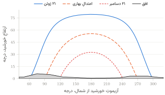
نمودارِ مسیرِ خورشید (شکل 12.1) ارتفاع را بر حسبِ آزیموت برای چند روز نشان میدهد. خورشیدِ تابستان از شمالشرق برمیخیزد و در شمالغرب مینشیند؛ خورشیدِ زمستان پایین و کوتاه است. هر مانعی که در این نمودار بالای مسیر باشد، پرتوِ مستقیم را در آن ساعتها میگیرد.
- طولِ روزِ اعتدال در هر عرض چقدر است و چرا؟
- ارتفاعِ خورشید در ظهرِ ۲۱ ژوئن در عرضِ 34° چیست؟
- چرا خورشیدِ تابستان از شمالِ شرق طلوع میکند؟
12.2.4 تابشِ بیرون از جو و ضریبِ صافی
ایده. بالای جو، خورشید روی سطحِ عمود بر پرتو \(G_\text{0n}\) میتاباند که با فاصلهٔ زمین–خورشید حدودِ سه درصد بالا و پایین میرود:
\[ G_\text{0n} = G_\text{sc}\left[1 + 0.033\cos\!\left(\frac{2\pi n}{365}\right)\right], \qquad G_\text{sc} = 1361\ \text{W/m}^2 , \tag{12.2}\]
با \(n\) شمارهٔ روزِ سال (E03: 1406 در ژانویه، 1316 W/m² در ژوئیه). روی سطحِ افقی در بالای جو تابش \(G_\text{0n}\cos\theta_z\) است و جمعِ روزانهٔ آن:
\[ H_0 = \frac{24}{\pi}\,G_\text{0n}\left(\cos\varphi\cos\delta\sin\omega_\text{s} + \omega_\text{s}\sin\varphi\sin\delta\right) . \tag{12.3}\]
ضریبِ صافی. نسبتِ تابشِ رسیده به زمین به تابشِ بالای جو، ضریبِ صافی است: ساعتی \(k_t = G_\text{h}/(G_\text{0n}\cos\theta_z)\) و ماهانه \(K_T = \bar H/\bar H_0\). این عدد «آبوهوا» را از «هندسه» جدا میکند: هندسه معلوم است، آنچه اندازهگیری میکنیم \(k_t\) است. جرمِ هوا \(AM\) (طولِ مسیرِ پرتو در جو نسبت به مسیرِ عمودی) با فرمولِ کاستن و یانگ حساب میشود و در \(60^\circ\)ِ سرسو حدودِ ۲ است (E04).
extraterrestrial irradiation and clearness index at 34 deg N:
month H0 kWh/m2/d H kWh/m2/d K_T
Jan 5.23 2.69 0.514
Feb 6.53 3.70 0.566
Mar 8.30 5.41 0.651
Apr 9.97 6.52 0.654
May 11.06 7.06 0.638
Jun 11.47 8.40 0.732
Jul 11.23 8.19 0.729
Aug 10.34 6.31 0.610
Sep 8.85 5.56 0.629
Oct 7.04 4.58 0.651
Nov 5.51 3.28 0.594
Dec 4.82 2.26 0.468
extraterrestrial normal: 1406 W/m2 in early January, 1316 W/m2 in early July
K_T is the share of the top-of-atmosphere energy that reaches
the ground: a dry site has high K_T in summer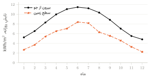
مثال 12.2 (ضریبِ صافیِ ماهانه در ساختگاه) پرسش. تابشِ روزانهٔ بیرون از جو \(H_0\)، تابشِ روزانهٔ افقیِ زمین \(H\) و \(K_T\) را برای هر ماهِ سالِ بستهٔ داده حساب کنید.
پاسخ. جدولِ بالا و شکل 12.2: \(K_T\) از 0.47 در دسامبر تا 0.73 در ژوئن و ژوئیه.
تفسیر. تابستانِ خشکِ ساختگاه هم آفتابِ بیشتری از بالای جو دارد (\(H_0\)ِ بزرگ) و هم آسمانِ صافتر (\(K_T\)ِ بزرگ)؛ زمستان هر دو را کم دارد. پس نسبتِ تابستان به زمستان در زمین (حدودِ ۳٫۷) از نسبتِ بالای جو (حدودِ ۲٫۴) بیشتر است. این ناهمسانیِ فصلی در طراحیِ ذخیرهسازی و قراردادِ فصلی (فصلهای ۱۹ و ۲۱) مهم است. وارسی: \(8.40/11.47 = 0.732\) برای ژوئن (درست).
- چرا \(G_\text{0n}\) در ژانویه بیشتر از ژوئیه است؟
- \(k_t\) را برای 800 W/m² در سرسوی 30° در ۲۱ ژوئن حساب کنید (E06).
- \(K_T\) چه چیزی را از چه چیزی جدا میکند؟
- جرمِ هوا در سرسوی 80° چند است و چرا تابش در طلوع ضعیف است؟
12.2.5 سه مؤلفهٔ تابش و بستنِ آنها
ایده. تابشِ افقیِ کل (GHI، \(G_\text{h}\)) دو بخش دارد: پرتوِ مستقیم که از قرصِ خورشید میآید و با تابشِ مستقیمِ عمودی (DNI، \(G_\text{b,n}\)) سنجیده میشود، و پخشیده از کلِ آسمان (DHI، \(G_\text{d}\)). رابطهٔ بستن:
\[ G_\text{h} = G_\text{b,n}\cos\theta_z + G_\text{d} . \tag{12.4}\]
اگر هر سه مؤلفه با سه ابزارِ جدا اندازهگیری شوند (بخش 12.3.4)، معادلهٔ 12.4 یک آزمون است: نسبتِ \((G_\text{b,n}\cos\theta_z + G_\text{d})/G_\text{h}\) باید نزدیکِ یک باشد. اگر فقط دو مؤلفه اندازهگیری شوند، سومی از این رابطه محاسبه میشود (E08).
component closure GHI = DNI cos z + DHI over the pack year:
hours tested (sun above 15 deg, GHI > 50 W/m2): 3,430
within 2 %: 100.0 %; within 8 %: 100.0 %
median ratio 1.0000
the pack's DNI and DHI were computed from its GHI, so they
close by construction; three real instruments disagree, and
the closure test finds which one drifts (section C)تفسیر. در بستهٔ داده همهٔ ساعتها بسته میشوند، اما این شاهدِ کیفیت نیست: DNI و DHIِ بسته هنگامِ ساختش از GHI حساب شدهاند. سه ابزارِ واقعی همیشه کمی ناهمخواناند و آزمونِ بستن نشان میدهد کدام یک رانش دارد (بخش 12.4.3). وارسی: E09: \(700\cos 40^\circ + 140 = 676\) در برابرِ 700، نسبتِ 0.966: در محدودهٔ آموزشیِ هشت درصد (درست).
- سه مؤلفهٔ تابش را تعریف کنید.
- اگر GHI و DHI اندازهگیری شوند، DNI را چگونه مییابید (E08)؟
- چرا بستهشدنِ کاملِ مؤلفههای بستهٔ داده شاهدِ کیفیت نیست؟
- آزمونِ بستن در سرسوی 85° چرا معنادار نیست؟
12.2.6 آسمانِ صاف: سقفِ روزانه
ایده. مدلِ آسمانِ صاف میگوید در روزِ بیابر چه تابشی به زمین میرسد. سه کاربرد دارد: (۱) سقف برای کنترلِ کیفیت؛ (۲) مرجعِ شکل برای یافتنِ خطای ساعت (بخش 12.4.1)؛ (۳) شاخصِ آسمانِ صاف \(k_c = G_\text{h}/G_\text{h,cs}\) که روزهای صاف را برای وارسیِ تراز و واسنجیِ حسگر جدا میکند. سادهترین مدل، رابطهٔ تجربیِ هاورویتز است که فقط به ارتفاعِ خورشید بستگی دارد:
\[ G_\text{h,cs} = 1098\,\cos\theta_z\, \exp\!\left(-\frac{0.057}{\cos\theta_z}\right) \quad [\text{W/m}^2] . \tag{12.5}\]
مدلهای دقیقتر کدورتِ جو، بخارِ آب و ارتفاعِ ساختگاه را هم میگیرند؛ برای کارِ وامپذیر، مدلی را به کار ببرید که روشِ مقایسهاش با دادهٔ ساختگاه سند دارد.
clear-sky index GHI / GHI_clear (Haurwitz) by month:
month GHI kWh/m2 clear kWh/m2 index clear-sky hours
Jan 83.3 109.4 0.761 178
Feb 103.5 127.1 0.814 212
Mar 167.6 184.6 0.907 300
Apr 195.5 220.9 0.885 309
May 218.8 258.1 0.848 335
Jun 252.0 262.0 0.962 418
Jul 253.8 265.0 0.958 401
Aug 195.5 240.8 0.812 284
Sep 166.9 195.0 0.856 275
Oct 142.1 154.9 0.917 288
Nov 98.3 113.1 0.869 191
Dec 70.0 99.9 0.701 119
year: 1,947 of 2,231 kWh/m2 clear-sky (0.873)
Haurwitz uses only the sun's height; it has no aerosol or
water vapour, so it is a check, not a model of the site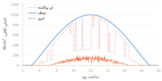
مثال 12.3 (شاخصِ آسمانِ صافِ ماهانه) پرسش. با معادلهٔ 12.5 تابشِ آسمانِ صافِ هر ساعت را حساب کنید و نسبتِ تابشِ ماهانه به آسمانِ صاف و شمارِ ساعتهای تقریباً صاف (\(k_c > 0.9\)) را بیابید.
پاسخ. جدولِ بالا: سال 0.873؛ ژوئن و ژوئیه نزدیکِ 0.96، دسامبر 0.70.
تفسیر. در تابستان تابشِ واقعی تقریباً همان آسمانِ صاف است: برای این ساختگاه، کدورتِ جو (گرد و غبار) بیشتر از ابر اهمیت دارد و مدلِ ساده که کدورت ندارد، تابستان را کمی کم برآورد میکند. در شکل 12.3، روزِ ابرِ پراکنده لحظههایی بالاتر از آسمانِ صاف دارد: تقویتِ لبهٔ ابر؛ پس سقفِ کنترلِ کیفیت نباید خودِ آسمانِ صاف باشد. وارسی: E05: در سرسوی 30°، \(1098 \times 0.866 \times e^{-0.0658} = 890\ \text{W/m}^2\) (درست).
- سه کاربردِ مدلِ آسمانِ صاف را بنویسید.
- چرا تابشِ یکدقیقهای گاهی از آسمانِ صاف بیشتر است؟
- شاخصِ آسمانِ صافِ دسامبر چه چیزی دربارهٔ آبوهوای ساختگاه میگوید؟
12.2.7 تفکیکِ تابش: از کل به مستقیم و پخشیده
ایده. بسیاری از ایستگاهها و برخی منبعهای داده فقط GHI میدهند. برای صفحهٔ شیبدار به مستقیم و پخشیده جدا نیاز داریم، چون این دو با هندسهٔ متفاوتی به صفحه میرسند. مدلِ تفکیک سهمِ پخشیده \(k_d = G_\text{d}/G_\text{h}\) را از ضریبِ صافی برآورد میکند: آسمانِ ابری (\(k_t\)ِ کم) تقریباً همه پخشیده است و آسمانِ صاف حدودِ یکششم. دو مدلِ رایج:
\[ \begin{aligned} \text{Erbs:}\quad k_d &= \begin{cases} 1 - 0.09\,k_t & k_t \le 0.22 \\ P(k_t) & 0.22 < k_t \le 0.80 \\ 0.165 & k_t > 0.80 \end{cases} \\ P(k_t) &= 0.9511 - 0.1604\,k_t + 4.388\,k_t^2 - 16.638\,k_t^3 + 12.336\,k_t^4 \\ \text{Orgill–Hollands:}\quad k_d &= \begin{cases} 1 - 0.249\,k_t & k_t < 0.35 \\ 1.557 - 1.84\,k_t & 0.35 \le k_t \le 0.75 \\ 0.177 & k_t > 0.75 \end{cases} \end{aligned} \tag{12.6}\]
def erbs_diffuse_fraction(kt):
"""Diffuse fraction k_d = DHI / GHI from the clearness index (Erbs,
Klein and Duffie 1982): three pieces joined at k_t 0.22 and 0.80."""
kt = np.asarray(kt, dtype=float)
mid = (0.9511 - 0.1604 * kt + 4.388 * kt ** 2 - 16.638 * kt ** 3
+ 12.336 * kt ** 4)
return np.where(kt <= 0.22, 1 - 0.09 * kt,
np.where(kt <= 0.80, mid, 0.165))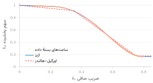
مثال 12.4 (دو مدل، یک تابشِ کل) پرسش. GHIِ سالِ بسته را با هر دو مدل به مستقیم و پخشیده تفکیک کنید و تابشِ صفحهٔ 25° را با هر کدام حساب کنید.
پاسخ.
two decomposition models on the same GHI (the pack's own DNI and
DHI were made with Erbs when the pack was built, A-013):
Erbs reproduces the pack: DHI bias +0.0 W/m2 (a circular test)
model DNI kWh/m2 DHI kWh/m2 POA at 25 deg
Erbs 2,287 545 2,150
Orgill-Hollands 2,248 568 2,147
POA differs by -0.1 %, DNI by -1.7 %
when only GHI is measured, the choice of decomposition model
is an uncertainty of the plane-of-array estimate (section C);
a synthetic dataset cannot test the model that made itتفسیر. دو نکته: (۱) نقاطِ بستهٔ داده درست روی منحنیِ ارْبز میافتند (شکل 12.4)، چون بسته با همین مدل ساخته شده است: دادهٔ ساختگی نمیتواند مدلی را که آن را ساخته بیازماید؛ دادهٔ واقعیِ ساعتی پراکندگیِ بزرگی دور از هر منحنی دارد. (۲) با وجودِ 1.7 % اختلاف در DNI، تابشِ صفحه فقط 0.1 % تغییر میکند، چون شیبِ 25° بخشِ بزرگی از پخشیده را هم میبیند. برای ردیاب یا متمرکزکننده که به DNI حساسترند، اختلاف بزرگتر است. وارسی: E07: در \(k_t = 0.5\)، ارْبز 0.659 و اورگیل–هالندز 0.637 (درست).
- چرا برای صفحهٔ شیبدار به تفکیک نیاز داریم؟
- پیوستگیِ مدلِ ارْبز را در \(k_t = 0.22\) وارسی کنید.
- چرا مقایسهٔ ارْبز با بستهٔ داده آزمونِ مدل نیست؟
- برای کدام فناوری خطای تفکیک مهمتر است؟
12.2.8 انتقال به صفحهٔ ماژول
ایده. تابشِ صفحه سه جزء دارد (فصلِ ۱۰، بخش 10.4.4): مستقیم که با کسینوسِ زاویهٔ تابش میرسد، پخشیدهٔ آسمان، و بازتابِ زمین. تفاوتِ مدلها در پخشیدهٔ آسمان است. آسمانِ همسانگرد (لیو و جردن) پخشیده را از همهٔ آسمان یکسان فرض میکند؛ مدلِ هِی–دیویس بخشی از آن را (به نسبتِ \(G_\text{b,n}/G_\text{0n}\)) دورِ خورشید میداند که مانندِ پرتوِ مستقیم با هندسه میآید:
\[ G_\text{sky} = G_\text{d}\left[A_i R_\text{b} + (1 - A_i)\,\frac{1 + \cos\beta}{2}\right],\qquad A_i = \frac{G_\text{b,n}}{G_\text{0n}},\quad R_\text{b} = \frac{\cos\theta}{\cos\theta_z} . \tag{12.7}\]
با \(A_i = 0\) همان همسانگرد است. مدلهای پیچیدهترِ صنعتی روشنیِ افق را هم جدا میکنند؛ اینکه کدام برای ساختگاه بهتر است، با اندازهگیریِ همزمانِ تابشِ صفحه سنجیده میشود.
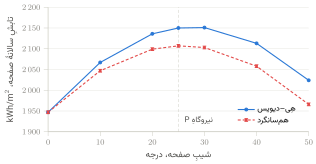
مثال 12.5 (مدلِ آسمان و شیبِ بهینه) پرسش. تابشِ سالانهٔ صفحهٔ رو به جنوب را برای شیبهای 0 تا 50° با دو مدل حساب کنید.
پاسخ.
isotropic and Hay-Davies skies for the Plant P plane:
tilt isotropic Hay-Davies difference
0 1947 1947 -0.02 %
10 2047 2067 +0.97 %
20 2099 2136 +1.73 %
25 2107 2150 +2.03 %
30 2103 2151 +2.30 %
40 2058 2113 +2.70 %
50 1966 2024 +2.95 %
Hay-Davies peaks at about 30 deg tilt;
Plant P uses 25 deg (row spacing, wind load, D-013)
the circumsolar part of the diffuse light follows the sun:
an isotropic sky under-rates a tilted plane at a sunny siteتفسیر. در شیبِ 25° دو مدل 2 % اختلاف دارند و اختلاف با شیب بیشتر میشود: در ساختگاهِ آفتابی بخشِ بزرگی از پخشیده دورِ خورشید است. انتخابِ مدل خودش یک عدمِ قطعیت است (بخش 12.4.10). منحنی نزدیکِ بیشینه تخت است: شیبِ 25°ِ نیروگاهِ P (D-013) فقط کسری از درصد کمتر از بیشینه میگیرد و در عوض فاصلهٔ ردیف و بارِ باد کمتری دارد (فصلهای ۳ و ۱۰). وارسی: در شیبِ صفر هر دو مدل همان GHI را میدهند (درست).
- سه جزءِ تابشِ صفحه را بنویسید.
- در معادلهٔ 12.7، اگر \(G_\text{b,n} = 0\) باشد چه میشود؟
- ضریبِ دیدِ آسمان و زمین را برای 25° حساب کنید (E10).
- بازتابِ زمین برای GHIِ 900 و آلبدوی 0.2 چند است (E11)؟
- چرا اختلافِ دو مدل با شیب بیشتر میشود؟
12.2.9 افق و سایهٔ دور
ایده. کوه یا تپهٔ دور وقتی پرتوِ مستقیم را میگیرد که خورشید پایینتر از افقِ آن آزیموت باشد. نیمرخِ افق (ارتفاع بر حسبِ آزیموت) با نقشهٔ ارتفاعی یا عکسبرداریِ تمامنما ساخته میشود و روی نمودارِ مسیرِ خورشید (شکل 12.1) گذاشته میشود. سایهٔ نزدیک (دکل، حصار، ساختمان، ردیفِ دیگر) مسئلهٔ دیگری است: برای نیروگاه در فصلِ ۱۰ آمد و برای حسگر در بخش 12.3.5 میآید.
far-horizon shading of the beam (A-243, teaching profile):
highest horizon 6 deg at azimuth 75 (east-north-east)
sun-up time behind the horizon: 218 h a year
beam lost on the Plant P plane: 1.7 kWh/m2 of 2,150 (0.08 %)
sky-diffuse share hidden by the horizon (isotropic): about 0.10 %
low winter and summer-morning sun is what a far horizon takes;
near objects (masts, fences, the sensor's own neighbours)
matter more for the measurement than for the plantمثال 12.6 (کوههای شرق) پرسش. با نیمرخِ آموزشیِ افق (A-243: تپههایی تا 6° در شرقِ شمالشرق، پشتهای 3° در غرب)، ساعتهای خورشیدِ پشتِ افق و تابشِ مستقیمِ ازدسترفتهٔ صفحه را حساب کنید.
پاسخ. خروجیِ بالا: 218 h در سال خورشید پشتِ افق است اما فقط 0.08 % از تابشِ صفحه از دست میرود.
تفسیر. افقِ دور ساعتهایی را میگیرد که خورشید پایین و تابش ضعیف است؛ برای نیروگاهِ ثابتِ رو به جنوب کوچک است اما برای ردیاب یا آرایهٔ شرقی–غربی که صبح و عصر را میخواهند بیشتر. در دره یا کنارِ کوهِ بلند، همین محاسبه میتواند چند درصد بدهد. وارسی: خورشیدِ تابستان در شرقِ شمالشرق طلوع میکند، همانجا که افق بلند است (درست).
- نیمرخِ افق چگونه ساخته میشود؟
- چرا ساعتهای زیاد پشتِ افق انرژیِ کمی میبرند؟
- سایهٔ دور و سایهٔ نزدیک را مقایسه کنید.
12.2.10 فصلها و سالها
ایده. منبعِ خورشیدی دو تغییرپذیری دارد: درونِ سال (فصل، که با هندسه و آبوهوا تکرار میشود) و میانِ سالها (سالِ آفتابی یا ابری، گرد و غبار، آتشفشان). اولی شکلِ تولید را میسازد و دومی عدمِ قطعیتِ تولیدِ هر سال را.
seasons and years at the Plant P site:
month GHI kWh/m2 day length h mean T C
Jan 83.3 9.99 4.4
Feb 103.5 10.75 6.3
Mar 167.6 11.78 10.2
Apr 195.5 12.86 15.3
May 218.8 13.79 23.3
Jun 252.0 14.25 28.0
Jul 253.8 14.04 29.0
Aug 195.5 13.24 27.8
Sep 166.9 12.20 22.2
Oct 142.1 11.09 16.6
Nov 98.3 10.19 11.8
Dec 70.0 9.74 5.8
20-year provider record: mean 1,910 kWh/m2, year-to-year sd 2.7 %
lowest year 1,790, highest 1,986; 2023 1,938 (+1.4 %)
one measured year is one draw from this spread (section C)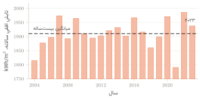
مثال 12.7 (یک سال، یک قرعه) پرسش. از سریهای ماهانهٔ بسته و بیست سالِ منبعِ تأمینکننده (A-241)، تابشِ ماهانه و طولِ روز، و پراکندگیِ سالانه را بیابید.
پاسخ. خروجیِ بالا: انحرافِ معیارِ سالبهسال 2.7 %؛ کمترین سال 1790 و بیشترین 1986 kWh/m²؛ سالِ ۲۰۲۳ 1.4 % بالای میانگین.
تفسیر. سالی که ایستگاه اندازه گرفت، سالی آفتابی بود. اگر همان سال پایهٔ انرژیِ بیستوپنجساله شود، همهٔ سالها حدودِ 1.4 % بیشبرآورد میشوند؛ تصحیحِ بلندمدت (بخش 12.4.8) همین را برطرف میکند. وارسی: انحرافِ معیارِ میانگینِ بیست سال \(2.7/\sqrt{20} = 0.6\ \%\) است (E18، درست).
- دو نوع تغییرپذیریِ منبعِ خورشیدی را با پیامدِ هر کدام بنویسید.
- چرا سالِ آفتابی پایهٔ خوبی برای بیستوپنج سال نیست؟
- انحرافِ معیارِ میانگینِ ده سال با 2.7 % سالبهسال چیست؟
12.2.11 جهتگیری و سهمِ پرتوِ مستقیم
ایده. فصلِ ۱۰ نشان داد ردیابِ تکمحوره سالانه حدودِ یکچهارم تابشِ بیشتری از میزِ ثابتِ 25° میگیرد (مثال 10.37). از چشمِ منبع پرسش این است: این سود از کجا میآید؟ ردیاب صفحه را رو به خورشید میچرخاند؛ این کار فقط پرتوِ مستقیم را زیاد میکند، چون پخشیدهٔ آسمان از همه سو میآید. پس سودِ ردیاب در ماهها و ساختگاههایی بزرگ است که سهمِ پرتوِ مستقیم (نسبتِ \(G_\text{b,n}\cos\theta_z\) به \(G_\text{h}\)) بزرگ است.
single-axis tracker against fixed 25 deg, month by month:
month beam share K_T gain
Jan 0.587 0.513 -4.2 %
Feb 0.656 0.566 +5.6 %
Mar 0.706 0.651 +18.6 %
Apr 0.737 0.654 +31.9 %
May 0.754 0.638 +43.3 %
Jun 0.792 0.732 +51.1 %
Jul 0.787 0.729 +47.7 %
Aug 0.730 0.610 +33.9 %
Sep 0.717 0.629 +24.5 %
Oct 0.712 0.651 +10.0 %
Nov 0.616 0.594 -0.8 %
Dec 0.503 0.468 -7.6 %
year: +25.7 %; across the months the gain rises about 22.1 points
per 0.1 of beam share (with the sun's height: summer has both)
in winter the horizontal tracker loses to the tilted table;
the tracker sells beam light: the decision needs the DNI (or
the beam share) of the site, measured or from a checked source,
not only the GHI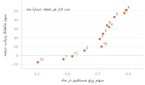
مثال 12.8 (ردیاب پرتوِ مستقیم میفروشد) پرسش. سودِ ماهانهٔ ردیابِ تکمحورهٔ شمالی–جنوبی (±55°، بیپسگرد) را در برابرِ میزِ ثابت حساب و با سهمِ پرتوِ مستقیم و \(K_T\)ِ هر ماه مقایسه کنید.
پاسخ. خروجیِ بالا: سالانه +25.7 %؛ ماههای تابستان با سهمِ پرتوِ بیشتر سودِ بیشتر، و در دسامبر ردیاب 7.6 % کمتر از میزِ شیبدار میگیرد.
تفسیر. دو اثر با هماند: تابستان هم پرتوِ مستقیمِ بیشتری دارد و هم خورشیدِ بلندتری که ردیابِ افقی را بهتر به کار میگیرد؛ زمستان خورشیدِ پایینِ جنوبی را میزِ شیبدار بهتر میگیرد. پیامدِ منبع: تصمیمِ ردیاب به DNIِ ساختگاه (اندازهگیریشده یا از منبعِ سنجیده) حساس است و GHI بهتنهایی کافی نیست؛ خطای مدلِ تفکیک (بخش 12.2.7) برای ردیاب مهمتر از میزِ ثابت است. وارسی: سودِ سالانه همان 27.3 %ِ فصلِ ۱۰ نیست چون آنجا «تابشِ مؤثر» پس از زاویهٔ تابش مقایسه شد و اینجا تابشِ صفحه (درست، دو تعریف).
- چرا ردیاب فقط پرتوِ مستقیم را زیاد میکند؟
- چرا ردیابِ افقی در زمستان از میزِ شیبدار کمتر میگیرد؟
- برای تصمیمِ ردیاب کدام دادهی منبع لازم است؟
12.2.12 آلبدوی زمین: منبعی که اندازهگیری میشود
ایده. برای ماژولِ دوطرفه (فصلِ ۱۰، بخش 10.2.17)، تابشِ پشت تقریباً با آلبدوی زمین (نسبتِ تابشِ بازتابیده به تابشِ رسیده) متناسب است. آلبدو با فصل عوض میشود: خاکِ خیس تیرهتر، علفِ خشک روشنتر، برف بسیار روشن. آلبدوسنج دو تابشسنج دارد، یکی رو به بالا و یکی رو به پایین، در ارتفاعی که «زمینِ نماینده» را ببیند؛ سلولهای مرجعِ پشتِ ماژول تابشِ واقعیِ پشت را میسنجند. مدلِ آموزشیِ این درس (A-249): نسبتِ تابشِ پشت به GHI برابرِ \(0.02 + 0.5\,\rho_\text{g}\)، که در آلبدوی 0.2 همان دوازده درصدِ فصلِ ۱۰ است.
ground albedo as a measured resource (bifacial, B_f 0.70, A-249):
albedo rear / front bifacial gain
constant 0.20 (assumed) 0.1087 7.61 %
measured, seasonal 0.1210 8.47 %
constant 0.30 0.1539 10.78 %
an albedometer (one pyranometer up, one down) over a year of
seasons, plus rear-side reference cells, replaces the assumed
0.20; each 0.1 of albedo is about 3.2 points of bifacial gainمثال 12.9 (آلبدوی فرضی و آلبدوی اندازهگیریشده) پرسش. سودِ دوطرفه (\(B_\text{f} = 0.70\)) را با آلبدوی ثابتِ 0.20، با آلبدوی فصلیِ اندازهگیریشدهٔ آموزشی (خاکِ خیس 0.18، علفِ خشک 0.25، پنج روز برف 0.60) و با 0.30 حساب کنید.
پاسخ. خروجیِ بالا: 7.6، 8.5 و 10.8 %؛ هر یکدهم آلبدو حدودِ 3.2 واحدِ درصد سود.
تفسیر. یک فرضِ ساده (۰٫۲) در این ساختگاه حدودِ یک واحدِ درصد سود را کم برآورد میکرد؛ برای نیروگاهی که سودِ دوطرفه در قیمتش آمده، این تفاوت ارزش دارد. پوششِ زمین (سنگریزهٔ روشن، گیاه) هم آلبدو را عوض میکند و تصمیمی طراحی است (فصلِ ۲۹). وارسی: \(0.70 \times 0.1087 = 0.0761\) (درست).
- آلبدوسنج چگونه کار میکند؟
- چرا آلبدو با فصل تغییر میکند؟
- سودِ دوطرفه با آلبدوی 0.25 در مدلِ آموزشی چند است؟
12.2.13 جرمِ هوا و طیف
ایده. هرچه خورشید پایینتر باشد، نور مسیرِ بلندتری در جو میپیماید (جرمِ هوای بیشتر) و طیفش سرختر میشود، چون نورِ آبی بیشتر پخش میشود. توانِ نامیِ ماژول با طیفِ مرجعِ جرمِ هوای 1.5 تعریف شده است (IEC 60904-3:2019، فصلِ ۱۰). فناوریهایی که پاسخِ طیفیِ باریکتری دارند (برخی لایهٔنازکها) به تغییرِ طیف حساسترند؛ سیلیکونِ بلوری کمتر.
GHI by air mass over the year (hour-mean sun):
air mass share of GHI
1.0 - 1.5 55.9 %
1.5 - 2.0 23.1 %
2.0 - 3.0 12.5 %
3.0 - more 8.5 %
the reference spectrum of module ratings is air mass 1.5
(IEC 60904-3:2019); most of this site's energy arrives near it,
low winter and morning sun is redder, which crystalline silicon
minds less than some thin-film technologies (chapter 10)تفسیر. بیش از نیمی از تابشِ این ساختگاه با جرمِ هوای کمتر از 1.5 و حدودِ هشتاد درصد کمتر از ۲ میرسد؛ پس اثرِ طیف برای ماژولِ سیلیکونیِ نیروگاهِ P کوچک است. در عرضهای بالاتر یا ساختگاهِ پرغبار سهمِ جرمِ هوای بالا بیشتر است و مدلِ طیفی یا ضریبِ تطبیقِ طیفی (فصلِ ۱۰) لازم میشود. وارسی: جرمِ هوای 1.5 یعنی سرسوی حدودِ 48.2° (P06، درست).
- چرا نورِ خورشیدِ پایین سرختر است؟
- طیفِ مرجعِ ردهبندیِ ماژول کدام جرمِ هواست؟
- برای کدام فناوریها اثرِ طیف مهمتر است؟
12.2.14 میزِ شرقی–غربی در برابرِ میزِ جنوبی
ایده. میزهای شرقی–غربی با شیبِ کم (مثلاً 10°)، دو صفحه پشت به پشت دارند: یکی صبح را بهتر میگیرد، دیگری عصر را. هر مترمربع ماژول تابشِ کمتری از میزِ جنوبیِ بهینه میگیرد، اما روزِ تولید پهنتر و قله کوتاهتر است و ردیفها تقریباً بیفاصلهاند، پس در هر هکتار ماژولِ بیشتری جا میگیرد. پرسشِ منبع این است که شکلِ روز در این ساختگاه چقدر تغییر میکند.
east-west tables at 10 deg against south-facing 25 deg (per m2):
annual POA: south 2,150, east-west 1,926 kWh/m2 (-10.4 %)
highest hourly mean: south 796, east-west 687 W/m2
east-west gives less per module but a flatter day (less
clipping, a better fit to a morning or evening peak) and more
modules per hectare: a resource question and a land question
(chapters 14 and 18)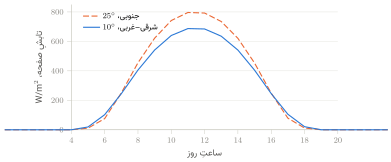
مثال 12.10 (روزِ پهنتر، قلهٔ کوتاهتر) پرسش. تابشِ سالانه و نیمرخِ روزانهٔ صفحهٔ جنوبیِ 25° و میانگینِ دو صفحهٔ شرقی و غربیِ 10° را با مدلِ هِی–دیویس حساب کنید (بی سایهٔ ردیف).
پاسخ. خروجیِ بالا: شرقی–غربی 10.4 % تابشِ کمتر برای هر مترمربع، و قلهٔ ساعتیِ 687 در برابرِ 796 W/m².
تفسیر. برای هر مترمربع ماژول جنوبی بهتر است؛ برای هر هکتار زمین و برای نیروگاهی که سقفِ صادرات یا بُرشِ اینورتر دارد، شرقی–غربی میتواند بهتر باشد، چون قلهٔ کوتاهتر بُرشِ کمتری دارد. پاسخ به زمین (فصلِ ۱۴)، سقفِ اتصال و قیمتِ ساعتی (فصلِ ۱۸) بستگی دارد؛ این فصل فقط شاهدِ منبع را میدهد. وارسی: \(1926/2150 = 0.896\) (درست).
- مزیتها و هزینهٔ میزِ شرقی–غربی را بنویسید.
- چرا قلهٔ کوتاهتر برای نیروگاهِ دارای سقفِ صادرات مفید است؟
- معیارِ مقایسه را «برای هر مترمربع» یا «برای هر هکتار» انتخاب میکنید؟ چرا؟
12.2.15 گرد و غبارِ جو: پرتو در برابرِ پخشیده
ایده. ذرههای معلق (گرد و غبار، دود، نمک) نورِ مستقیم را پخش و جذب میکنند. بخشی از نورِ پخششده هنوز به زمین میرسد، اما از همهٔ آسمان؛ پس در روزِ غبارآلود DNI بسیار و GHI کمتر کم میشود و سهمِ پخشیده بالا میرود. سنجهای مانندِ عمقِ نوریِ هواویز این را کمّی میکند و منبعهای ماهوارهای آن را از مدلهای جو میگیرند؛ ساختگاهِ بیابانیِ نزدیکِ دریاچهٔ خشک نمونهٔ جایی است که این اثر مهم است.
a dusty clear day, 23 June (A-249: beam -30 %, a third of the lost
beam reappears as diffuse):
GHI 8.80 -> 7.36 kWh/m2 (-16.3 %)
DNI 10.43 -> 7.30 kWh/m2 (-30 %)
POA 25 deg 8.03 -> 6.77 kWh/m2 (-15.7 %)
GHI falls about half as much as DNI: dust shows most clearly in
DNI and in the diffuse fraction; trackers (beam) lose more than
fixed fronts, and the modules get dirty tooمثال 12.11 (روزِ غبارآلود) پرسش. روزِ صافِ ۲۳ ژوئن را با غبار شبیهسازی کنید (A-249: سی درصد از پرتو کم و یکسومِ آن به پخشیده افزوده)؛ اثر را بر GHI، DNI و تابشِ صفحه بیابید.
پاسخ. خروجیِ بالا: GHI −16 %، DNI −30 %، صفحهٔ 25° −16 %.
تفسیر. کاهشِ GHI حدودِ نیمِ کاهشِ DNI است: رکوردی که فقط GHI دارد، غبار را کمتر از واقع نشان میدهد. ردیاب که پرتوِ مستقیم میفروشد (مثال 12.8) بیشتر زیان میبیند، و گرد و غبارِ نشسته روی ماژول (فصلِ ۱۰) زیانِ جدایی است که به این افزوده میشود. وارسی: کاهشِ پرتوِ افقی سی درصد و بازگشتِ یکسومِ آن به پخشیده، کاهشِ خالصِ حدودِ بیست درصد از سهمِ پرتو میدهد که با سهمِ پرتوِ حدودِ هشتاد درصدِ آن روز همان حدودِ شانزده درصد است (درست).
- چرا غبار DNI را بیشتر از GHI کم میکند؟
- کدام فناوری از غبارِ جو بیشتر زیان میبیند؟
- غبارِ جو و غبارِ روی ماژول را مقایسه کنید.
12.2.16 همپوشانیِ خورشید و باد
ایده. نیروگاهِ P دو منبع را پشتِ یک نقطهٔ اتصال با سقفِ 100 MW دارد. اگر خورشید و باد همزمان اوج بگیرند، سقف زودتر پر میشود و بُرش بیشتر است؛ اگر ناهمزمان باشند، هر کدام جای خالیِ دیگری را پر میکند. همبستگیِ ساعتی و ماهانهٔ دو منبع یک ویژگیِ منبع است که پیش از هر طراحیِ هیبریدی سنجیده میشود.
solar and wind at Plant P (data-pack year, before losses):
hourly correlation r = -0.111; monthly r = -0.410
hours with combined output above 100 MW: 166
standard deviation of hourly output: solar 17.8, wind 21.4, together 26.3 MW
wind is stronger at night and in winter, solar by day and in
summer: the two fill each other's gaps, which is the reason for
a hybrid plant behind one connection (chapters 17 and 18)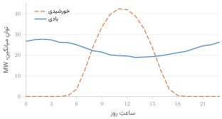
مثال 12.12 (دو منبع که هم را کامل میکنند) پرسش. همبستگیِ ساعتی و ماهانهٔ توانِ خورشیدی (پیش از اینورتر، تقریبی) و بادی (منحنیِ بسته با چگالی) را در سالِ بستهٔ داده بیابید و پراکندگیِ مجموع را با هر کدام مقایسه کنید.
پاسخ. خروجیِ بالا: همبستگیِ ساعتی −0.11 و ماهانه −0.41؛ انحرافِ معیارِ مجموع 26.3 MW در برابرِ جمعِ ساده 39.2.
تفسیر. همبستگیِ منفی یعنی مجموع صافتر از جمعِ دو منبع است: انحرافِ معیارِ مجموع کمتر از جمعِ انحرافِ معیارهاست (اگر همبستگی مثبتِ کامل بود، برابر میشد). باد شب و زمستان قویتر است و خورشید روز و تابستان (شکل 12.9). این ویژگیِ منبع پایهٔ معماریِ هیبریدی و اندازهٔ اتصال در فصلهای ۱۷ و ۱۸ است. وارسی: \(\sqrt{17.8^2 + 21.4^2 + 2(-0.111)(17.8)(21.4)} = 26.3\) (درست).
- همبستگیِ منفیِ دو منبع چه سودی برای نیروگاهِ هیبریدی دارد؟
- انحرافِ معیارِ مجموع را با همبستگیِ صفر حساب کنید.
- چرا همبستگیِ ماهانه از ساعتی منفیتر است؟
12.3 ب. سامانههای اندازهگیری
بخشِ ب ایستگاهِ هواشناسیِ نیروگاهِ P را میسازد: کدام حسگر، با چه ویژگی، کجا و چگونه نصب، واسنجی، تمیز و ثبت شود، و از تأمینکننده چه شاهدی گرفته شود. خطاهای حسگر با عدد سنجیده میشوند تا روشن شود کدام مهم است (A-248، مقدارهای آموزشی؛ مقدارِ واقعی از گواهیِ واسنجی و مشخصهٔ هر ابزار میآید).
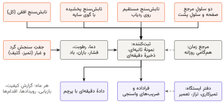
12.3.1 تابشسنجهای حرارتی
ایده. تابشسنجِ نیمکرهای (به انگلیسی pyranometer) تابشِ همهٔ آسمان را روی سطحِ تختِ خود میسنجد. در نوعِ حرارتی، صفحهٔ سیاهی زیرِ یک یا دو گنبدِ شیشهای گرم میشود و ترموپیل (چند ترموکوپلِ سری) اختلافِ دمای صفحه و بدنه را به ولتاژِ چند میلیولتی تبدیل میکند. ولتاژ با ضریبِ حساسیت (\(\mu\text{V}\) بر \(\text{W/m}^2\)) از گواهیِ واسنجی به تابش تبدیل میشود. پاسخِ طیفیِ تخت از فرابنفش تا فروسرخ و زاویهای نزدیک به کسینوسی، این ابزار را مرجعِ اندازهگیریِ «انرژیِ خورشید» میکند.
منبعهای خطا (به ترتیبِ اهمیتِ معمول در ساختگاهِ گرم و گرد و غبار):
- پاسخِ زاویهای (خطای کسینوسی): در خورشیدِ پایین، بازتابِ گنبد و صفحه با کسینوس فرق دارد.
- جابهجاییِ حرارتی: گنبدِ سرد که به آسمانِ شب تابش میکند، صفحه را خنک میکند و ابزار عددی منفی میدهد؛ روز هم همین اثر کمی هست.
- وابستگی به دما، غیرخطی بودن، تراز نبودن، زمانِ پاسخ (چند ثانیه).
- آلودگیِ گنبد (گرد و غبار، شبنم، فضله) و رانشِ حساسیت با گذشتِ زمان.
directional (cosine) error of a pyranometer (A-248, teaching):
response 1 % low at 60 deg zenith, 5 % low near the horizon
annual GHI 1,947.2 -> 1,934.5 kWh/m2 (-0.65 %)
hours with the sun below 20 deg: 1,368, their GHI -2.9 %
small in the annual sum, large in winter mornings: the error
is in the hours a tracker or an east-west array cares aboutthermal offset of a single-dome pyranometer (A-248, teaching):
-4 W/m2 in daylight, 4,660 daylight hours: -18.6 kWh/m2 (-0.96 % of GHI)
the night readings show it (negative values at night, flag 8);
a ventilated, double-dome or heated instrument keeps it smallمثال 12.13 (دو خطای کوچک، دو اثرِ متفاوت) پرسش. با منحنیِ پاسخِ زاویهایِ آموزشی (یک درصد کمتر در سرسوی 60° و پنج درصد نزدیکِ افق) و جابهجاییِ حرارتیِ منفیِ 4 W/m² در روز (A-248)، اثرِ هر کدام را بر تابشِ سالانه و بر ساعتهای خورشیدِ پایین بیابید.
پاسخ. خروجیهای بالا: خطای زاویهای سالانه −0.65 % اما در ساعتهای خورشیدِ پایینتر از 20° حدودِ −3 %؛ جابهجایی −18.6 kWh/m² یا حدودِ −1 % سالانه (E12).
تفسیر. هر دو خطا سالانه کوچکاند، اما خطای زاویهای در صبح و عصر و زمستان جمع است، همان ساعتهایی که ردیاب و آرایهٔ شرقی–غربی میخواهند، و جابهجایی در هر ساعتِ روز یکسان است و در روزهای ابری سهمِ بزرگی میشود. ابزارِ تهویهدار یا دوگنبدی هر دو را کم میکند. وارسی: \(-4 \times 4660/1000 = -18.6\ \text{kWh/m}^2\) (درست).
- ترموپیل چه میکند و چرا پاسخِ طیفیِ تخت دارد؟
- چرا تابشسنج در شب عددِ منفی میدهد؟
- کدام خطا در ساعتهای خورشیدِ پایین بزرگ است؟
- اثرِ جابهجاییِ −4 W/m² را در روزی ابری با میانگینِ 150 W/m² به درصد حساب کنید.
12.3.2 ردههای ابزار و ردههای پایش
ایده. استانداردِ ISO 9060:2018 تابشسنجها را بر پایهٔ مجموعهای از ویژگیها (پاسخِ زاویهای، دمایی، غیرخطی بودن، جابهجاییِ حرارتی، پایداری و …) در سه رده (A، B، C) دستهبندی میکند و برای ابزارهای سریع و طیفتخت زیرردهٔ جدا دارد. استانداردِ پایشِ سامانهٔ فتوولتائیک (IEC 61724-1:2021) هم سامانههای پایش را در سه رده با دقت و هزینهٔ متفاوت تعریف میکند و برای هر رده نوعِ حسگر، شمار، نگهداری و واسنجی را میخواهد. مقدارهای هر رده در خودِ استانداردهاست و این کتاب آنها را نقل نمیکند.
پیامدِ طراحی. ردهٔ ابزار با کاربرد انتخاب میشود: برای ارزیابیِ منبعِ وامپذیر و آزمونِ عملکرد، بالاترین رده و پایش با بیشترین دقت؛ برای پایشِ روزمرهٔ بلوکها، ردهٔ پایینتر با شمارِ بیشتر کافی است. ردهٔ حسگر بدونِ نگهداریِ همتراز معنا ندارد: ابزارِ ردهٔ بالا با گنبدِ کثیف از ابزارِ ردهٔ پایینِ تمیز بدتر است.
ISO 9060:2018 (ردهبندیِ تابشسنجها) و IEC 61724-1:2021 (پایشِ عملکردِ سامانهٔ فتوولتائیک) با عنوان و ویرایشِ وارسیشده در دفترِ استانداردها ثبتاند (STD-014، STD-069). پیش از استناد به هر بند، متنِ رسمی و ویرایشِ معتبر در زمانِ پروژه را ببینید؛ پذیرشِ ملیِ آنها در سه کشورِ کتاب وارسی نشده است.
- ردهبندیِ ابزار و ردهبندیِ سامانهٔ پایش چه فرقی دارند؟
- چرا ردهٔ بالای ابزار بی نگهداری بیارزش است؟
- برای ارزیابیِ منبعِ وامپذیر چه ردهای میخواهید و چرا؟
12.3.3 سلولِ مرجع: چشمی که ماژول دارد
ایده. سلولِ مرجع یک سلولِ خورشیدیِ واسنجیشده پشتِ همان شیشهٔ ماژول است؛ جریانِ اتصالِ کوتاهِ آن با تابش متناسب است. چون همان بازتابِ شیشه و همان پاسخِ طیفیِ سلول را دارد، «تابشِ مؤثر» برای ماژول را میسنجد، نه انرژیِ کلِ خورشید. پاسخش سریع است (میلیثانیه) و ارزانتر از تابشسنج است، اما به طیف و دما حساس است و باید از همان فناوریِ ماژول باشد.
plane-of-array pyranometer against a reference cell (PV type):
pyranometer (all angles, broad spectrum): 2,150 kWh/m2
reference cell (sees the glass reflection like a module):
2,086 kWh/m2 (-3.0 %)
PR of the chapter 10 year: 0.862 with the pyranometer, 0.889 with the cell
neither is wrong: the contract and the model must say which
sensor the PR uses (IEC 61724-1:2021 names both kinds)مثال 12.14 (دو نسبتِ عملکرد برای یک سال) پرسش. با تابشِ صفحهٔ سالِ فصلِ ۱۰، نسبتِ عملکرد را یک بار با تابشسنجِ صفحه و یک بار با سلولِ مرجع (که بازتابِ شیشه را میبیند) حساب کنید.
پاسخ. خروجیِ بالا: سلول 3 % تابشِ کمتری میبیند و نسبتِ عملکرد 0.889 در برابرِ 0.862 میشود.
تفسیر. هر دو درستاند، برای دو تعریف. قرارداد و مدل باید بگویند نسبتِ عملکرد با کدام حسگر حساب میشود؛ وگرنه سه درصد اختلاف بهاشتباه «کمکاریِ نیروگاه» یا «کارِ بهترِ پیمانکار» خوانده میشود (فصلهای ۳۷ و ۵۰). وارسی: \(2086/2150 = 0.970\) (درست).
- سلولِ مرجع و تابشسنج را در سه ویژگی مقایسه کنید.
- چرا سلولِ مرجع باید از فناوریِ ماژولِ نیروگاه باشد؟
- نسبتِ عملکردِ قرارداد با کدام حسگر باید تعریف شود؟
12.3.4 پرتوِ مستقیم و پخشیده
ایده. تابشسنجِ مستقیم (به انگلیسی pyrheliometer) لولهای است که فقط قرصِ خورشید و حلقهٔ کوچکی دورِ آن را میبیند و روی ردیابِ دومحوره همیشه رو به خورشید است. پخشیده با تابشسنجی اندازهگیری میشود که یک گوی یا حلقهٔ سایه قرصِ خورشید را از آن میپوشاند. ایستگاهِ کامل هر سه مؤلفه را جدا میسنجد و آزمونِ بستن (معادلهٔ 12.4) را ممکن میکند. راهِ ارزانتر تابشسنجِ نوارِ چرخان است که با یک حسگرِ سریع و نواری که هر چند ثانیه از جلوی آن میگذرد، کل و پخشیده را میسنجد و مستقیم را حساب میکند؛ تصحیحهای ویژهٔ خودش را دارد.
هزینه و سود. ردیابِ دومحوره نگهداری میخواهد (همراستایی، تمیزی، برق)؛ اما برای نیروگاهِ دوطرفه یا ردیابدار، تفکیکِ اندازهگیریشده خطای مدلِ تفکیک (بخش 12.2.7) را برمیدارد و آزمونِ بستن رانشِ هر ابزار را نشان میدهد.
- تابشسنجِ مستقیم چه چیزی را میبیند و چرا ردیاب میخواهد؟
- پخشیده چگونه اندازهگیری میشود؟
- ایستگاهِ سهمؤلفهای چه آزمونی را ممکن میکند؟
12.3.5 جای نصب، تراز و سایه
ایده. حسگر باید همان آسمانی را ببیند که نیروگاه میبیند. قاعدههای اصلی: افقِ آزاد (هیچ مانعی بالای مسیرِ خورشید در هیچ فصل، شکل 12.1)؛ تراز (تابشسنجِ افقی با ترازِ حبابیِ خودش؛ حسگرِ صفحه با شیب و آزیموتِ دقیقِ ردیفها)؛ دوری از سطوحِ بازتابنده و منابعِ گرما و گرد و غبار (جاده، محلِ شستوشو)؛ دسترسیِ امن برای تمیزکاری؛ و نماینده بودن: حسگرِ صفحه باید در ردیفی باشد که سایهٔ ردیفِ جلو و بازتابِ زمینِ آن شبیهِ بقیهٔ نیروگاه است. برای ماژولِ دوطرفه، حسگرِ پشت در چند ارتفاع و جا لازم است چون تابشِ پشت ناهمسان است.
سایهٔ نزدیک خطرناکتر از افقِ دور است: دکلِ خودِ ایستگاه، بازوی حسگرِ دیگر یا میلهای که بعداً نصب شده، صبحهای یک فصلِ خاص را میگیرد. نشانهاش در داده، افتِ تکرارشونده در یک ساعتِ ثابت روزهای صاف است (مثال 12.20).
نصب و نگهداریِ ایستگاه روی دکل یا سقف کارِ در ارتفاع و گاه کار با برق است؛ این بخش رویهٔ کار نیست. کار فقط با رویهٔ مکتوب، آموزش و مجوزِ کار انجام میشود (فصلهای ۳۲ و ۴۹).
- پنج قاعدهٔ جای نصبِ حسگر را بنویسید.
- سایهٔ نزدیک در داده چه نشانهای دارد؟
- چرا حسگرِ پشتِ ماژولِ دوطرفه در یک نقطه کافی نیست؟
12.3.6 واسنجی و ردیابی
ایده. عددِ تابش حاصلتقسیمِ ولتاژ بر ضریبِ حساسیت است؛ پس هر خطای ضریب مستقیم به همهٔ داده میرود. ضریب در آزمایشگاهِ واسنجی با مقایسه با ابزارِ مرجع تعیین میشود که خودش به مرجعِ جهانیِ تابش ردیابیپذیر است؛ گواهیِ واسنجی ضریب، عدمِ قطعیتِ آن، شرایطِ آزمون و تاریخ را میدهد. حساسیت با گذشتِ زمان (پرتوی فرابنفش، گرما) کمی تغییر میکند، پس ابزار در فاصلههای برنامهریزیشده دوباره واسنجی میشود، یا در ساختگاه با ابزارِ مرجعِ تازهواسنجیشده کنارِ آن مقایسه میشود.
calibration factor of a thermopile pyranometer (A-248):
certificate: 8.50 uV per W/m2; reading 7.65 mV -> 900 W/m2
after two years the recalibration gives 8.41 uV per W/m2 (-1.1 %)
the same reading is then 910 W/m2: data logged
with the old factor read 1.1 % low
the correction is applied from the date of the change (or
linearly between the two calibrations) and logged as such
recalibration interval and method follow the instrument's
class and the campaign's plan (ISO 9060:2018 classes)مثال 12.15 (ضریبی که دو سال کهنه بود) پرسش. گواهی 8.50 μV/(W/m²) میدهد و پس از دو سال واسنجیِ دوباره 8.41. دادهای که با ضریبِ قدیم ثبت شده چقدر خطا دارد و چگونه اصلاح میشود؟
پاسخ. خروجیِ بالا: ولتاژِ 7.65 mV با ضریبِ قدیم 900 و با ضریبِ تازه 910 W/m² است: داده 1.1 % کم خوانده شده است (E13).
تفسیر. نمیدانیم حساسیت کِی تغییر کرد؛ رایجترین فرض تغییرِ خطی میانِ دو واسنجی است و اصلاح با همین فرض در دفترِ داده ثبت میشود. مقایسهٔ هفتگی با منبعِ مستقل (بخش 12.4.5) میتواند زمانِ تغییر را روشنتر کند. وارسی: \(7.65 \times 10^{-3}/8.41 \times 10^{-6} = 910\) (درست).
- گواهیِ واسنجی چه اطلاعاتی میدهد؟
- چرا حساسیتِ تابشسنج با زمان تغییر میکند؟
- دادهٔ میانِ دو واسنجی را با چه فرضی اصلاح میکنید؟
12.3.7 تمیزکاریِ حسگر
ایده. گنبدِ آلوده تابش را کم نشان میدهد. در ساختگاهِ خشکِ گرد و غباری، گنبد در چند روز چند درصد کثیف میشود؛ شبنم و یخِ صبحگاهی هم ساعتهای نخستِ روز را خراب میکنند. تمیزکاریِ حسگر با تمیزکاریِ ماژول فرق دارد (بخشِ ث): هدفِ اولی درستماندنِ اندازهگیری است و هدفِ دومی انرژی. قاعدههای عملی: تمیزکاریِ روزانه در فصلِ خشک با پارچهٔ نرم و آبِ مقطر یا الکل، ثبتِ زمانِ هر تمیزکاری (برای اصلاح و برای حذفِ دقیقههای سایهٔ تمیزکننده)، بازدیدِ رطوبتگیر و ترازِ حبابی، و گرمکن و دمنده برای شبنم و یخ. یک جفت حسگرِ همسان که یکی کمتر تمیز میشود، خودش شاهدِ نرخِ آلودگی است.
اثرِ کمّی در بخشِ ث آمده است (مثال 12.34): حسگری که هفتگی تمیز میشود حدودِ نیم درصد و ماهانه حدودِ دو و نیم درصد کم میخواند.
- هدفِ تمیزکاریِ حسگر و ماژول چه فرقی دارد؟
- چرا زمانِ هر تمیزکاری ثبت میشود؟
- جفتِ حسگرِ همسان با تمیزکاریِ متفاوت چه شاهدی میسازد؟
12.3.8 ثبتکننده، نمونهبرداری و فراداده
ایده. ثبتکننده ولتاژِ حسگرها را هر چند ثانیه نمونه میگیرد و میانگین (و کمینه، بیشینه و انحرافِ معیار) را برای هر دقیقه ذخیره میکند. نمونهگیریِ کمبسامد مجموعِ روزانه را تقریباً درست نگه میدارد اما نوسانها را از دست میدهد؛ و نوسان برای بُرش، باتری و مطالعهٔ شبکه مهم است. ساعتِ ثبتکننده باید روزانه با مرجعِ زمانی همگام شود و این همگامی ثبت شود.
sampling against averaging on a broken-cloud day (one-minute data):
daily irradiation 5.445 kWh/m2
ten-minute means from all samples: 5.445; from one sample per 10 min: 5.378
RMS difference of the ten-minute values 97 W/m2
(mean daylight value 441 W/m2)
sample often (every few seconds) and average: sparse samples
keep the daily sum roughly right but not the ramps that
clipping, storage and grid studies needdata volume of the Plant P weather station (teaching):
14 channels sampled every second: 1,766 MB a year raw
one-minute mean, minimum, maximum: 88 MB a year
store the one-minute record with flags, the calibration
factors in force, the cleaning and maintenance log, and the
clock synchronisation log: data without metadata is not
evidenceمثال 12.16 (یک نمونه در ده دقیقه) پرسش. در روزِ ابرِ پراکنده (شکل 12.3)، میانگینِ دهدقیقهای را یک بار از همهٔ نمونهها و یک بار فقط از یک نمونه در هر ده دقیقه بسازید.
پاسخ. خروجیِ بالا: مجموعِ روز فقط 1.2 % فرق دارد اما خطای جذرِ میانگینِ مربعاتِ مقدارهای دهدقیقهای 97 W/m² است، حدودِ یکپنجمِ مقدارِ میانگین.
تفسیر. برای انرژیِ سالانه هر دو روش تقریباً کافیاند؛ برای «کِی» و «چقدر سریع» فقط میانگینِ نمونههای متراکم. فراداده (شمارهٔ سریالِ حسگر، ضریبِ واسنجیِ در حال اجرا، جای نصب، تاریخِ تمیزکاری و تعمیر، همگامیِ ساعت) همراهِ داده نگه داشته میشود؛ دادهای که فراداده ندارد، شاهد نیست. وارسی: \(5.445/5.378 = 1.012\) (درست).
- چرا نمونهبرداریِ ثانیهای و ذخیرهٔ دقیقهای؟
- پنج قلم فرادادهٔ لازم را نام ببرید.
- چرا همگامیِ ساعت باید ثبت شود؟
12.3.9 نگهداری و دفترِ ایستگاه
ایده. کیفیتِ دادهٔ یک سال حاصلِ صدها کارِ کوچکِ نگهداری است. دفترِ ایستگاه هر کار را با زمان، کننده و پیامد ثبت میکند: تمیزکاری، تراز، تعویضِ رطوبتگیر، همراستاییِ ردیاب، تعویضِ حسگر (با سریال و ضریبِ تازه)، قطعِ برق، تغییرِ تنظیمِ ثبتکننده. تحلیلگر بدونِ این دفتر نمیتواند افتِ ناگهانی را به «گنبدِ کثیف» یا «ابرِ واقعی» نسبت دهد. بازدیدِ ماهانه فهرستی ثابت دارد و نتیجهاش (عکس، عددِ تراز، وضعیتِ گنبد) پیوستِ گزارشِ ماهانهٔ کیفیت است (مثال 12.38).
- شش قلمِ دفترِ ایستگاه را نام ببرید.
- بی دفترِ ایستگاه کدام تشخیص ناممکن میشود؟
- بازدیدِ ماهانه چه خروجیای دارد؟
12.3.10 شاهد از تأمینکننده: مشخصه و گواهی
ایده. ساختِ حسگر در این کتاب «کاربرد ندارد» (ردیفِ ممیزیِ فصل): نیروگاه حسگر نمیسازد، میخرد. اما خرید بیشاهد نیست. از تأمینکننده خواسته میشود: (۱) برگهٔ مشخصه با ردهٔ ابزار بر پایهٔ استاندارد و روشِ آزمونِ هر ویژگی؛ (۲) گواهیِ واسنجیِ هر ابزار با شمارهٔ سریال، ضریب، عدمِ قطعیت، آزمایشگاه و اعتبارِ آن، و ردیابیپذیری؛ (۳) دستورِ نصب و نگهداری؛ (۴) پیشینهٔ پایداری (رانشِ سالانهٔ اعلامشده) و پیشنهادِ فاصلهٔ واسنجی؛ (۵) برای ثبتکننده، دقتِ ورودیِ ولتاژ و ساعت. بازرسیِ دریافت (فصلِ ۴۰) سریالها را با گواهیها تطبیق میدهد و پیش از نصب، چند روز همهٔ حسگرها کنارِ هم مقایسه میشوند تا ابزارِ معیوب پیش از شروعِ کمپین شناخته شود.
- پنج شاهدی را که از تأمینکنندهٔ حسگر میخواهید بنویسید.
- مقایسهٔ کنارِ همِ حسگرها پیش از نصب چه سودی دارد؟
- چرا «ساختِ حسگر» در این فصل کاربرد ندارد اما «شاهدِ تأمینکننده» دارد؟
12.3.11 شبنم، یخ و برف
ایده. در صبحهای سرد و مرطوب، شبنم یا یخ روی گنبدِ تابشسنج مینشیند و نور را پخش یا جذب میکند؛ عدد چند ساعت پس از طلوع کمتر از واقع است، درست وقتی آسمان صاف است و خطا بیشترین اثر را دارد. برف گنبد را کاملاً میپوشاند و عدد را تا صفر پایین میآورد، در حالی که ماژولهای شیبدار ممکن است زودتر پاک شوند. نشانهها در داده: نسبتِ ایستگاه به آسمانِ صاف در صبحهای صاف که با دمای زیرِ نقطهٔ شبنم همزمان کم است؛ اختلافِ ناگهانیِ دو حسگر که یکی گرمکن دارد؛ عددِ صفر در روزِ آفتابیِ پس از برف. پیشگیری: دمندهٔ هوا و گرمکنِ گنبد، تمیزکاریِ صبحگاهی در فصلِ شبنم، و ثبتِ رطوبت و دما تا دقیقههای آسیبدیده پرچم بخورند.
- چرا شبنم بیشترین اثر را در صبحهای صاف دارد؟
- نشانهٔ برف روی گنبد در داده چیست؟
- کدام تجهیز اثرِ شبنم را کم میکند؟
12.3.12 برق، ارتباط و امنیتِ ایستگاه
ایده. ایستگاهی که برقش قطع شود یا دادهاش نرسد، شکاف میسازد (بخش 12.4.4). اجزای پشتیبان: برقِ پشتیبان (باتری و صفحهٔ خورشیدیِ کوچک یا اتصال به برقِ نیروگاه با محافظ)، حافظهٔ محلی که چند هفته داده را نگه دارد اگر ارتباط قطع شود، ارتباطِ دور با گزارشِ روزانهٔ سلامت (ولتاژِ باتری، دمای جعبه، آخرین نمونه)، و امنیتِ سایبری (رمز، بهروزرسانی، جداسازیِ شبکه؛ فصلِ ۳۶). ایستگاه در محوطهٔ نیروگاه با حصار و دسترسیِ کنترلشده نصب میشود. هر قطعی با علت در دفترِ ایستگاه ثبت میشود و در گزارشِ ماهانه میآید.
- چهار جزءِ پشتیبانِ ایستگاه را نام ببرید.
- گزارشِ روزانهٔ سلامتِ ایستگاه چه چیزهایی دارد؟
- چرا امنیتِ سایبریِ ایستگاه مهم است؟
12.3.13 راهاندازیِ ایستگاه: مقایسهٔ کنارِ هم
ایده. پیش از آغازِ کمپین، همهٔ تابشسنجهای همنوع چند روز کنارِ هم، افقی و روی یک سطح، کار میکنند. نسبتِ هر کدام به میانهٔ همه باید در محدودهٔ عدمِ قطعیتِ واسنجی باشد. ابزاری که بیرون میافتد یا ضریبِ نادرستی در ثبتکننده دارد (ضریبِ سریالِ دیگر، خطای تایپ)، یا آسیبِ حمل دیده است. این آزمونِ ارزان خطایی را میگیرد که در غیرِ این صورت یک سال بعد در گزارشِ انرژی پیدا میشود.
side-by-side check of four pyranometers, 14 days (A-249):
sensor ratio to the median verdict
S1 0.9970 accept
S2 1.0016 accept
S3 1.0331 check certificate
S4 0.9948 accept
sensor S3 reads about 3.3 % above the median (3.6 % was put in):
its logger used the sensitivity
of another serial; found before the campaign started, not a
year later in the energy reportمثال 12.17 (ضریبی که مالِ سریالِ دیگر بود) پرسش. چهار تابشسنج دو هفته کنارِ هم کار کردهاند (A-249). نسبتِ هر کدام به میانه را در ساعتهای بالای 200 W/m² بیابید و با محدودهٔ آموزشیِ یکونیم درصد داوری کنید.
پاسخ. خروجیِ بالا: سه حسگر در محدوده؛ S3 حدودِ 3.3 % بالاتر از میانه.
تفسیر. چرا میانه و نه میانگین؟ چون میانه از یک ابزارِ خراب کمتر اثر میگیرد: میانگین با S3 بالا میرود و همهٔ ابزارهای سالم را «پایین» نشان میدهد. مقدارِ محاسبهشده (3.3 %) کمی کمتر از خطای کاشتهشده (3.6 %) است، چون میانه هم کمی از آن اثر گرفته است. اقدام: وارسیِ ضریبِ ثبتکننده با گواهی، اصلاح، تکرارِ مقایسه. وارسی: ساعتهای زیرِ 200 W/m² کنار گذاشته شدند چون جابهجاییِ حرارتی و خطای زاویهای در آنها نسبت را خراب میکند (درست).
- مقایسهٔ کنارِ هم چه خطاهایی را میگیرد؟
- چرا نسبت به میانه و نه میانگین؟
- چرا ساعتهای کمتابش کنار گذاشته شدند؟
12.3.14 عدمِ قطعیتِ یک عدد و عدمِ قطعیتِ جمعِ سال
ایده. اجزای عدمِ قطعیتِ یک تابشسنج دو گونهاند: سامانمند (ضریبِ واسنجی، پاسخِ زاویهای، تراز) که هر ساعت با همان علامت تکرار میشوند، و تصادفی (نوفه، جابهجاییِ حرارتی، دما، آلودگیِ میانِ دو تمیزکاری) که از ساعتی به ساعت دیگر تغییر میکنند. در جمعِ سال، بخشِ تصادفی تقریباً با جذرِ شمارِ دورههای مستقل کوچک میشود و بخشِ سامانمند نمیشود:
\[ u_\text{year} \approx \sqrt{u_\text{sys}^2 + \frac{u_\text{rnd}^2}{N_\text{eff}}} , \tag{12.8}\]
که \(N_\text{eff}\) شمارِ دورههای مستقل است (اینجا روزها، چون خطاهای یک روز به هم وابستهاند).
uncertainty of one hourly GHI value and of the annual sum (teaching):
systematic parts (same sign every hour):
calibration factor 1.2 %
directional response 0.5 %
levelling 0.3 %
random parts (change from hour to hour, correlated within a day):
thermal offset and noise 1.0 %
temperature dependence 0.4 %
non-linearity 0.3 %
soiling between cleanings 0.4 %
one hourly value: 1.8 %
annual sum: random part / sqrt(182 days) -> 0.09 %; total 1.3 %
the calibration factor dominates the year; the random parts
dominate a single hour (performance tests over short periods)مثال 12.18 (یک ساعت در برابرِ یک سال) پرسش. با عدمِ قطعیتهای آموزشیِ جدول، عدمِ قطعیتِ یک مقدارِ ساعتی و جمعِ سالانهٔ GHI را حساب کنید.
پاسخ. خروجیِ بالا: ساعتی 1.8 %، سالانه 1.3 % که تقریباً همه سامانمند است.
تفسیر. برای انرژیِ سالانه، ضریبِ واسنجی تعیینکننده است و واسنجیِ دقیقتر بیشترین سود را دارد؛ برای آزمونِ عملکردِ کوتاهمدت (چند روز، فصلِ ۵۰) بخشِ تصادفی هم مهم است و میانگینگیری روی ابزارهای افزونه یا روزهای بیشتر کمک میکند. این جدول جزءِ «ابزار»ِ بودجهٔ مثال 12.25 را باز میکند. وارسی: \(\sqrt{1.2^2 + 0.5^2 + 0.3^2} = 1.33\ \%\) سامانمند (درست).
- اجزای سامانمند و تصادفیِ تابشسنج را نام ببرید.
- چرا روزها و نه ساعتها دورههای مستقل گرفته شدند؟
- برای آزمونِ عملکردِ سهروزه کدام بخش مهمتر است؟
12.4 پ. پردازشِ داده
بخشِ پ دادهٔ خام را به سریِ کنترلشده تبدیل میکند: برچسبِ زمانی، پرچمها، آزمونِ بستن، پرکردنِ شکاف، رانشِ حسگر، منبعهای ماهوارهای و بازتحلیل، تصحیحِ بلندمدت و بودجهٔ عدمِ قطعیت. قاعدهٔ کلی: هیچ عددی حذف نمیشود؛ هر مقدار پرچمی میگیرد و هر اصلاح با دلیل ثبت میشود، تا تحلیلگرِ بعدی بتواند تصمیم را بازبیند.
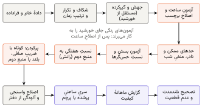
12.4.1 برچسبِ زمانی و خطای ساعت
ایده. خطای ساعت رایجترین و پنهانترین خطای دادهٔ تابش است: تنظیمِ نادرستِ منطقهٔ زمانی، تغییرِ تابستانیِ ناخواسته، ثبتکنندهای که پس از قطعِ برق با ساعتِ پیشفرض راه افتاده، یا برچسبِ پایانِ بازه که آغاز خوانده شده. دو آزمون آن را آشکار میکنند: (۱) تقارنِ صبح و عصر در روزهای صاف نسبت به ظهرِ خورشیدی؛ (۲) همبستگیِ متقابل با منحنیِ آسمانِ صاف: جابهجاییای که بیشترین همخوانی را میدهد، خطای ساعت است. همبستگی بدونِ کمکردنِ میانگین حساب میشود تا شبها (صفر) روز را لنگر بیندازند.
def best_lag(measured, reference, max_lag: int) -> int:
"""Shift (samples) that best aligns a measured series with a reference:
largest normalised cross-product (no mean removal, so the dark night
hours anchor the day); positive means the measurement is late."""
m = np.nan_to_num(np.asarray(measured, float))
r = np.nan_to_num(np.asarray(reference, float))
best, best_c = 0, -np.inf
for lag in range(-max_lag, max_lag + 1):
a = m[max(lag, 0):len(m) + min(lag, 0)]
b = r[max(-lag, 0):len(r) + min(-lag, 0)]
c = float(np.dot(a, b) / math.sqrt(max(np.dot(a, a) * np.dot(b, b), 1e-30)))
if c > best_c:
best, best_c = lag, c
return bestfinding a clock error in hourly data (pack year):
pack GHI against clear sky: best lag 0 h
the same data stored one hour late: best lag 1 h
morning/afternoon symmetry around solar noon shows the same
thing on clear days; a UTC/local mix-up gives exactly 4 h here
share of GHI before noon: pack 0.500, late copy 0.379مثال 12.19 (یک ساعت دیر) پرسش. سریِ ساعتیِ بسته را یک ساعت دیر ذخیره کنید و با آزمونِ همبستگی و سهمِ تابشِ پیش از ظهر خطا را بیابید.
پاسخ. خروجیِ بالا: سریِ درست جابهجاییِ صفر و سهمِ پیش از ظهرِ 0.500 دارد؛ سریِ دیر جابهجاییِ یک ساعت و سهمِ 0.379.
تفسیر. در ساختگاهی که خورشید متقارن است، سهمِ پیش از ظهر باید نزدیکِ نیم باشد؛ انحرافِ بزرگ و ثابت در همهٔ روزهای صاف نشانهٔ ساعت است، نه آبوهوا (مهِ صبحگاهی هم سهمِ صبح را کم میکند، اما فقط در برخی روزها). وارسی: اگر UTC بهجای +04:00 خوانده شود، جابهجایی دقیقاً چهار ساعت است (E16).
- چهار علتِ رایجِ خطای ساعت را نام ببرید.
- چرا همبستگی بدونِ کمکردنِ میانگین حساب میشود؟
- سهمِ پیش از ظهرِ 0.38 در همهٔ روزهای صاف چه معنایی دارد؟
12.4.2 پرچمها و حدهای کنترلِ کیفیت
ایده. هر نمونه چند آزمون را میگذراند و نتیجه در یک عددِ پرچم (هر بیت یک آزمون) کنارش ثبت میشود. شبکههای جهانیِ اندازهگیریِ تابش دو خانوادهٔ حد به کار میبرند: ممکنِ فیزیکی (بالاتر از آن یعنی ابزار یا ثبت خراب است) و بسیار نادر (ممکن اما مشکوک، نیازمندِ نگاهِ تحلیلگر). هر دو با ارتفاعِ خورشید تغییر میکنند. شکلِ آموزشیِ این کتاب برای تابشِ افقیِ کل، با \(\mu_0 = \cos\theta_z\):
\[ \begin{aligned} G_\text{h} &< 1.5\,G_\text{0n}\,\mu_0^{1.2} + 100 \quad \text{(ممکنِ فیزیکی)} , \\ G_\text{h} &< 1.2\,G_\text{0n}\,\mu_0^{1.2} + 50 \quad \text{(بسیار نادر)} , \end{aligned} \tag{12.9}\]
و حدهای مشابه برای پخشیده و مستقیم. ثابتها آموزشیاند؛ کمپینِ واقعی حدهای سندِ شبکه یا استانداردی را به کار میبرد که به آن گزارش میدهد. آزمونهای دیگر: شکاف (نبودِ داده)، منفیِ شب بزرگتر از چند وات (جابهجاییِ حرارتی یا خرابیِ ثبتکننده)، گیرکرده (عددِ ثابت چند ساعت)، بستن (بخش 12.4.3).
def qc_limits(cos_zen, g0n_wm2) -> dict:
"""Upper limits of the two test families (teaching constants): a value
above 'phys' is physically impossible, above 'rare' extremely rare."""
mu = np.clip(np.asarray(cos_zen, float), 0, None)
s = np.asarray(g0n_wm2, float)
m12 = mu ** 1.2
return {"ghi_phys": 1.5 * s * m12 + 100, "ghi_rare": 1.2 * s * m12 + 50,
"dhi_phys": 0.95 * s * m12 + 50, "dhi_rare": 0.75 * s * m12 + 30,
"dni_phys": s, "dni_rare": 0.95 * s * mu ** 0.2 + 10}
def qc_flags(ghi, dni, dhi, cos_zen, g0n_wm2, closure_tol: float = 0.08):
"""Bit flags per sample: 1 physically impossible, 2 extremely rare,
4 components do not close (sun above 15 deg, GHI > 50 W/m2), 8 large
negative value at night, 16 missing."""
ghi, dni, dhi = (np.asarray(x, float) for x in (ghi, dni, dhi))
cz = np.asarray(cos_zen, float)
lim = qc_limits(cz, g0n_wm2)
f = np.zeros(ghi.shape, dtype=int)
miss = np.isnan(ghi) | np.isnan(dni) | np.isnan(dhi)
f |= np.where(miss, FLAG_MISSING, 0)
g, d, b = (np.nan_to_num(x) for x in (ghi, dhi, dni))
phys = ((g > lim["ghi_phys"]) | (d > lim["dhi_phys"])
| (b > lim["dni_phys"]) | (g < -4) | (d < -4) | (b < -4))
rare = ((g > lim["ghi_rare"]) | (d > lim["dhi_rare"])
| (b > lim["dni_rare"]))
f |= np.where(phys & ~miss, FLAG_PHYS, 0)
f |= np.where(rare & ~phys & ~miss, FLAG_RARE, 0)
test = (cz > math.sin(math.radians(15))) & (g > 50) & ~miss
ratio = np.divide(b * cz + d, g, out=np.ones_like(g), where=g > 0)
f |= np.where(test & (np.abs(ratio - 1) > closure_tol), FLAG_CLOSURE, 0)
f |= np.where((cz <= 0) & (g < -10) & ~miss, FLAG_NIGHT_NEG, 0)
return f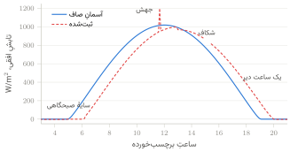
خطاهای روزِ شکل 12.12 را این تابع کاشته است؛ دانستنِ خطای کاشتهشده امکان میدهد هر آزمون را با «پاسخِ درست» بسنجیم:
def faulty_clear_day() -> dict:
"""The clear day with five faults: logger clock 60 min late, thermal
offset at night, a mast shading the sensor at sunrise, two spikes, and
a 25-minute gap; plus a 3 % soiling loss after a dust event at noon."""
d = minute_days()["clear"]
x = d["true"].copy()
x = np.roll(x, 60) # clock one hour late
x = np.where(d["cz"] <= 0, x - 3.0, x) # night offset -3 W/m2
t = np.arange(1440)
x[(t > 330) & (t < 375)] *= 0.25 # mast shadow
x[[700, 701]] = 1600.0 # spikes
x[(t >= 900) & (t < 925)] = np.nan # gap
x[t >= 780] *= 0.97 # dust at 13:00
return {**d, "measured": x}مثال 12.20 (روزِ صافی که پنج عیب داشت) پرسش. روزِ صافِ یکدقیقهایِ شکل 12.12 پنج خطای کاشتهشده دارد (A-242). پرچمها را بزنید، خطای ساعت را بیابید و پس از اصلاحِ ساعت پرچمها را دوباره بشمارید.
پاسخ.
one clear day of one-minute GHI with five faults (A-242):
as logged: missing 25 min, physically impossible 64, extremely rare 80,
negative at night 529 min (thermal offset)
shift against the clear-sky curve, spikes and gaps removed: 50 min late
(raw values: 49 min); the sunrise shadow skews it, and
the logger set-up shows UTC+05 for +04: shift 60 min
after the shift: impossible 0, extremely rare 2; the 'impossible' values
were sun after sunset, a symptom of the clock, not the sky
left: the two spikes (extremely rare), the night offset, a dip
in the first 45 min after sunrise on a clear day (a nearby
object shades the sensor) and a 3 % step after noon (dust on
the dome, section E)تفسیر. دو درسِ اصلی: (۱) شصتوچهار «ناممکنِ فیزیکی» در دادهٔ خام در واقع خورشید پس از غروب بود: نشانهٔ ساعتِ دیر، نه آسمانِ غیرعادی؛ پس از اصلاحِ ساعت هیچ کدام نماند. ترتیبِ آزمونها مهم است: آزمونهایی که به جای خورشید وابستهاند، پیش از اصلاحِ ساعت گمراه میکنند. (۲) برآوردِ جابهجایی 50 دقیقه شد، نه شصت: سایهٔ صبحگاهی شکلِ منحنی را کج کرده بود. تحلیلگر عدد را با علتِ محتمل (تنظیمِ ثبتکننده) تطبیق داد و شصت دقیقه را به کار برد؛ این تصمیم با دلیلش در دفتر ثبت میشود. وارسی: دو نمونهٔ 1600 W/m² در نزدیکیِ ظهر پس از اصلاحِ ساعت در 10:40 از حدِ «بسیار نادر» (حدودِ 1510) بالاترند و از حدِ «ممکن» (حدودِ 1925) پایینتر (درست).
- دو خانوادهٔ حد را تعریف کنید و بگویید با هر کدام چه میکنید.
- حدِ «ممکنِ فیزیکی» را برای \(\mu_0 = 0.5\) و \(G_\text{0n} = 1361\) حساب کنید.
- چرا «ناممکن»های عصرِ مثال 12.20 پس از اصلاحِ ساعت ناپدید شدند؟
- چرا عددِ پرچمخورده حذف نمیشود؟
- نشانههای «گیرکرده» و «منفیِ شب» را بنویسید.
12.4.3 آزمونِ بستن و مقایسهٔ ابزارها
ایده. در ایستگاهِ سهمؤلفهای، معادلهٔ 12.4 هر ساعت آزموده میشود: نسبتِ مجموعِ مؤلفهها به کل باید در محدودهای نزدیکِ یک باشد (در این کتاب، آموزشی، هشت درصد برای خورشیدِ بالاتر از 15°). نسبتی که بهتدریج دور میشود نشانهٔ رانشِ یک ابزار است؛ کدام؟ با نگاه به ساعتِ روز (خطای زاویهای در صبح و عصر)، نوعِ آسمان (پخشیده در روزهای ابری غالب است) و دفترِ ایستگاه (کدام گنبد دیر تمیز شد). وقتی دو حسگرِ همسان (مثلاً دو سلولِ مرجعِ صفحه) هست، نسبتِ آن دو هم یک آزمونِ ساده و قوی است: اختلافِ ناگهانی یعنی یکی خراب یا کثیف شده است.
- نسبتِ بستنِ 0.966 را تفسیر کنید (E09).
- چگونه تشخیص میدهید کدام ابزار رانش دارد؟
- دو حسگرِ همسان چه آزمونی را ممکن میکنند؟
12.4.4 شکافها و پرکردن
ایده. شکافِ داده (قطعِ برق، خرابیِ ثبتکننده، حذفِ نمونههای پرچمخورده) دو نوع است: کوتاه (چند دقیقه تا چند ساعت) و بلند (روزها). شکافِ کوتاه با درونیابی پر میشود، اما نه درونیابیِ خودِ تابش، چون تابش با جای خورشید تغییر میکند؛ ضریبِ صافی درونیابی میشود و تابش از هندسه بازسازی میشود. شکافِ بلند از منبعِ دوم (منبعِ ماهوارهای، بخش 12.4.6) با ضریبِ همترازی پر میشود. هر مقدارِ پرشده پرچمِ «پرشده» و روشِ پرکردن را با خود دارد.
تابعِ پرکردن فقط شکافهایی را پر میکند که دو سرِ معتبر دارند و از حدِ کوتاه بلندتر نیستند:
def fill_short_gaps(kt, max_gap: int = 3):
"""Fill gaps of at most max_gap samples by linear interpolation of the
clearness index; longer gaps stay nan (they need another source)."""
x = np.asarray(kt, float).copy()
nan = np.isnan(x)
i = 0
while i < len(x):
if nan[i]:
j = i
while j < len(x) and nan[j]:
j += 1
if 0 < i and j < len(x) and j - i <= max_gap:
x[i:j] = np.interp(np.arange(i, j), [i - 1, j], [x[i - 1], x[j]])
i = j
else:
i += 1
return xfilling two-hour gaps by interpolating the clearness index:
344 daylight hours removed and filled
bias -12.1 W/m2, RMSE 32.0 W/m2
energy of the filled hours: true 196.4, filled 192.2 kWh/m2
interpolating GHI itself would ignore the sun's path; the
clearness index carries the weather, the geometry is known
gaps longer than a few hours are filled from a second source
(provider series), and every filled value keeps its flagمثال 12.21 (سیصد شکافِ دوساعته) پرسش. سیصد شکافِ دوساعته در ساعتهای روز بسازید، با درونیابیِ ضریبِ صافی پر کنید و خطا را بسنجید.
پاسخ. خروجیِ بالا: سوگیریِ −12 W/m² و خطای جذرِ میانگینِ مربعاتِ 32 W/m²؛ انرژیِ ساعتهای پرشده 2 % کمتر از واقعی.
تفسیر. پرکردن خطا دارد، اما خطای کوچک و معلوم؛ رها کردنِ شکاف (جمعِ سال بدونِ آن ساعتها) خطای بزرگ و پنهان میسازد: در مثال 12.33 حدودِ پنج درصد. سوگیریِ منفی از این است که شکافها در ساعتهای تصادفیاند و درونیابی قلههای کوتاه را صاف میکند. وارسی: \(192.2/196.4 = 0.979\) (درست).
- چرا ضریبِ صافی را درونیابی میکنیم نه خودِ تابش؟
- شکافِ بلند را با چه چیزی پر میکنید و چه شرطی لازم است؟
- چرا رها کردنِ شکاف از پرکردنش بدتر است؟
12.4.5 رانشِ حسگر
ایده. حسگری که آهسته حساسیت از دست میدهد یا آهسته کثیف میشود، هیچ پرچمی را نمیزند: هر عدد «ممکن» است. رانش فقط با مقایسه با مرجعی پایدار دیده میشود: حسگرِ دوم، منبعِ ماهوارهای، یا مدلِ آسمانِ صاف در روزهای صاف. نسبتِ هفتگیِ مجموعِ حسگر به مجموعِ مرجع ساخته میشود؛ این نسبت با آبوهوا و خطای مرجع چند درصد نوسان دارد، پس یک هفته چیزی را ثابت نمیکند، اما روندِ چندماهه با آزمونِ آماری (شیبِ رگرسیون و خطای معیارِ آن، فصلِ ۳) تشخیص داده میشود.
def ratio_by_block(measured, reference, block: int):
"""Ratio of sums in consecutive blocks (e.g. weeks): a drifting or
soiled sensor shows as a falling ratio against a stable reference."""
m = np.asarray(measured, float)
r = np.asarray(reference, float)
n = len(m) // block
return np.array([np.nansum(m[k * block:(k + 1) * block])
/ np.nansum(r[k * block:(k + 1) * block]) for k in range(n)])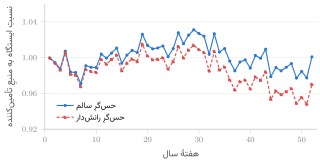
مثال 12.22 (رانشی که هیچ پرچمی نزد) پرسش. حسگری که هفتهای 0.06 % حساسیت از دست میدهد (A-245) را با منبعِ تأمینکننده هفتهبههفته مقایسه کنید؛ شیبِ سالانه و معناداریِ آن را برای حسگرِ سالم و رانشدار بیابید.
پاسخ.
weekly ratio station / provider (52 weeks):
sound sensor: mean 1.001, sd 0.015, trend -0.4 % a year
drifting sensor: trend -3.5 % a year
standard error of a one-year trend: 0.7 % a year; the drift
is 4.9 standard errors, the sound sensor's 0.6
year's GHI with the drift: 1,918 kWh/m2 (-1.5 %)
a weekly ratio scatters by several per cent (weather, provider
error); a trend over months stands out, a single week does not
a second station sensor or a recalibration settles the caseتفسیر. نسبتِ هفتگی حدودِ 1.5 % نوسان دارد؛ رانشِ 3.5 % در سال حدودِ پنج برابرِ خطای معیار است و آشکار، اما روندِ 0.4 %ِ حسگرِ سالم معنادار نیست. رانشِ کوچکتر از حدودِ یک درصد در سال با یک مرجعِ پرنوسان دیده نمیشود؛ حسگرِ دوم یا واسنجیِ دورهای لازم است. وارسی: کاهشِ 1.5 %ِ تابشِ سال تقریباً نصفِ رانشِ پایانِ سال است، چون رانش خطی از صفر شروع شد (درست).
- چرا رانش هیچ پرچمی نمیزند؟
- سه مرجعِ ممکن برای یافتنِ رانش را نام ببرید.
- چرا یک هفته نسبتِ پایین چیزی را ثابت نمیکند؟
12.4.6 منبعهای ماهوارهای
ایده. ماهوارههای هواشناسیِ زمینآهنگ هر چند دقیقه از نیمکرهٔ زمین تصویر میگیرند. الگوریتمها از روشناییِ ابر در هر پیکسل، شاخصِ ابر و سپس با مدلِ آسمانِ صاف و دادهٔ کدورتِ جو و بخارِ آب، تابشِ سطح را میسازند. ویژگیها: پوششِ طولانی (دو دهه یا بیشتر)، بیشکاف، مستقل از ایستگاه؛ اما میانگینِ مکانی (پیکسلِ چند کیلومتری)، خطای ساعتیِ بزرگتر، و سوگیری که به کدورتِ جو، برف، بیابانِ روشن و ارتفاع بستگی دارد. سنجههای مقایسه: سوگیریِ میانگین (MBE)، خطای جذرِ میانگینِ مربعات (RMSE) و مقایسهٔ توزیعها (چندکها)، که زمانبندی را کنار میگذارد و برای مدلِ انرژی مهم است.
سریِ منبعِ تأمینکنندهٔ این فصل چنین ساخته شده است (A-240)؛ هر ویژگیِ آن (هموارسازی، سوگیریِ فصلی، پراکندگی، تفکیکِ خود) در مقایسه دوباره دیده میشود:
@lru_cache(maxsize=1)
def provider(seed: int = 121) -> dict:
"""Satellite-style hourly series: clearness index pulled 15 % towards
a 3-hour running mean (pixel and time smoothing), a seasonal bias
(+3 % in winter to -1.5 % in summer), random scatter of 7 % of GHI,
and DNI/DHI from the Erbs model."""
p = pack()
rng = np.random.default_rng(seed)
kt = np.nan_to_num(ir.clearness_index(p["ghi"], p["cz"], p["g0n"]))
smooth = np.convolve(kt, np.ones(3) / 3, mode="same")
kt_p = kt + 0.15 * (smooth - kt)
bias = 0.0075 + 0.0225 * np.cos(2 * np.pi * (p["month"] + 0.5) / 12)
ghi = kt_p * p["g0n"] * p["cz"] * (1 + bias)
ghi *= 1 + 0.07 * rng.standard_normal(8760)
ghi = np.where(p["cz"] > 0.02, np.clip(ghi, 0, None), 0.0)
dni, dhi = ir.decompose(ghi, p["cz"], p["g0n"])
return {"ghi": ghi, "dni": dni, "dhi": dhi}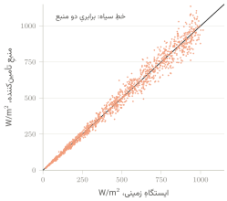
مثال 12.23 (دو منبع، یک سال) پرسش. سریِ ساعتیِ منبعِ تأمینکننده (A-240: ساختگی، ساختهشده مانندِ محصولِ ماهوارهای) را با ایستگاهِ زمینی ماهبهماه و ساعتبهساعت مقایسه کنید.
پاسخ.
provider series against the ground year (A-240):
month ground kWh/m2 provider bias %
Jan 83.3 83.8 +0.7
Feb 103.5 105.4 +1.9
Mar 167.6 167.5 -0.0
Apr 195.5 194.6 -0.5
May 218.8 216.3 -1.2
Jun 252.0 248.9 -1.2
Jul 253.8 247.9 -2.3
Aug 195.5 192.4 -1.6
Sep 166.9 167.8 +0.5
Oct 142.1 142.5 +0.3
Nov 98.3 99.6 +1.3
Dec 70.0 71.2 +1.7
year: ground 1,947.2, provider 1,937.8 kWh/m2 (-0.5 %)
hourly GHI: MBE -0.2 W/m2 (-0.0 %), RMSE 40 W/m2 (8 %)
hourly DNI: MBE -9.1 W/m2, RMSE 103 W/m2
distribution distance (quantiles) GHI 5.0 W/m2
mean daylight GHI 476 W/m2: the annual sums agree within a per cent,
single hours scatter by about 8 % RMS and DNI much more:
what matters depends on the use (energy, clipping, tracking)تفسیر. جمعِ سال تنها 0.5 % فرق دارد، اما الگوی فصلی دارد: زمستان بیشبرآورد و تابستان کمبرآورد (شکل 12.15). اگر فقط ماههای زمستان مقایسه شوند، نتیجه گمراهکننده است. خطای ساعتیِ RMSE حدودِ هشت درصدِ میانگین است و DNI خطای بسیار بزرگتری دارد، چون تفکیکِ منبع را هم دارد. وارسی: مجموعِ ماههای جدول همان 1937.8 است (درست).
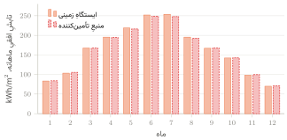
تطبیقِ ساختگاهی. وقتی دستکم یک سال دادهٔ زمینیِ کنترلشده هست، سوگیریِ منبعِ ماهوارهای (کل یا ماهانه، یا بر حسبِ ضریبِ صافی) برآورد و از کلِ سریِ بلندمدتِ آن کم میشود. روش و سنجهها سند میشوند تا بازبین بتواند آن را تکرار کند.
- سه مزیت و سه محدودیتِ منبعِ ماهوارهای را بنویسید.
- MBE و RMSE هر کدام چه چیزی را میسنجند؟
- چرا مقایسهٔ فقط زمستانیِ دو منبع گمراهکننده است؟
- تطبیقِ ساختگاهی به چه دادهای نیاز دارد؟
12.4.7 بازتحلیل و منبعهای دیگر
ایده. بازتحلیل مدلِ عددیِ جوِ جهانی است که با همهٔ مشاهدههای تاریخی دوباره اجرا شده و دههها دادهٔ ساعتیِ همگن میدهد. برای باد (فصلِ ۱۳) منبعِ اصلیِ بلندمدت است؛ برای تابش معمولاً از ماهواره ضعیفتر است، چون ابر را از مدل میگیرد نه از تصویر. منبعهای دیگر: ایستگاههای هواشناسیِ ملی (دادهٔ طولانی، اما گاه با ابزار و نگهداریِ ناشناخته و دور از ساختگاه)، سالهای نمونه (سالِ «نوعی» ساختهشده از ماههای نماینده، برای طراحی مناسب اما نه برای عدمِ قطعیتِ سالبهسال). انتخابِ منبعِ بلندمدت با همخوانی با دادهٔ ساختگاه در دورهٔ همزمان و پایداریِ خودِ منبع (بیتغییرِ ماهواره یا الگوریتم) سنجیده میشود.
- بازتحلیل چیست و چرا برای تابش از ماهواره ضعیفتر است؟
- سالِ نوعی برای چه کاری مناسب است و برای چه کاری نه؟
- دو معیارِ انتخابِ منبعِ بلندمدت را بنویسید.
12.4.8 تصحیحِ بلندمدت
ایده. دادهٔ ساختگاه درست اما کوتاه است؛ منبعِ ماهوارهای بلند اما سوگیر. تصحیحِ بلندمدت این دو را ترکیب میکند. سادهترین روش، نسبت:
\[ \bar G_\text{site,LT} = \bar G_\text{site,conc} \times \frac{\bar G_\text{ref,LT}}{\bar G_\text{ref,conc}} , \tag{12.10}\]
که «همزمان» دورهٔ مشترکِ ایستگاه و منبع است. فرضِ پنهان: خطای منبع در همهٔ سالها یکسان است. روشِ دیگر رگرسیونِ ماهانه است (شیب و عرض از مبدأ) که با دادههای کمِ ماهانه ممکن است بیشبرازش شود. همین ایده برای باد با نامِ «اندازهگیری، همبستگی، پیشبینی» در فصلِ ۱۳ با جزئیاتِ بیشتر میآید.
def long_term_ratio(site, ref_concurrent, ref_long) -> float:
"""Long-term mean at the site: the short site record scaled by the
reference source's long-term to concurrent ratio (sums or means)."""
return float(np.mean(site) * np.mean(ref_long) / np.mean(ref_concurrent))long-term correction of the one-year ground record:
ground 2023 1,947.2 kWh/m2; provider 2023 1,937.8
provider 20-year mean 1,910.5 kWh/m2
ratio 0.9859: long-term site estimate 1,919.7 kWh/m2 (-1.4 %)
the ground year was sunnier than usual; using it as it is
would overstate every later year's energy by about that much
the method assumes the provider's error is the same in every
year (no trend, no change of satellite or algorithm)
monthly regression variant: 1,918.9 kWh/m2 (slope 1.033, intercept -4.6)مثال 12.24 (سالِ آفتابی به میانگینِ بیستساله) پرسش. با معادلهٔ 12.10 و سریِ بیستسالهٔ منبع (A-241)، تابشِ بلندمدتِ ساختگاه را برآورد کنید و با رگرسیونِ ماهانه مقایسه کنید.
پاسخ. خروجیِ بالا: ضریبِ 0.9859 و برآوردِ 1919.7 kWh/m²، 1.4 % کمتر از سالِ اندازهگیریشده؛ رگرسیونِ ماهانه 1918.9.
تفسیر. دو روش در یکدهم درصد همخواناند؛ اختلافِ اصلی از سال است نه از روش. اگر منبع در این بیست سال ماهواره یا الگوریتمش را عوض کرده باشد، فرضِ ثابتبودنِ سوگیری میشکند و باید فقط دورهٔ همگن به کار رود. وارسی: \(1910.5/1937.8 = 0.9859\) (E15، درست).
- فرضِ پنهانِ روشِ نسبت چیست؟
- چرا رگرسیونِ ماهانه با یک سال داده ممکن است بیشبرازش شود؟
- اگر منبع وسطِ دوره الگوریتمش را عوض کرده باشد، چه میکنید؟
12.4.9 تغییرپذیریِ سالبهسال
ایده. میانگینِ بلندمدت یک عدد است، اما هر سالِ واقعی از آن فاصله دارد. برای عمرِ پروژه میانگین مهم است (و عدمِ قطعیتِ برآوردِ آن)؛ برای یک سال (مثلاً سالِ اول یا سالی که بازپرداختِ وام در آن سخت است) پراکندگیِ سالبهسال هم اضافه میشود. با انحرافِ معیارِ \(s\) و \(N\) سال، عدمِ قطعیتِ میانگین \(s/\sqrt N\) است (E18: \(2.7/\sqrt{20} = 0.6\ \%\)). وامدهنده معمولاً هر دو را میخواهد: «P90 یکساله» و «P90 دهساله» (فصلهای ۱۶ و ۲۱).
- چرا عدمِ قطعیتِ یک سال از عدمِ قطعیتِ میانگینِ بلندمدت بیشتر است؟
- عدمِ قطعیتِ میانگینِ ده سال با انحرافِ معیارِ 2.7 % چیست؟
- وامدهنده چرا P90 یکساله را میخواهد؟
12.4.10 بودجهٔ عدمِ قطعیت و P50/P90
ایده. هر منبعِ خطا یک عدمِ قطعیتِ استاندارد (یک انحرافِ معیار) دارد. اگر مستقل باشند، با جذرِ مجموعِ مربعات ترکیب میشوند. با توزیعِ نرمال، مقدارِ با احتمالِ فزونیِ نود درصد:
\[ u_\text{c} = \sqrt{\sum_i u_i^2}, \qquad P_{90} = P_{50}\,(1 - 1.2816\,u_\text{c}) . \tag{12.11}\]
اجزای معمولِ منبعِ خورشیدی: ابزار و واسنجی، نگهداری و آلودگیِ حسگر، تصحیحِ بلندمدت (پایداری و همخوانیِ منبع)، طولِ دورهٔ بلندمدت، و برای تابشِ صفحه، مدلهای تفکیک و انتقال. همبستگی میانِ اجزا (مثلاً دو حسگرِ یک آزمایشگاه) جمعِ ساده را بیاعتبار میکند و باید جدا بررسی شود.
uncertainty of the long-term annual GHI (A-245, one sigma):
station sensor (class, calibration) 2.0 %
sensor soiling and maintenance 1.0 %
long-term correction (provider stability) 1.5 %
long-term mean of 20 years 0.6 %
combined (root sum of squares) 2.8 %
P50 1,920 kWh/m2; P90 long-term 1,852
any single year adds the year-to-year spread 2.7 %:
P90 one-year 1,825 kWh/m2 (combined 3.8 %)
the plane-of-array, PV-model and loss uncertainties of chapters
15 and 16 add to these before an energy P90 is quotedمثال 12.25 (P50 و P90ِ تابشِ افقی) پرسش. با عدمِ قطعیتهای آموزشیِ A-245 (ابزار 2 %، آلودگی و نگهداری 1 %، تصحیحِ بلندمدت 1.5 %، میانگینِ بیست سال)، P50 و P90ِ بلندمدت و یکسالهٔ تابشِ افقی را حساب کنید.
پاسخ. خروجیِ بالا: \(u_\text{c} = 2.8\ \%\)؛ P50 1920، P90ِ بلندمدت 1852 و P90ِ یکساله 1825 kWh/m².
تفسیر. بزرگترین جزء ابزار است؛ پس هزینه برای حسگرِ ردهٔ بالا، واسنجی و نگهداری مستقیم در P90 و در شرایطِ وام دیده میشود. وارسی: E14: با \(u = 2.8\ \%\) گردشده، \(1920 \times (1 - 1.2816 \times 0.028) = 1851\)؛ برنامه با عدمِ قطعیتِ دقیق 1852 میدهد (درست).
- چرا عدمِ قطعیتهای مستقل با جذرِ مجموعِ مربعات جمع میشوند؟
- اگر عدمِ قطعیتِ ابزار از دو به یک درصد برسد، \(u_\text{c}\) چه میشود؟
- همبستگیِ اجزا چه اثری دارد؟
- P90 با \(u_\text{c} = 4\ \%\) چند درصد زیرِ P50 است؟
12.4.11 دادهٔ خودِ نیروگاه: همترازیِ زمان
ایده. پس از ساخت، دادهٔ منبع با دادهٔ خودِ نیروگاه (انرژیِ سامانهٔ پایش و کنترل) مقایسه میشود. هر دو قراردادِ زمانیِ خود را دارند. پروندهٔ صادراتیِ سامانهٔ پایشِ بستهٔ داده (فصلِ ۵، بخش 5.2.7) زمان را به UTC و عدد را با ممیزِ اعشاری مینویسد؛ ایستگاه به وقتِ استانداردِ +04:00. اگر یکی بیتبدیل کنارِ دیگری گذاشته شود، چه دیده میشود؟
the plant's SCADA export (UTC, decimal comma) against the station:
71 hourly rows, issues 1
UTC converted to +04:00: PR over the export 0.751
hourly correlation of energy and POA r = 1.000
UTC read as local: PR over the export 0.744
hourly correlation of energy and POA r = 0.324
the period's PR barely notices a four-hour error, because the
sums over whole days are the same; the hour-by-hour correlation
collapses: check alignment hourly, report daily
(the export was made with chapter 5's simple model, so its PR
is not chapter 10's)مثال 12.26 (چهار ساعتی که نسبتِ عملکرد ندید) پرسش. انرژیِ ساعتیِ پروندهٔ صادراتی را یک بار با تبدیلِ درستِ زمان و یک بار با خواندنِ UTC بهجای وقتِ محلی کنارِ تابشِ صفحهٔ ایستگاه بگذارید؛ نسبتِ عملکردِ دوره و همبستگیِ ساعتی را مقایسه کنید.
پاسخ. خروجیِ بالا: نسبتِ عملکردِ دوره 0.751 در برابرِ 0.744؛ همبستگیِ ساعتی 1.000 در برابرِ 0.324.
تفسیر. جمعِ روزانه با جابهجاییِ چهار ساعته تقریباً همان میماند، پس شاخصِ روزانه یا ماهانه خطای زمان را نشان نمیدهد. همبستگیِ ساعتی آن را بیدرنگ آشکار میکند (همبستگیِ تقریباً یکِ پرونده با ایستگاه از این است که هر دو از یک دادهٔ ساختگی ساخته شدهاند). قاعده: همترازی را ساعتی بسنجید، گزارش را روزانه بدهید. وارسی: \(+04:00\) یعنی ساعتِ 08:00Z همان 12:00ِ محلی است (درست).
- دو قراردادِ زمانیِ این مثال را بنویسید.
- چرا نسبتِ عملکردِ روزانه خطای زمان را نشان نمیدهد؟
- چه آزمونی را پیش از هر تحلیلِ عملکرد اجرا میکنید؟
12.4.12 سالِ نوعی
ایده. مدلهای ساعتی (ذخیرهسازی، بُرش، کنترل) یک سالِ ساعتی میخواهند، نه یک عدد. سالِ نوعی از ماههای واقعیِ سالهای مختلف ساخته میشود: برای هر ماه، سالی انتخاب میشود که آن ماهش به میانگینِ بلندمدت نزدیکتر است (روشهای رسمی چند متغیر و توزیع را با هم میسنجند). نتیجه رفتارِ واقعیِ هوا (روزهای ابریِ پشتِ هم، تندیِ تغییر) را نگه میدارد و جمعش نزدیکِ میانگینِ بلندمدت است.
a typical year from the 20-year provider record (A-241):
month chosen year sum kWh/m2 20-year mean
Jan 2018 82.7 82.6
Feb 2005 103.4 103.0
Mar 2010 163.7 163.5
Apr 2015 194.9 195.1
May 2006 210.9 211.0
Jun 2013 248.1 247.3
Jul 2015 245.5 245.4
Aug 2013 189.9 190.2
Sep 2011 166.8 166.7
Oct 2020 140.1 139.8
Nov 2009 96.1 96.1
Dec 2007 69.8 69.9
typical year 1,911.9 kWh/m2 against the long-term mean 1,910.5
a low year (10th percentile of the twenty) 1,814.8 kWh/m2
a typical year keeps realistic weather sequences for hourly
models (storage, clipping); it is a P50-like year, not a P90
year: a 'P90 year' is built by scaling, with care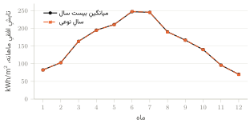
مثال 12.27 (دوازده ماه از دوازده سال) پرسش. از بیست سالِ ماهانهٔ منبعِ تأمینکننده (A-241)، سالِ نوعی بسازید و با میانگینِ بلندمدت و سالِ کمتابشِ دهکِ پایین مقایسه کنید.
پاسخ. خروجیِ بالا و شکل 12.16: سالِ نوعی 1911.9 در برابرِ میانگینِ 1910.5 kWh/m²؛ سالِ دهکِ پایین 1814.8.
تفسیر. سالِ نوعی یک سالِ شبیهِ P50 است. برای برآوردِ «سالِ بد» نمیتوان یک سالِ واقعیِ کمتابش را بهجای P90 گذاشت: آن سال ترکیبِ خاصی از ماهها دارد. روشِ درست، سری را با عدمِ قطعیتِ معلوم مقیاس میکند (بخش 12.4.10، فصلِ ۱۶). وارسی: جمعِ دوازده ماهِ جدول 1911.9 است (درست).
- سالِ نوعی برای چه مدلی لازم است و چرا یک عدد کافی نیست؟
- ماهِ نماینده چگونه انتخاب شد؟
- چرا سالِ واقعیِ کمتابش همان P90 نیست؟
12.4.13 تغییرپذیریِ مکانی: چند حسگر؟
ایده. میدانِ خورشیدیِ نیروگاهِ P حدودِ 28 ha ماژول دارد. ابرِ گذرا یک بلوک را زودتر از بلوکِ دیگر میپوشاند؛ پس تابشِ دو حسگرِ دور از هم در یک دقیقه یکی نیست، اما در یک روز تقریباً یکی است. شمار و جای حسگرها به کاربرد بستگی دارد: نسبتِ عملکردِ روزانهٔ هر بلوک، یا مطالعهٔ دقیقهایِ نوسان و بُرش. مدلِ آموزشیِ این درس ابرهای منجمد است: الگوی ابر بیتغییر با تندیِ 10 m/s روی میدان میرود و حسگرِ دوم همان سری را با تأخیرِ فاصله تقسیم بر تندی میبیند.
two sensors under moving clouds (broken day, frozen-cloud model):
distance m delay min r one-minute r ten-minute daily diff
0 0 1.000 1.000 +0.00 %
100 0 1.000 1.000 +0.00 %
300 0 1.000 1.000 +0.00 %
600 1 0.987 0.998 -0.00 %
1200 2 0.959 0.994 -0.00 %
2400 4 0.903 0.975 -0.00 %
this synthetic day's clouds last tens of minutes, so minute values
stay alike over a few hundred metres and part over kilometres;
real cloud edges are smaller and part sooner. Daily sums agree:
one sensor per block suffices for daily PR; minute studies
(ramps, clipping) need sensors next to the blocks studied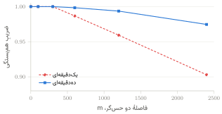
مثال 12.28 (دو حسگر زیرِ یک ابر) پرسش. در روزِ ابرِ پراکنده، همبستگیِ تابشِ یکدقیقهای و دهدقیقهایِ دو حسگر را برای فاصلههای صفر تا 2.4 km بیابید.
پاسخ. خروجیِ بالا و شکل 12.17: در 2.4 km همبستگیِ یکدقیقهای 0.90 و دهدقیقهای 0.98؛ جمعِ روزانه برابر.
تفسیر. ابرهای این روزِ ساختگی دهها دقیقه دوام دارند، پس جدایی در کیلومترها رخ میدهد؛ لبههای ابرِ واقعی کوچکترند و جدایی زودتر است. نتیجهٔ کلی پایدار است: برای روزانه یک حسگرِ خوب برای هر بلوک بس است؛ برای دقیقهای حسگر باید کنارِ همان بلوکی باشد که بررسی میشود. وارسی: تأخیرِ 2400/10 = 240 s یعنی چهار دقیقه (درست).
- مدلِ ابرهای منجمد را توضیح دهید.
- چرا جمعِ روزانهٔ دو حسگر برابر است اما مقدارهای دقیقهای نه؟
- برای مطالعهٔ بُرشِ دقیقهایِ یک اینورتر، حسگر را کجا میگذارید؟
12.4.14 نوسانهای سریع
ایده. نرخِ تغییر (اختلافِ دو مقدارِ پیاپی) در روزِ ابرِ پراکنده بزرگ است: لبهٔ ابر در چند ثانیه صدها وات بر مترمربع را جابهجا میکند. شبکه برای نیروگاههای بزرگ حدِ نرخِ تغییرِ توان میگذارد (فصلِ ۲۷) و باتری میتواند آن را نرم کند (فصلِ ۱۹)؛ هر دو به توزیعِ نوسانها نیاز دارند، و این توزیع فقط از دادهٔ پرتراکم (یکدقیقهای یا کوتاهتر) به دست میآید.
ramps of GHI on the broken-cloud day:
one-minute steps: largest 215 W/m2, 99th percentile 207 W/m2
ten-minute steps: largest 489 W/m2
one sensor's largest minute step times the plant: about 11 MW in a minute
the plant's 28 ha smooth this (clouds cover blocks one after
another): the plant ramp is smaller than one sensor's; grid
ramp limits and storage sizing need the plant's ramps (ch 19, 27)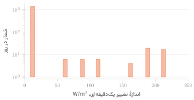
مثال 12.29 (یک لبهٔ ابر، یازده مگاوات) پرسش. بزرگترین تغییرِ یکدقیقهای و دهدقیقهای و چندکِ نودونه درصد را در روزِ ابرِ پراکنده بیابید و با ضریبِ تقریبیِ نیروگاه (پنجاه کیلووات بر واتبرمترمربع) به توان تبدیل کنید.
پاسخ. خروجیِ بالا: یکدقیقهای حدودِ 215 W/m²، یعنی حدودِ 11 MW در دقیقه اگر کلِ نیروگاه مانندِ یک حسگر رفتار کند؛ دهدقیقهای حدودِ 490 W/m².
تفسیر. نیروگاه مانندِ یک حسگر رفتار نمیکند: ابر بلوکها را یکییکی میپوشاند و نوسانِ کلِ نیروگاه نرمتر است (بخش 12.4.13). برآوردِ درستِ نوسانِ نیروگاه از چند حسگرِ پراکنده یا از توانِ اندازهگیریشدهٔ بلوکها پس از ساخت میآید. وارسی: \(215 \times 0.05 = 10.8\ \text{MW}\) (درست).
- چرا نوسانِ نیروگاه از نوسانِ یک حسگر کمتر است؟
- حدِ نرخِ تغییرِ شبکه به چه دادهای از منبع نیاز دارد؟
- چرا دادهٔ ساعتی برای مطالعهٔ نوسان کافی نیست؟
12.4.15 سنجشِ یک محصولِ دادهٔ منبع
ایده. پیش از خرید یا بهکارگیریِ یک سریِ ماهوارهای یا بازتحلیل، این پرسشها پاسخ میخواهند. پاسخِ هر کدام یک سند است، نه ادعا.
| پرسش | چرا مهم است | شاهدِ خواستهشده |
|---|---|---|
| تفکیکِ مکانی و زمانی | افق، سایهٔ کوه، تغییرِ سریع | برگهٔ مشخصهٔ محصول |
| دورهٔ پوشش و پیوستگی | تصحیحِ بلندمدت (بخش 12.4.8) | فهرستِ ماهوارهها و تغییرِ الگوریتم |
| اعتبارسنجی | سوگیری در اقلیمِ مشابه | گزارشِ مقایسه با ایستگاههای زمینی |
| گرد و غبار و برف | سوگیریِ فصلی (مثال 12.23) | منبعِ دادهٔ هواویز و برف |
| تفکیکِ پرتو و پخشیده | ردیاب و دوطرفه (مثال 12.8) | روشِ تفکیک و خطای DNI |
| نسخه و بازتولیدپذیری | بازبینیِ مستقل | شمارهٔ نسخه و تاریخِ استخراج |
| عدمِ قطعیتِ اعلامشده | بودجهٔ عدمِ قطعیت (بخش 12.4.10) | روش و دامنهٔ اعتبار |
قاعده. محصولی که اعتبارسنجیِ اقلیمِ مشابه، تاریخچهٔ نسخه یا روشِ تفکیکش روشن نیست، فقط برای غربالگری به کار میرود، نه برای گزارشِ وامپذیر.
- چرا تغییرِ الگوریتمِ محصول در میانهٔ دوره مهم است؟
- اعتبارسنجی در اقلیمِ مشابه چه چیزی را نشان میدهد؟
- محصولی بیتاریخچهٔ نسخه برای چه کاری به کار میرود؟
12.4.16 گزارشِ ماهانهٔ کیفیت
ایده. هر ماهِ کمپین با یک گزارشِ کیفیت بسته میشود: بازیابی، پرچمها، آزمونها، رخدادها، اقدامها و حکم. نمونهٔ زیر برای ماهِ مارسِ سالِ پرخطا (A-246) ساخته شده است، همان ماهی که خطای ساعت در آن آغاز شد.
monthly quality report, station GHI, Mar 2023 (A-246):
records 744, missing 0, recovery 100.0 %
spikes above 1.25 x clear-sky maximum: 2
clock test against clear sky: shift 1 h -> action: logger
time zone checked, data shifted back, flag 'time corrected'
ratio to the provider series: 0.981 (annual mean 0.995)
dome cleaning log: weekly; sawtooth soiling up to 2 % (flag
'soiling corrected', factor from the cleaning dates)
closure: not tested (GHI only in this record)
verdict: accepted after correction; time error opened as
an incident with its cause and the date it was fixedمثال 12.30 (مارس: ماهی که ساعتش جابهجا شد) پرسش. گزارشِ کیفیتِ ماهِ مارسِ سالِ پرخطا را بنویسید: بازیابی، جهش، آزمونِ ساعت، نسبت به منبعِ تأمینکننده، آلودگی و حکم.
پاسخ. خروجیِ بالا: بازیابیِ کامل، دو جهش، جابهجاییِ یکساعته، نسبتِ 0.981 به منبع (زیرِ میانگینِ سالانه به سببِ آلودگیِ گنبد)، پذیرش پس از اصلاح.
تفسیر. گزارش فقط عدد نیست: رخداد (خطای ساعت) با علت و تاریخِ رفع ثبت میشود تا ماههای بعد با همان قاعده بررسی شوند و بازبینِ مستقل ردِ تصمیم را ببیند. نسبتِ پایینتر از میانگین به منبع، پیش از اصلاحِ آلودگی، همان رانشِ کوچکی است که بخش 12.4.5 آموخت. وارسی: ۷۴۴ رکورد یعنی ۳۱ روز در ۲۴ ساعت (درست).
- شش بخشِ گزارشِ ماهانه را نام ببرید.
- چرا رخداد با علت و تاریخِ رفع ثبت میشود؟
- نسبتِ 0.981 به منبع پیش از اصلاحِ آلودگی چه معنایی دارد؟
12.4.17 یافتنِ روزهای صاف
ایده. روزهای صاف آزمایشگاهِ رایگانِ ایستگاهاند: در آنها شکلِ منحنی معلوم است و هر انحراف از آن نشانهٔ ابزار است، نه هوا. یک روز «صاف» شمرده میشود اگر میانگینِ شاخصِ آسمانِ صاف در ساعتهای خورشیدِ بالا نزدیکِ یک باشد و از ساعتی به ساعتِ بعد کم تغییر کند.
def clear_days(ghi, cz, days: int = 365, kc_min: float = 0.95,
var_max: float = 0.03, cz_min: float = 0.4):
"""Clear days: mean clear-sky index above kc_min and little
hour-to-hour change of the index while the sun is above about 24 deg."""
cs = ir.clear_sky_haurwitz(cz)
out = []
for d in range(days):
s = slice(d * 24, d * 24 + 24)
up = cz[s] > cz_min
if up.sum() < 4:
continue
kc = ghi[s][up] / cs[s][up]
if np.mean(kc) > kc_min and np.std(np.diff(kc)) < var_max:
out.append(d)
return outclear days in the station year (index > 0.95, steady, A-249):
Jan 9 Feb 10 Mar 15 Apr 12 May 12 Jun 12
Jul 18 Aug 13 Sep 12 Oct 16 Nov 8 Dec 7
144 clear days in the year
clear days check the clock (symmetry), the level and the
cosine response (morning against afternoon at the same sun
height), and the station's ratio to a clear-sky model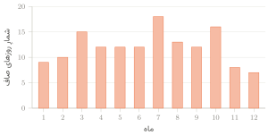
مثال 12.31 (صد و چهل و چهار روزِ صاف) پرسش. با معیارِ آموزشی (شاخصِ میانگینِ بالای 0.95 و تغییرِ ساعتیِ کم، خورشیدِ بالای حدودِ 24°)، روزهای صافِ سالِ ایستگاه را بشمارید.
پاسخ. خروجیِ بالا و شکل 12.19: ۱۴۴ روز، از ۷ روز در دسامبر تا ۱۸ روز در ژوئیه.
تفسیر. معیار با مدلِ آسمانِ صافِ ساده سنجیده شده است؛ با مدلی که کدورتِ جو را دارد، آستانهها عوض میشوند. کاربردها: آزمونِ ساعت (تقارن، بخش 12.4.1)، وارسیِ تراز و پاسخِ زاویهای (صبح و عصر در ارتفاعِ یکسانِ خورشید)، و مقایسهٔ حسگرها در بهترین شرایط. وارسی: شمارِ ماهها جمعاً ۱۴۴ است (درست).
- دو شرطِ «روزِ صاف» در این درس را بنویسید.
- چرا روزِ صاف آزمایشگاهِ ایستگاه است؟
- چرا آستانهها به مدلِ آسمانِ صاف وابستهاند؟
12.5 ت. آزمایشگاهِ منبع تا طراحی
بخشِ ت ابزارِ بخشهای الف تا پ را روی پرسشِ طراح به کار میبرد: انتخابِ منبعِ داده چقدر برآوردِ اولیهٔ انرژیِ خورشیدی را تغییر میدهد؟ سالی پر از خطا را چگونه پاک کنیم؟ و برنامهٔ اندازهگیری و کیفیتِ داده چه باید بگوید؟
12.5.1 مقایسهٔ دو منبع در برآوردِ انرژی
ایده. مثالِ کارشدهٔ این فصل (به خواستِ دستورِ کار): دو منبعِ تابش، یک مدلِ ساده و سریعِ انرژی، و مقایسه. مدل همان زنجیرهٔ فصلِ ۱۰ است با یک سادهسازی: به جای مدلِ تکدیودی، قاعدهٔ خطیِ توان با ضریبِ دمایی (فصلِ ۱۰ نشان داد این دو در چند درصد همخواناند). این مدل برای مقایسهٔ منبعها کافی است، چون خطاهایش در هر دو منبع یکسان است.
def pv_energy_mwh(ghi, dni, dhi) -> float:
"""Preliminary AC energy of the Plant P array (MWh): Hay-Davies plane of
array, IAM, Faiman cell temperature, linear power rule, 3 % DC losses,
the chapter 10 inverter curve and clipping, soiling 1.43 %."""
ci, cz, n = pvyear10.geometry(25.0, 180.0)
g0 = ir.g0n(n)
beam, sky, ground = pc.poa_hay_davies(ghi, dni, dhi, ci, cz, g0, 25.0)
poa = beam + sky + ground
eff = beam * pc.iam_ashrae(ci) + (sky + ground) * 0.95
h = datapack.load_hourly()
wind2 = pc.wind_at_height(h["ws_100m_ms"].to_numpy(float), 100, 2)
tc = pc.faiman(h["t_air_c"].to_numpy(float), poa, wind2)
p_dc = P_STC * eff / 1000 * (1 + GAMMA * (tc - 25)) * (1 - 0.03)
c0, c1, c2 = pe.fit_loss_coeffs(EFF_POINTS)
x = p_dc / 50e6 # inverter input in per unit; invert
root = np.sqrt((1 + c1) ** 2 - 4 * c2 * (c0 - x)) # the loss model
y = np.where(x > c0, (-(1 + c1) + root) / (2 * c2), 0.0)
ac = np.minimum(y * 50e6, 50e6 * 0.98)
return float(ac.sum() / 1e6 * (1 - 0.0143) * (1 - 0.0007))مثال 12.32 (دو منبعِ تابش، یک برآوردِ اولیه) پرسش. انرژیِ متناوبِ سالانهٔ آرایهٔ نیروگاهِ P را با (الف) ایستگاهِ زمینیِ ۲۰۲۳، (ب) منبعِ تأمینکنندهٔ همان سال با تفکیکِ خودش، (پ) ایستگاه با مدلِ تفکیکِ اورگیل–هالندز، و (ت) ایستگاهِ تصحیحشده به بلندمدت حساب کنید. داده: بستهٔ داده 1.1.0، S0؛ منبعِ تأمینکننده ساختگی (A-240)؛ مدلِ سادهشدهٔ فصلِ ۱۰.
پاسخ.
worked example: two irradiance sources, one preliminary PV estimate
source GHI kWh/m2 AC energy MWh
A ground station 2023 1947.2 111,402
B provider 2023 (its own split) 1937.8 110,765 (-0.6 %)
A with Orgill-Hollands split 1947.2 111,237 (-0.1 %)
A scaled to the long term (x 0.9859) 1919.7 110,082 (-1.2 %)
sensitivity: 1 % less irradiance -> 0.83 % less energy
(clipping and cell temperature absorb part of it)
the chapter 10 chain (single-diode model) gave 111,339 MWh for A
the year matters more than the source here: the 2023 ground
year is a sunny year, so the long-term step moves the answer
more than the choice between two good sourcesتفسیر. سه نتیجه: (۱) دو منبعِ خوب در این ساختگاه فقط 0.6 % اختلاف دارند؛ (۲) مدلِ تفکیک 0.1 %؛ (۳) اما سال 1.2 % در انرژی (از 1.4 % در تابش). پس برای این ساختگاه مهمترین گام، تصحیحِ بلندمدت است نه انتخابِ میانِ دو منبع. در ساختگاهِ دیگر (کوهستانی، ساحلی، با برف یا گرد و غبارِ شدید) اختلافِ دو منبع میتواند چند برابر باشد؛ این مثال روش را نشان میدهد، نه اینکه انتخابِ منبع همیشه بیاهمیت است. وارسی: مدلِ ساده برای منبعِ الف 111,402 MWh میدهد و زنجیرهٔ کاملِ فصلِ ۱۰ 111,339: 0.06 % اختلاف (درست، این سال).
- چرا مدلِ ساده برای مقایسهٔ منبعها کافی است؟
- سه عاملِ مثال را به ترتیبِ اثر بنویسید.
- در چه ساختگاهی انتخابِ منبع مهمتر میشود؟
12.5.2 پاکسازیِ یک سالِ پرخطا
ایده. همان روشهای بخشِ پ روی سالی کامل با پنج خطای کاشتهشده (A-246): آلودگیِ گنبد با تمیزکاریِ هفتگی (دندانهارهای تا دو درصد)، ساعتِ یک ساعت دیر از اولِ مارس تا آخرِ آوریل، ده روز شکاف در اوت، دو روزِ گیرکرده در اکتبر، و بیست جهش. هدف: نشان دادنِ ترتیبِ گامها و اثرِ هر گام بر جمعِ سال.
خطاهای سال با این تابع کاشته شدهاند (A-246):
def faulty_year(seed: int = 131):
"""The pack's GHI as a station would have logged it with five faults
(A-246): weekly-cleaned dome soiling (sawtooth to -2 %), a one-hour
clock error from 1 March to 30 April, a ten-day gap in August, two
stuck days in October, 20 spikes."""
p = sources.pack()
rng = np.random.default_rng(seed)
g = p["ghi"].copy()
day = np.arange(8760) // 24
faults = np.zeros(8760, int)
soil = 0.02 * ((day % 7) / 7) # cleaned every 7 days
g *= 1 - soil
clock = (day >= 59) & (day < 120)
g[clock] = np.roll(p["ghi"], 1)[clock] * (1 - soil[clock])
faults[clock] |= 1
gap = (day >= 220) & (day < 230)
g[gap] = np.nan
faults[gap] |= 2
stuck = (day >= 280) & (day < 282)
g[stuck] = g[np.flatnonzero(stuck)[0]]
faults[stuck] |= 4
spikes = rng.choice(np.flatnonzero(p["cz"] > 0.3), 20, replace=False)
g[spikes] = 1450.0
faults[spikes] |= 8
return g, faults, soilcleaning a station year with five faults (A-246):
true GHI 1,947.2 kWh/m2; as logged 1,863.1 (-4.3 %, gaps simply skipped)
step hours GHI kWh/m2 error
spikes (above 1.25 x clear-sky maximum) 20 1834.1 -5.8 %
stuck values flagged and removed 10 1834.1 -5.8 %
months found late, shifted back 1464 1834.1 -5.8 %
extremely rare values after the clock fix 0 1834.1 -5.8 %
gaps filled (short: k_t; long: provider) 250 1925.3 -1.1 %
dome soiling corrected from the cleaning log 8760 1941.9 -0.3 %
hourly RMSE after cleaning 21.3 W/m2; each step is logged with its flag
the order matters: spikes and stuck values first with tests
that ignore the sun's position (they would fool the clock
test), then the clock, then every test and fill that uses the
sun's position, the soiling lastمثال 12.33 (پنج خطا، شش گام) پرسش. سالِ پرخطا را گامبهگام پاک کنید و خطای جمعِ سال را پس از هر گام بنویسید.
پاسخ. جدولِ بالا: دادهٔ خام با رها کردنِ شکافها 4.3 % کمتر است؛ پس از همهٔ گامها 0.3 %.
تفسیر. (۱) ترتیب: آزمونهایی که به جای خورشید وابسته نیستند (جهش، گیرکرده) پیش از آزمونِ ساعت؛ سپس ساعت؛ سپس هر آزمون و پرکردنی که جای خورشید را به کار میبرد؛ و آلودگی در پایان. اگر ترتیب برعکس شود، ساعتهای دیرِ مارس و آوریل «بسیار نادر» پرچم میخورند و حذف میشوند (همان درسِ مثال 12.20). (۲) اثر: بزرگترین اثر از شکافهاست (رها کردنِ آنها حدودِ پنج درصد)، سپس آلودگیِ گنبد (حدودِ یک درصد)؛ خطای ساعت جمعِ سال را تغییر نمیدهد اما هر ساعتِ دو ماه را. (۳) باقیمانده: 0.3 % از ساعتهای گیرکردهای که در لبهها شناخته نشدند و از پرکردن با منبعِ دوم. وارسی: خطای جذرِ میانگینِ مربعاتِ ساعتی پس از پاکسازی 21 W/m²، کمتر از خطای منبعِ ماهوارهای (40)؛ دادهٔ زمینیِ پاکشده هنوز بهتر است (درست).
- چرا آزمونِ جهش با حدی مستقل از جای خورشید انجام شد؟
- کدام خطا جمعِ سال را تغییر نمیدهد اما برای مدلِ ساعتی مهم است؟
- باقیماندهٔ 0.3 % از کجا آمد؟
12.5.3 اثر بر برآوردِ اولیه
ایده. هر خطای منبع با ضریبی کمی کمتر از یک به انرژی میرسد: تابشِ کمتر دمای سلولِ کمتر و بازدهِ کمی بیشتر میدهد، و بُرش در اینورتر بخشی از تابشِ زیادی را بیاثر میکند. برای نیروگاهِ P با این مدل، هر یک درصد تابش حدودِ 0.83 % انرژی است (مثال 12.32)؛ پس خطاهای بخشِ پ با ضریبی کمی کمتر از یک به برآوردِ انرژی میرسند: سالِ پاکنشدهٔ مثال 12.33 حدودِ سه و نیم درصد انرژی را کم برآورد میکرد، و سالِ آفتابیِ تصحیحنشده 1.2 % زیاد. این دو عدد در کنارِ هم نشان میدهند چرا گزارشِ منبع پیش از هر محاسبهٔ انرژی میآید.
- چرا حساسیتِ انرژی به تابش کمی کمتر از یک است؟
- دو منبعِ خطای این فصل با بیشترین اثر بر برآوردِ انرژی را نام ببرید.
12.5.4 برنامهٔ اندازهگیری و کیفیتِ داده
ایده. همهٔ آنچه آمد در یک سند جمع میشود: برنامهٔ اندازهگیری و کیفیتِ داده (PLP-GEN-PRO-0001). این سند پیش از نصبِ ایستگاه نوشته میشود و پذیرشِ هر ماهِ داده را ممکن میکند. سرفصلها: هدف و کاربردِ داده؛ ابزارها، رده و شمار؛ جای نصب و افق؛ نمونهبرداری، ذخیره و همگامیِ ساعت؛ قراردادِ برچسبِ زمانی؛ آزمونهای کنترلِ کیفیت و پرچمها و ترتیبِ آنها؛ روشِ پرکردن؛ نگهداری و تمیزکاری با دفتر؛ واسنجی و مقایسه؛ معیارِ پذیرشِ ماهانه؛ خروجیها و گزارشها؛ مسئولیتها. نسخهٔ نیروگاهِ P در مثال 12.38 آمده است.
| موضوع | حداقلِ برنامه | شاهد |
|---|---|---|
| ابزارها | سه مؤلفه، دو سلولِ صفحه، جفتِ گرد و غبار | برگهٔ مشخصه، گواهیِ واسنجی |
| زمان | وقتِ استانداردِ +04:00، آغازِ بازه | دفترِ همگامیِ ساعت |
| کنترلِ کیفیت | شکاف، حدها، بستن، شب، گیرکرده، ساعت، نسبتِ هفتگی | پرچمِ هر نمونه |
| نگهداری | تمیزکاریِ روزانه در فصلِ خشک، بازدیدِ ماهانه | دفترِ ایستگاه |
| پذیرش | بازیابی، بستن، پایداریِ نسبت | گزارشِ ماهانهٔ کیفیت |
- چرا برنامه پیش از نصبِ ایستگاه نوشته میشود؟
- ده سرفصلِ برنامه را نام ببرید.
- معیارِ پذیرشِ ماهانه چه چیزی را ممکن میکند؟
12.6 ث. از منبع تا تصمیمِ شستوشو
بخشِ ث دو تمیزکاری را از هم جدا میکند و به هم وصل میکند: تمیزکاریِ حسگرِ تابش که درستیِ اندازهگیری را نگه میدارد، و تمیزکاریِ ماژولها که انرژی را (فصلِ ۱۰، D-014). اولی شاهدِ دومی را میسازد.
12.6.1 دو تمیزکاری، دو هدف
ایده. گرد و غبار روی گنبدِ تابشسنج و روی شیشهٔ ماژول هر دو مینشیند، اما پیامدشان متفاوت است. گنبدِ کثیف تابش را کم نشان میدهد: انرژیِ واقعی تغییر نمیکند، اما هر شاخصی که بر پایهٔ تابشِ اندازهگیریشده است (نسبتِ عملکرد، انرژیِ مورد انتظار، تشخیصِ کمکاری) خطا میکند. ماژولِ کثیف انرژی را کم میکند. اگر هر دو به یک اندازه کثیف شوند، نسبتِ عملکرد تغییر نمیکند و کمشدنِ انرژی پنهان میماند (E17):
\[ PR_\text{reported} = PR_\text{true}\,\frac{1 - L_\text{module}}{1 - L_\text{sensor}} . \tag{12.12}\]
def reported_pr(true_pr, module_loss, sensor_loss_d):
"""PR as reported: energy / (measured irradiation x rated power). A
dirty module lowers the energy; a dirty sensor lowers the measured
irradiation, so it raises the reported PR."""
return true_pr * (1 - module_loss) / (1 - sensor_loss_d)- پیامدِ گنبدِ کثیف و ماژولِ کثیف را مقایسه کنید.
- با معادلهٔ 12.12، اگر حسگر 3 % و ماژول 1 % کثیف باشند، نسبتِ عملکرد چه تغییری میکند؟
- چرا هر دو با هم کثیفشدن خطرناکترین حالت است؟
12.6.2 اثرِ کمّیِ نگهداریِ حسگر
ایده. با سالِ گرد و غبارِ فصلِ ۱۰ (A-195: رسوبِ تابستانِ خشکِ 0.30 % و زمستانِ 0.10 % در روز، شستوشو با باران) و ماژولهایی که فقط باران تمیزشان میکند، چهار برنامهٔ تمیزکاریِ حسگر مقایسه میشوند (A-247).
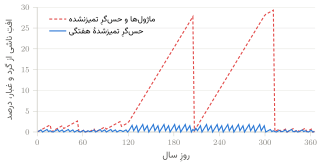
مثال 12.34 (نسبتِ عملکردی که خیلی خوب بود) پرسش. نسبتِ عملکردِ گزارششده را برای تمیزکاریِ روزانه، هفتگی، ماهانه و هیچوقتِ حسگر حساب کنید.
پاسخ.
افتِ حسگر با همان رسوب و بارانِ ماژولها ساخته میشود، با تمیزکاری در پایانِ هر دوره:
def sensor_loss(rate, rain, heavy, every: int | None):
"""Daily soiling loss of a sensor dome cleaned every `every` days
(None: never), with the same deposition and rain as the modules."""
loss = np.zeros(DAYS)
x = 0.0
for k in range(DAYS):
x += rate[k]
if heavy[k]:
x = 0.0
elif rain[k]:
x *= 0.5
if every and k % every == every - 1:
x = 0.0 # cleaned at day's end
loss[k] = x
return losswhat the performance ratio reports (A-247; modules never cleaned
except by rain, chapter 10 soiling year):
sensor cleaning mean sensor loss reported PR PR change
daily 0.00 % 0.7870 +0.00 %
weekly 0.56 % 0.7919 +0.63 %
monthly 2.37 % 0.8095 +2.86 %
never 8.47 % 0.8745 +11.12 %
true PR with dirty modules 0.7870; clean modules 0.8745
a sensor as dirty as the modules hides the module soiling:
the PR looks clean, the energy is lost and nobody cleans
daily sensor cleaning (or a heated, ventilated, cleaned pair)
keeps the reference honest; record every cleaning in the logتفسیر. با حسگری که هرگز تمیز نمیشود، نسبتِ عملکرد همان مقدارِ ماژولِ تمیز را نشان میدهد: کلِ زیانِ انرژیِ گرد و غبار (حدودِ 10 %؛ میانگینِ زمانیِ افت 8.5 % است، اما روزهای پرتابشِ تابستان افتِ بیشتری دارند) پنهان است و هیچکس شستوشو را آغاز نمیکند. تمیزکاریِ هفتگی حدودِ 0.6 % و ماهانه حدودِ 3 % سوگیری میسازد. پس تمیزکاریِ روزانهٔ حسگرِ مرجع در فصلِ خشک ارزانترین سرمایهگذاریِ نیروگاه است، به شرطِ ثبتِ زمانِ آن. وارسی: \(0.7870 \times 1.1112 = 0.8745\): نسبتِ حسگرِ کثیف همان نسبتِ ماژولِ تمیز است (درست).
- چرا با حسگرِ تمیزنشده زیانِ گرد و غبار پنهان میماند؟
- سوگیریِ تمیزکاریِ هفتگی و ماهانه را بنویسید.
- چرا ثبتِ زمانِ تمیزکاری لازم است؟
12.6.3 شاهدِ گرد و غبار: ایستگاهِ سنجش
ایده. ایستگاهِ سنجشِ گرد و غبار (فصلِ ۱۰، بخش 10.5.2) دو سلولِ مرجعِ همسان دارد: یکی روزانه تمیز میشود و دیگری مانندِ ماژولها کثیف میماند؛ نسبتِ جریانِ آن دو نسبتِ گرد و غبار است. این ایستگاه خودش ابزارِ اندازهگیری است و همهٔ قاعدههای بخشِ ب را دارد: واسنجیِ همزمانِ دو سلول (نسبتِ آن دو در حالتِ تمیز باید یک باشد)، ثبتِ تمیزکاری، و مهمتر از همه، تمیز ماندنِ سلولِ «تمیز».
soiling station: dirty cell / 'clean' cell (A-247):
'clean' cell cleaned daily: mean soiling loss 8.47 %
'clean' cell cleaned weekly: 7.98 % (underestimated)
soiling rate from rain-free spells: 0.156 %/day true, 0.150 %/day biased
the optimal cleaning interval of chapter 10 scales with
1 / sqrt(rate): biased by +2 % (cleaning too late)
the station's maintenance is part of the cleaning evidenceمثال 12.35 (سلولِ «تمیز» که هفتگی تمیز میشد) پرسش. اگر سلولِ «تمیز» به جای روزانه هفتگی تمیز شود، افتِ برآوردشده و نرخِ گرد و غبار چه میشوند و فاصلهٔ بهینهٔ شستوشو (فصلِ ۱۰) چقدر جابهجا میشود؟
پاسخ. خروجیِ بالا: افتِ میانگین 7.98 % به جای 8.47 %، نرخ 0.150 به جای 0.156 % در روز، و فاصلهٔ بهینه حدودِ 2 % دیرتر.
تفسیر. اثر کوچک است، چون سلولِ هفتگیتمیز بیشترِ وقت تقریباً تمیز است؛ اما جهتِ آن همیشه به سوی «کمتر شستوشو» است. اگر سلولِ «تمیز» ماهانه تمیز شود، اثر چند برابر میشود. وارسی: فاصلهٔ بهینه با \(1/\sqrt{r}\) تغییر میکند: \(\sqrt{0.156/0.150} = 1.02\) (درست).
- ایستگاهِ سنجشِ گرد و غبار چه چیزی را میسنجد؟
- نسبتِ دو سلول در حالتِ تمیز باید چند باشد و چرا وارسی میشود؟
- جهتِ اثرِ تمیز نماندنِ سلولِ «تمیز» چیست؟
12.6.4 ورودیهای تصمیمِ شستوشو
ایده. تصمیمِ شستوشوی فصلِ ۱۰ (D-014: قاعدهٔ ماشهای بر پایهٔ افتِ اندازهگیریشده) فقط به اندازهٔ ورودیهایش خوب است. این فصل کیفیتِ آن ورودیها را تعریف میکند.
inputs of the module-cleaning decision and their source:
input source quality
daily soiling loss soiling station cells clean,
calibrated
daily POA irradiation station (cleaned QC-flagged,
pyranometer) gaps filled
rain events station rain gauge time-aligned
energy and price plant meter, PPA chapter 21
cost per cleaning, water O&M contract (ch 52) quoted
without the first three, a cleaning trigger is a guess;
with them, D-014's trigger policy becomes a measured ruleپیوند به مدلِ انرژی. افتِ گرد و غبارِ اندازهگیریشده (و نه یک درصدِ فرضی) با برنامهٔ واقعیِ شستوشو در مدلِ تولید (فصلِ ۱۵) میآید؛ مدلی که شستوشوی وابسته به آب را فرض میکند، فقط وقتی معتبر است که شاهدِ ساختگاه (نرخِ گرد و غبار، باران، آبِ در دسترس، فصلِ ۱۴) آن را پشتیبانی کند. پس سه خروجیِ این فصل، سریِ افتِ گرد و غبار، سریِ تابشِ صفحهٔ کنترلشده و رویدادهای باران، ورودیِ مستقیمِ تصمیمِ شستوشو و مدلِ انرژیاند.
روشِ شستوشوی ماژول (آب، برس، ربات، مواد) با تأییدِ سازندهٔ ماژول و پوششِ شیشه و با رویهٔ ایمنیِ برقی و کار در میدان انتخاب میشود (فصلهای ۱۰ و ۵۲). این بخش فقط شاهدِ لازم برای تصمیم را تعریف میکند.
- سه خروجیِ این فصل که ورودیِ تصمیمِ شستوشو هستند را نام ببرید.
- چرا مدلِ شستوشوی وابسته به آب به شاهدِ ساختگاه نیاز دارد؟
- بدونِ ایستگاهِ گرد و غبار، قاعدهٔ ماشهای چه میشود؟
12.7 نیروگاهِ P: سه مثالِ یکپارچه
سه مثالِ زیر ابزارِ فصل را روی ایستگاهِ نیروگاهِ P میبرند: یک روزِ ایستگاه از عددِ خام تا تابشِ صفحهٔ وارسیشده، منبعِ سالانهٔ بلندمدت با عدمِ قطعیتش، و برنامهٔ اندازهگیری و کیفیتِ داده. همه بر پایهٔ بستهٔ دادهٔ 1.1.0، سناریوی S0، فرضهای A-240 تا A-249 و تصمیمِ D-016 هستند.
برنامه:
python -m companion.ch12.integratedمثال 12.36 (مقدماتی: یک روزِ ایستگاه) پرسش. روزِ ۲۳ ژوئن را ساعتبهساعت بررسی کنید: سه مؤلفه، ضریبِ صافی، شاخصِ آسمانِ صاف، پرچمها و تابشِ صفحهٔ 25°؛ جمعِ روز را با منبعِ تأمینکننده مقایسه کنید.
پاسخ.
one station day, 23 June 2023 (S0), hourly means:
hour GHI DNI DHI k_t GHI/clear flags POA W/m2
05 86 336 46 0.555 1.080 0 36
06 290 691 72 0.698 1.002 0 176
07 494 785 95 0.739 0.992 0 402
08 670 806 123 0.749 0.977 0 608
09 821 825 144 0.760 0.977 0 784
10 955 866 157 0.788 1.005 0 936
11 1038 890 171 0.809 1.029 0 1028
12 1030 882 170 0.802 1.020 0 1021
13 980 884 162 0.804 1.026 0 961
14 825 819 147 0.757 0.972 0 789
15 700 845 118 0.772 1.006 0 637
16 517 821 92 0.758 1.014 0 424
17 298 677 76 0.692 0.988 0 187
18 92 306 52 0.541 1.009 0 43
19 0 0 0 0.000 0.000 0 0
day: GHI 8.80, POA 8.03, provider GHI 8.94 kWh/m2
no flags; k_t near 0.75 all day and GHI/clear near 1: a clear
day, good for checking the clock and the sensor's levelتفسیر. روزی صاف با ضریبِ صافیِ نزدیکِ 0.75 و شاخصِ آسمانِ صافِ نزدیکِ یک: بهترین روز برای وارسیِ ساعت (تقارن)، ترازِ حسگر و مقایسهٔ حسگرهای صفحه. تابشِ صفحه در تابستان کمتر از افقی است (8.03 در برابرِ 8.80 kWh/m²)، چون خورشیدِ بلندِ تابستان صفحهٔ 25° رو به جنوب را مایلتر از سطحِ افقی میبیند؛ در زمستان برعکس. منبعِ تأمینکننده آن روز 1.6 % بیشتر میدهد: تصادفِ یک روز، نه سوگیری. وارسی: ساعتِ ۱۲: \(1030/(1316.6 \times 0.975) = 0.802\) با \(G_\text{0n}\)ِ اواخرِ ژوئن و کسینوسِ سرسوی میانگینِ آن ساعت (درست).
مثال 12.37 (میانی: منبعِ بلندمدت با عدمِ قطعیت) پرسش. تابشِ افقی و صفحهٔ بلندمدت (P50) و P90ِ بلندمدت و یکساله را با تصحیحِ بلندمدت و بودجهٔ عدمِ قطعیت حساب کنید؛ برای تابشِ صفحه عدمِ قطعیتِ مدلِ انتقال و تفکیک را بیفزایید (A-249).
پاسخ.
long-term annual resource of Plant P (D-016):
ground 2023 GHI 1,947.2; long-term factor 0.9859 (provider 20 years)
GHI P50 1,920 kWh/m2, u 2.8 %: P90 1,852
POA P50 2,120 kWh/m2 (25 deg), u 3.3 %
(adds transposition 1.5 % and the beam/diffuse split 1.0 %)
P90 long-term 2,030; P90 one year 2,005
year-to-year spread 2.7 %; the PV model and losses
(chapter 15) and their uncertainty (chapter 16) come on top
the energy of chapters 5 and 10 used the 2023 year as it is:
-1.4 % for the long termتفسیر. تابشِ صفحهٔ بلندمدت 2120 kWh/m² است و P90ِ یکسالهاش 2005، یعنی حدودِ پنج درصد کمتر. انرژیِ فصلهای ۵ و ۱۰ با سالِ ۲۰۲۳ «همانگونه که بود» حساب شد؛ پایهٔ تازه (D-016) همه را 1.4 % در تابش و حدودِ 1.2 % در انرژی پایین میآورد. وارسی: \(2150 \times 0.9859 = 2120\) (درست).
مثال 12.38 (یکپارچه: برنامهٔ اندازهگیری و کیفیتِ داده) پرسش. برنامهٔ اندازهگیری و کیفیتِ دادهٔ ایستگاهِ نیروگاهِ P را بنویسید: ابزارها، نمونهبرداری و زمان، کنترلِ کیفیت، نگهداری و واسنجی، پذیرشِ ماهانه و خروجیها؛ ورودیهای تصمیمِ شستوشو را جدا کنید.
پاسخ.
measurement and data-quality plan of the Plant P station (PLP-GEN-PRO-0001):
instruments: GHI and DHI (shadow ball) thermopile pyranometers,
DNI pyrheliometer on a sun tracker, two POA reference cells
(a redundant pair), rear-side cell, soiling pair,
air temperature, humidity, pressure, rain, wind at 2 and 10 m
sampling 1 s, stored one-minute mean/min/max; clock synchronised
daily and logged; all times in local standard time +04:00
quality control: missing, limits (physically possible, extremely
rare), closure, night offset, stuck, clock (clear days), weekly
ratio to the provider series; every flag kept with the value
maintenance: dome cleaning daily in the dry season (log with
time), levelling and desiccant monthly, tracker alignment
weekly; recalibration by an accredited laboratory or by
comparison on site at the interval the plan sets
acceptance of a month: recovery after QC at least the plan's
target (teaching: 95 %), closure within 8 % on 95 % of hours,
ratio to provider stable within 2 % of its annual mean
outputs: monthly QC report, filled hourly series with flags,
soiling-loss series and rain events for the cleaning decisionتفسیر. هر بندِ برنامه یک درسِ فصل است و هر کدام شاهدی میسازد که بازبین میتواند ببیند: دفترِ ایستگاه، پرچمِ هر نمونه، گواهیِ واسنجی، گزارشِ ماهانه. معیارِ پذیرشِ ماهانه (آموزشی) قراردادِ اندازهگیری را عملی میکند: ماهی که پذیرفته نشود، علتش و اقدامش در گزارش میآید. وارسی: همهٔ آزمونهای شکل 12.11 در برنامه آمدهاند (درست).
12.8 گردشِ کارِ ارزیابیِ منبعِ خورشیدی
- هدف و کاربرد دادهٔ منبع: برآوردِ تولید، آزمونِ عملکرد، کنترل، تصمیمِ شستوشو.
- پیشارزیابی با منبعهای ماهوارهای و بازتحلیل؛ نیمرخِ افق (بخش 12.2.9).
- برنامهٔ اندازهگیری پیش از نصب (بخش 12.5.4): ابزار و رده، جای نصب، زمان، کنترلِ کیفیت، نگهداری، پذیرش.
- نصب و راهاندازیِ ایستگاه: مقایسهٔ کنارِ همِ حسگرها، گواهیها، دفترِ ایستگاه (بخش 12.3.10).
- کمپینِ دستکم یکساله با گزارشِ ماهانهٔ کیفیت (بخش 12.4).
- مقایسه و تطبیقِ ساختگاهیِ منبعِ بلندمدت (بخش 12.4.6).
- تصحیحِ بلندمدت و بودجهٔ عدمِ قطعیت (بخش 12.4.8، بخش 12.4.10).
- انتقال به صفحه با مدلِ سنجیده (بخش 12.2.8) و تحویل به مدلِ تولید (فصلهای ۱۵ و ۱۶).
- ادامهٔ ایستگاه در بهرهبرداری: پایشِ عملکرد و شاهدِ شستوشو (بخشِ ث، فصلهای ۳۷ و ۵۲).
| رابط | مقدار یا پرسش | منبع |
|---|---|---|
| قراردادِ زمان | وقتِ استاندارد +04:00، آغازِ بازه | بخش 12.2.2 |
| حسگرِ نسبتِ عملکرد | تابشسنج یا سلولِ مرجع: در قرارداد | مثال 12.14 |
| تابشِ بلندمدت | P50 و P90، عدمِ قطعیت | مثال 12.37 |
| شاهدِ شستوشو | افتِ گرد و غبار، تابشِ صفحه، باران | بخش 12.6.4 |
| مدلِ تولید | سریِ ساعتیِ پرشده با پرچم | فصلهای ۱۵ و ۱۶ |
12.9 آزمایشگاههای پایتونِ این فصل
| آزمایشگاه | برنامه | آنچه میسازد |
|---|---|---|
| دادههای فصل | sources | سالِ ایستگاه، منبعِ تأمینکننده، بیست سالِ بلندمدت، روزهای یکدقیقهای |
| هندسه و مدلها | examples_a | زمان، ضریبِ صافی، بستن، آسمانِ صاف، تفکیک، انتقال، افق، فصلها |
| حسگرها | examples_b | خطای زاویهای، جابهجاییِ حرارتی، نمونهبرداری، سلولِ مرجع، واسنجی، حجمِ داده |
| پردازشِ داده | examples_c | پرچمها، ساعت، شکاف، رانش، مقایسهٔ منبعها، بلندمدت، عدمِ قطعیت |
| منبع تا طراحی | lab_d | دو منبع در برآوردِ انرژی، پاکسازیِ سالِ پرخطا |
| منبع تا شستوشو | lab_e | سوگیریِ نسبتِ عملکرد، ایستگاهِ گرد و غبار، ورودیهای تصمیم |
| نیروگاهِ P | integrated | یک روز، منبعِ بلندمدت، برنامهٔ اندازهگیری |
| مثالهای کوچک و پاسخنامه | worked، solutions | سطرهای E01 به بعد و پاسخهای عددی |
کتابخانهٔ همراه ماژولِ irradiance را میافزاید: تابشِ بیرون از جو، جرمِ هوا، ضریبِ صافی، آسمانِ صافِ هاورویتز، دو مدلِ تفکیک، انتقالِ همسانگرد، حدها و پرچمهای کنترلِ کیفیت، نسبتِ بستن، یافتنِ خطای ساعت، پرکردنِ شکافِ کوتاه، نسبتِ بلوکی برای رانش، سنجههای مقایسه، تصحیحِ بلندمدت و P90؛ با آزمونهایی که حدها، پیوستگیِ مدلها، بستنِ تفکیک و جابهجاییِ معلوم را میسنجند. تمرینِ پیشنهادی: در sources سوگیریِ فصلیِ منبعِ تأمینکننده را دو برابر کنید و اثرش را بر مثال 12.32 و تصحیحِ بلندمدت ببینید.
12.10 ساخت و تولیدِ صنعتی در این فصل
کاربرد ندارد برای ساختِ حسگر: نیروگاه حسگر نمیسازد. آنچه کاربرد دارد شاهدِ تأمینکننده است (بخش 12.3.10): برگهٔ مشخصه با ردهٔ ابزار، گواهیِ واسنجیِ هر سریال با ردیابیپذیری، دستورِ نصب و نگهداری و پیشینهٔ پایداری. بازرسیِ دریافت و مقایسهٔ کنارِ هم پیش از نصب، و تأییدِ آزمایشگاهِ واسنجی، زیرِ چارچوبِ ممیزیِ تأمینکننده در فصلِ ۴۰ میآیند؛ ساختِ تابلو و ثبتکنندهٔ ابزار دقیق در فصلِ ۴۸.
12.11 جعبهٔ استاندارد و انطباق
مرجعهای زیر فقط با عنوان و ویرایشِ وارسیشده آمدهاند (دفترِ استانداردها با تاریخِ وارسی) و هیچ بند یا مقداری از آنها نقل نشده است. پذیرشِ ملیِ هیچکدام در ایران، افغانستان و تاجیکستان وارسی نشده است (فصلهای ۵۵ تا ۵۷).
- ردهبندیِ تابشسنجها: ISO 9060:2018.
- پایشِ عملکردِ سامانهٔ فتوولتائیک (حسگرها، نگهداری، ردههای پایش): IEC 61724-1:2021.
- طیفِ مرجع و اصولِ اندازهگیریِ ابزارهای فتوولتائیک: IEC 60904-3:2019 (فصلِ ۱۰).
- حدهای کنترلِ کیفیت در این فصل شکلِ آموزشیِ خانوادههای آزمونِ شبکههای اندازهگیریِ تابشاند؛ کمپینِ واقعی سندِ جاریِ شبکه یا استانداردِ مرجعِ خود را به کار میبرد.
- مرز: واسنجی در آزمایشگاهِ دارای صلاحیت؛ روشِ گزارشِ منبع که وامدهنده میپذیرد با مهندسِ مستقل (فصلِ ۱۶)؛ کار در ارتفاع و برق برای نگهداریِ ایستگاه (فصلِ ۳۲).
12.12 تحویلدادنیِ نیروگاهِ P
این فصل اینها را به پروندهٔ نیروگاهِ P میافزاید:
- PLP-GEN-REP-0004، بازنگریِ A: گزارشِ منبعِ خورشیدی: سالِ ایستگاه، مقایسه با منبعِ تأمینکننده، تصحیحِ بلندمدت، P50 و P90 (مثال 12.23، مثال 12.24، مثال 12.37).
- PLP-GEN-PRO-0001، بازنگریِ A: برنامهٔ اندازهگیری و کیفیتِ داده (مثال 12.38، جدول 12.2)؛ برنامه است، نه دستورِ کار.
- PLP-GEN-CAL-0004، بازنگریِ A: تصحیحِ بلندمدت و بودجهٔ عدمِ قطعیتِ منبع (مثال 12.25).
- کتابخانهٔ همراه: ماژولِ
irradianceبا آزمونها و برنامههایcompanion/ch12. - فرضها: A-240 سریِ ساختگیِ منبعِ تأمینکننده (هموارسازی، سوگیریِ فصلی، پراکندگی، بذرِ ۱۲۱)؛ A-241 سریِ بیستسالهٔ ساختگی (سالِ ۲۰۲۳ با انحرافِ +1.4 % از میانگینِ بیستساله، بذرِ ۱۲۲)؛ A-242 روزهای یکدقیقهای و خطاهای کاشتهشده (بذرِ ۱۲۳)؛ A-243 نیمرخِ افق؛ A-244 مدلِ آسمانِ صافِ هاورویتز و ثابتهای آموزشیِ حدهای کنترلِ کیفیت؛ A-245 رانشِ آموزشیِ حسگر و بودجهٔ عدمِ قطعیت؛ A-246 خطاهای سالِ پرخطا (بذرِ ۱۳۱)؛ A-247 برنامههای تمیزکاریِ حسگر؛ A-248 خطاهای حسگر (زاویهای، حرارتی، ضریبِ واسنجی)؛ A-249 عدمِ قطعیتِ انتقال و تفکیک برای تابشِ صفحه. همه فرضی یا ساختگی؛ در انتشارِ بعدیِ بستهٔ داده به دفترِ فرضها افزوده میشوند.
- مجهولها: U-043 کمپینِ واقعیِ دستکم یکسالهٔ ایستگاهِ ساختگاه (بستهٔ داده ساختگی است)؛ U-044 انتخاب، نسخه و پایداریِ منبعِ بلندمدت و روشِ تطبیقِ ساختگاهی؛ U-045 برداشتِ واقعیِ افق در جای ایستگاه و بلوکها؛ U-046 ردهٔ ابزار، گواهیهای واسنجی و برنامهٔ نگهداریِ تأییدشدهٔ ایستگاهِ واقعی.
- تصمیم D-016: پایهٔ منبعِ خورشیدی تا پایانِ کمپینِ ساختگاه: سالِ ایستگاهِ بستهٔ داده پس از کنترلِ کیفیت، با ضریبِ بلندمدتِ 0.9859 از منبعِ تأمینکنندهٔ بیستساله؛ ترتیبِ آزمونهای شکل 12.11؛ P90 با جذرِ مجموعِ مربعاتِ اجزای مستقل؛ نسبتِ عملکردِ قرارداد با سلولِ مرجع یا تابشسنج بهصراحت تعیین شود.
- دفترِ سندها (جدول 2.18): سه ردیفِ بالا با وضعیتِ «پیشنویس، آموزشی».
12.13 جمعبندی
- ارزیابیِ منبع چهار پرسش دارد: درستیِ اندازهگیری، همخوانی با منبعِ دیگر، نماینده بودنِ سال، و عدمِ قطعیت؛ هر کدام سند میخواهد (بخش 12.2.1).
- زمان: قراردادِ برچسب (منطقه، آغاز یا پایانِ بازه، میانگین یا نمونه) سالانه پنهان و ساعتی آشکار است (مثال 12.1).
- ضریبِ صافی آبوهوا را از هندسه جدا میکند؛ \(K_T\)ِ ساختگاه از 0.47 در دسامبر تا 0.73 در ژوئن است (مثال 12.2).
- مدلها: آسمانِ صاف سقف و مرجعِ شکل است؛ تفکیک و انتقال هر کدام یک عدمِ قطعیتاند؛ هِی–دیویس صفحهٔ 25° را 2 % بیشتر از آسمانِ همسانگرد میبیند (مثال 12.4، مثال 12.5).
- حسگرها: تابشسنج انرژیِ خورشید و سلولِ مرجع تابشِ مؤثر برای ماژول را میسنجد؛ نسبتِ عملکرد باید بگوید با کدام (مثال 12.14)؛ رده بی نگهداری بیارزش است.
- کنترلِ کیفیت: هیچ عددی حذف نمیشود؛ هر نمونه پرچم دارد؛ ترتیب مهم است: آزمونهای مستقل از جای خورشید پیش از اصلاحِ ساعت (مثال 12.20، مثال 12.33).
- رانش پرچم نمیزند و فقط با مرجعِ پایدار و آزمونِ روند دیده میشود (مثال 12.22).
- منبعِ ماهوارهای بلند و بیشکاف اما سوگیر است؛ سالِ ۲۰۲۳ آفتابی بود و تصحیحِ بلندمدت تابش را 1.4 % و انرژی را 1.2 % کم میکند؛ P90ِ یکسالهٔ تابشِ صفحه حدودِ پنج درصد زیرِ P50 است (مثال 12.24، مثال 12.37).
- مثالِ کارشده: دو منبعِ خوب 0.6 % و انتخابِ سال 1.2 % انرژی را جابهجا میکنند؛ هر یک درصد تابش 0.83 % انرژی است (مثال 12.32).
- دو تمیزکاری: حسگرِ کثیف زیانِ ماژولِ کثیف را پنهان میکند؛ ایستگاهِ گرد و غبار شاهدِ تصمیمِ شستوشوست به شرطِ تمیز ماندنِ سلولِ «تمیز» (مثال 12.34، مثال 12.35).
12.13.1 واژگانِ فصلِ ۱۲
| فارسی | انگلیسی | یادداشت |
|---|---|---|
| ارزیابیِ منبع | resource assessment | |
| تابشِ افقیِ کل | global horizontal irradiance | GHI، \(G_\text{h}\) |
| تابشِ مستقیمِ عمودی | direct normal irradiance | DNI، \(G_\text{b,n}\) |
| تابشِ پخشیدهٔ افقی | diffuse horizontal irradiance | DHI، \(G_\text{d}\) |
| تابشِ بیرون از جو | extraterrestrial irradiance | \(G_\text{0n}\) |
| ثابتِ خورشیدی | solar constant | \(G_\text{sc}\) |
| ضریبِ صافی | clearness index | \(k_t\)، \(K_T\) |
| سهمِ پخشیده | diffuse fraction | \(k_d\) |
| شاخصِ آسمانِ صاف | clear-sky index | \(k_c\) |
| جرمِ هوا | air mass | \(AM\) |
| زمانِ خورشیدی، معادلهٔ زمان | solar time, equation of time | \(t_\text{s}\)، \(E_t\) |
| برچسبِ زمانی | timestamp | |
| مدلِ آسمانِ صاف | clear-sky model | |
| مدلِ تفکیک | decomposition model | |
| مدلِ انتقال، آسمانِ همسانگرد | transposition model, isotropic sky | |
| دورِ خورشید | circumsolar | \(A_i\) |
| آزمونِ بستن | closure test | |
| نیمرخِ افق | horizon profile | |
| تابشسنجِ نیمکرهای | pyranometer | |
| تابشسنجِ مستقیم | pyrheliometer | |
| ترموپیل | thermopile | |
| سلولِ مرجع | reference cell | |
| گوی سایه، حلقهٔ سایه | shading ball, shadow ring | |
| تابشسنجِ نوارِ چرخان | rotating shadowband irradiometer | |
| خطای زاویهای (کسینوسی) | directional (cosine) error | |
| جابهجاییِ حرارتی | thermal offset | |
| ضریبِ حساسیت | sensitivity | \(\mu\text{V}\) بر \(\text{W/m}^2\) |
| گواهیِ واسنجی | calibration certificate | |
| ردیابیپذیری | traceability | |
| ثبتکننده | data logger | |
| فراداده | metadata | |
| دفترِ ایستگاه | station log | |
| پرچمِ کیفیت | quality flag | |
| ممکنِ فیزیکی، بسیار نادر | physically possible, extremely rare | |
| مقدارِ گیرکرده | stuck value | |
| همبستگیِ متقابل | cross-correlation | |
| پرکردنِ شکاف | gap filling | |
| رانشِ حسگر | sensor drift | |
| منبعِ ماهوارهای | satellite-derived data | |
| بازتحلیل | reanalysis | |
| سالِ نوعی | typical year | |
| سوگیریِ میانگین | mean bias error | MBE |
| خطای جذرِ میانگینِ مربعات | root-mean-square error | RMSE |
| تطبیقِ ساختگاهی | site adaptation | |
| تصحیحِ بلندمدت | long-term correction | |
| تغییرپذیریِ سالبهسال | interannual variability | |
| عدمِ قطعیتِ ترکیبی | combined uncertainty | \(u_\text{c}\) |
| احتمالِ فزونیِ ۹۰ درصد | P90 | |
| ایستگاهِ سنجشِ گرد و غبار | soiling station | |
| بازیابیِ داده | data recovery |
12.14 ارزیابیِ پلکانی
معیارِ تسلطِ این فصل: خواننده میتواند هندسهٔ خورشید و مؤلفههای تابش را به کار ببرد، تابش را به صفحهٔ ماژول ببرد، ایستگاهِ اندازهگیری را طراحی و نگهداری کند، دادهٔ خام را با پرچم و ترتیبِ درست پاک کند، منبعِ دیگر را مقایسه و تصحیحِ بلندمدت و P90 را حساب کند، و شاهدِ لازم برای تصمیمِ شستوشو را از دادهٔ منبع جدا کند. پاسخها و معیارها در بخش 12.15 آمدهاند و پاسخهای عددی را برنامهٔ حلِ فصل ساخته است.
12.14.1 پلهٔ ۱: مبانی
تمرین 12.1 میلِ خورشید را در ۲۱ ژوئن و ۲۱ دسامبر بیابید.
تمرین 12.2 ظهرِ خورشیدیِ ۱۱ فوریه را به وقتِ استانداردِ نیروگاهِ P بیابید.
تمرین 12.3 \(G_\text{0n}\) را در روزهای ۳ و ۱۸۵ حساب کنید.
تمرین 12.4 \(H_0\) را در ۲۱ ژوئن در عرضِ 34° با معادلهٔ 12.3 حساب کنید.
تمرین 12.5 ضریبِ صافیِ 600 W/m² در سرسوی 50° در روزِ ۸۰ چیست؟
تمرین 12.6 جرمِ هوا را در سرسوی 48.2° بیابید.
تمرین 12.7 تابشِ آسمانِ صافِ هاورویتز را در سرسوی 0، 45 و 70° حساب کنید.
تمرین 12.8 DNI را از GHIِ 700، DHIِ 200 W/m² و سرسوی 35° بیابید.
تمرین 12.9 DHI را از GHIِ 650، DNIِ 600 W/m² و سرسوی 40° بیابید.
تمرین 12.10 سهمِ پخشیدهٔ ارْبز را در \(k_t\)ِ 0.2، 0.5 و 0.85 بیابید.
تمرین 12.11 همان را با مدلِ اورگیل–هالندز حساب و مقایسه کنید.
تمرین 12.12 تابشِ صفحهٔ همسانگرد را برای GHIِ 800، DNIِ 700، DHIِ 150، کسینوسِ زاویهٔ تابشِ 0.95، شیبِ 25° و آلبدوی 0.2 حساب کنید.
تمرین 12.13 پخشیدهٔ آسمانِ هِی–دیویس را با \(A_i = 0.5\)، \(R_\text{b} = 1.2\) و DHIِ 150 در شیبِ 25° حساب و با همسانگرد مقایسه کنید.
تمرین 12.14 طولِ روز را در اعتدال و ۲۱ دسامبر در عرضِ 34° بیابید.
تمرین 12.15 ارتفاعِ خورشید را در ظهرِ ۲۱ ژوئن در عرضِ 34° بیابید.
تمرین 12.16 جابهجاییِ حرارتیِ −4 W/m² در روزی ابری با میانگینِ 150 W/m² چند درصد خطاست؟
تمرین 12.17 ولتاژِ 6.12 mV با ضریبِ 8.50 μV/(W/m²) چه تابشی است؟
تمرین 12.18 حسگر 3 % و ماژول 1 % کثیفاند. نسبتِ عملکردِ گزارششده چه ضریبی میگیرد؟
تمرین 12.19 حدِ «ممکنِ فیزیکیِ» GHI را در \(\mu_0 = 0.5\) با معادلهٔ 12.9 حساب کنید.
تمرین 12.20 حدِ «بسیار نادر» را در همان شرایط حساب کنید.
تمرین 12.21 عدمِ قطعیتِ ترکیبیِ 2، 1، 1.5 و 0.6 % را حساب کنید.
تمرین 12.22 P90 با \(u_\text{c} = 4\ \%\) چند درصدِ P50 است؟
تمرین 12.23 عدمِ قطعیتِ میانگینِ ده سال با انحرافِ معیارِ سالانهٔ 2.7 % چیست؟
تمرین 12.24 ایستگاه 2050، منبع در همان سال 2010 و منبعِ بلندمدت 1980 kWh/m². تابشِ بلندمدتِ ساختگاه چیست؟
تمرین 12.25 اگر برچسبهای UTC بهجای +04:00 خوانده شوند، ظهرِ خورشیدی کجا دیده میشود؟
تمرین 12.26 حجمِ سالانهٔ دادهٔ بیست کانال با نمونهبرداریِ ثانیهای و چهار بایت چیست؟
تمرین 12.27 سه مؤلفهٔ تابش و رابطهٔ بستن را با یک شکلِ ساده توضیح دهید.
تمرین 12.28 سه پرسشِ برچسبِ زمانی را برای دادهٔ دکلِ بادِ بستهٔ داده پاسخ دهید.
تمرین 12.29 تفاوتِ تابشسنج و سلولِ مرجع را در سه ویژگی بنویسید.
تمرین 12.30 دو خانوادهٔ حدِ کنترلِ کیفیت را تعریف کنید و برای هر کدام اقدام را بنویسید.
تمرین 12.31 \(H_0\) را در ۲۱ دسامبر در عرضِ 34° حساب و با ۲۱ ژوئن مقایسه کنید.
تمرین 12.32 زاویهٔ ساعتِ غروب و زمانِ خورشیدیِ طلوع را در ۲۱ ژوئن در عرضِ 34° بیابید.
تمرین 12.33 ساعتِ 13:00ِ محلی (+04:00) به UTC چند است؟ 08:00Z به وقتِ محلی؟
تمرین 12.34 حسگر 1 % و ماژول 3 % کثیفاند. نسبتِ عملکردِ گزارششده چه ضریبی میگیرد؟
تمرین 12.35 سهمِ تابشِ افقیِ سال را که با جرمِ هوای کمتر از ۲ میرسد از بخش 12.2.13 بنویسید.
تمرین 12.36 بخشِ سامانمندِ عدمِ قطعیتِ تابشسنج را از سه جزءِ مثال 12.18 حساب کنید.
تمرین 12.37 بخشِ تصادفیِ 1.2 % در ۱۸۲ روزِ مستقل چه سهمی در جمعِ سال دارد؟
تمرین 12.38 تأخیرِ دیدنِ یک ابر میانِ دو حسگرِ 2.4 km دور از هم با تندیِ ابرِ 10 m/s چیست؟
تمرین 12.39 تابشِ سالانهٔ صفحهٔ شرقی–غربیِ 10° را با جنوبیِ 25° مقایسه کنید.
تمرین 12.40 قلهٔ ساعتیِ میانگینِ دو جهتگیری را بنویسید.
تمرین 12.41 شمارِ روزهای صافِ ژوئیه و دسامبر را بنویسید.
تمرین 12.42 در گزارشِ ماهانهٔ مارس، نسبت به منبعِ تأمینکننده چند بود؟
تمرین 12.43 هفت پرسشِ سنجشِ یک محصولِ داده را نام ببرید.
تمرین 12.44 در تابعِ fill_short_gaps، شکافی که از آغازِ سری شروع شود چه میشود؟
12.14.2 پلهٔ ۲: تحلیل
تمرین 12.45 اثرِ سالانه و ساعتهای خورشیدِ پایینِ خطای زاویهایِ آموزشی را از مثال 12.13 بنویسید و تفسیر کنید.
تمرین 12.46 اثرِ سالانهٔ جابهجاییِ حرارتی را وارسی کنید.
تمرین 12.47 نسبتِ عملکردِ سالِ فصلِ ۱۰ را با دو حسگر بنویسید و تفاوت را توضیح دهید.
تمرین 12.48 سوگیری و خطای ساعتیِ منبعِ تأمینکننده را برای GHI بنویسید.
تمرین 12.49 همان را برای DNI بنویسید و بگویید چرا بزرگتر است.
تمرین 12.50 تابشِ بلندمدتِ ساختگاه را با روشِ نسبت حساب کنید.
تمرین 12.51 نتیجهٔ رگرسیونِ ماهانه را بنویسید و با روشِ نسبت مقایسه کنید.
تمرین 12.52 P50 و دو P90ِ تابشِ افقی را بنویسید.
تمرین 12.53 P50 و دو P90ِ تابشِ صفحه را بنویسید؛ چرا عدمِ قطعیتِ آن بیشتر است؟
تمرین 12.54 اختلافِ دو مدلِ آسمان را در شیبِ 40° بنویسید.
تمرین 12.55 شیبِ بهینه با مدلِ هِی–دیویس چیست و نیروگاهِ P چقدر از بیشینه کم دارد؟
تمرین 12.56 اثرِ افقِ دور را بر تابشِ صفحه بنویسید.
تمرین 12.57 خطای پرکردنِ شکافهای دوساعته را بنویسید.
تمرین 12.58 رانشِ 0.06 % در هفته چند خطای معیار است؟
تمرین 12.59 اثرِ نمونهبرداریِ دهدقیقهای را در روزِ ابرِ پراکنده بنویسید.
تمرین 12.60 حساسیتِ انرژی به تابش در نیروگاهِ P چیست و چرا کمتر از یک است؟
تمرین 12.61 سهمِ تابشِ پیش از ظهر را در دادهٔ درست و دیر بنویسید.
تمرین 12.62 \(K_T\)ِ ژوئن و دسامبر را بنویسید و تفسیر کنید.
تمرین 12.63 نسبتِ تابشِ سال به آسمانِ صاف را بنویسید.
تمرین 12.64 اختلافِ دو مدلِ تفکیک را در DNI و تابشِ صفحه بنویسید.
تمرین 12.65 ضریبِ صافیِ ساعتِ ۱۲ روزِ ۲۳ ژوئن را وارسی کنید.
تمرین 12.66 چرا تابشِ صفحه در روزِ تابستانیِ مثال 12.36 کمتر از افقی است؟
تمرین 12.67 چرا «ناممکن»های عصرِ مثال 12.20 پس از اصلاحِ ساعت ناپدید شدند؟
تمرین 12.68 چرا برآوردِ جابهجاییِ ساعت در مثال 12.20 پنجاه دقیقه شد نه شصت؟
تمرین 12.69 چرا همبستگیِ متقابل بدونِ کمکردنِ میانگین حساب میشود؟
تمرین 12.70 چرا درونیابیِ ضریبِ صافی بهتر از درونیابیِ خودِ تابش است؟
تمرین 12.71 فرضِ پنهانِ تصحیحِ بلندمدت به روشِ نسبت چیست و کِی میشکند؟
تمرین 12.72 چرا مقایسهٔ بسته با ارْبز آزمونِ مدل نیست؟
تمرین 12.73 تقویتِ لبهٔ ابر چیست و چه پیامدی برای حدهای کنترلِ کیفیت دارد؟
تمرین 12.74 چرا ردهبندیِ بالای ابزار بی نگهداری بیارزش است؟
تمرین 12.75 سودِ سالانه و ماهانهٔ ردیابِ تکمحوره را از مثال 12.8 بنویسید و دلیلِ منفی بودنِ دسامبر را توضیح دهید.
تمرین 12.76 سودِ دوطرفه را با آلبدوی 0.25 در مدلِ آموزشی حساب کنید.
تمرین 12.77 ضریبِ صافیِ سالانهٔ ساختگاه را حساب کنید.
تمرین 12.78 سالِ نوعی و سالِ دهکِ پایین را با میانگینِ بلندمدت مقایسه کنید.
تمرین 12.79 چرا همبستگیِ ساعتیِ پروندهٔ صادراتی با ایستگاه با خطای چهارساعته فرو میریزد اما نسبتِ عملکردِ دوره نه؟
تمرین 12.80 نسبتِ هفتگی 1.5 % نوسان دارد. برای یافتنِ پلهٔ 2 % در سطحِ دو انحرافِ معیار، میانگینِ چند هفته لازم است؟
تمرین 12.81 انحرافِ معیارِ مجموعِ خورشید و باد را با همبستگیِ −0.111 و صفر حساب و مقایسه کنید.
تمرین 12.82 اثرِ روزِ غبارآلود را بر GHI، DNI و تابشِ صفحه بنویسید و بگویید چرا رکوردِ فقط GHI گمراه میکند.
تمرین 12.83 بزرگترین تغییرِ یکدقیقهای را به توانِ نیروگاه تبدیل کنید و بگویید چرا نیروگاه کمتر نوسان دارد.
تمرین 12.84 در faulty_clear_day خطاها به چه ترتیبی کاشته شدهاند و ترتیب چه اثری بر آزمونها دارد؟
تمرین 12.85 در faulty_year، چرا مقدارِ گیرکرده همان مقدارِ ساعتِ نخستِ دوره است و چه اثری دارد؟
تمرین 12.86 در sensor_loss، تمیزکاری در پایانِ روز انجام میشود. اگر در آغازِ روز بود، نتیجه چه تغییری میکرد؟
تمرین 12.87 سریِ منبعِ تأمینکننده سوگیریِ فصلیِ کسینوسی دارد. بیشینه و کمینهٔ آن چند درصد است؟
تمرین 12.88 چرا معیارِ روزِ صاف به مدلِ آسمانِ صاف وابسته است؟
تمرین 12.89 چرا میزِ شرقی–غربی در هر هکتار ماژولِ بیشتری دارد؟
12.14.3 پلهٔ ۳: کاربرد
تمرین 12.90 انرژیِ سالانهٔ آرایه را با ایستگاه و با منبعِ تأمینکننده بنویسید.
تمرین 12.91 انرژیِ بلندمدت چیست و ارزشِ اختلافش با سالِ ۲۰۲۳ با 50 u/MWh چقدر است؟
تمرین 12.92 خطای سالِ پرخطا را پیش و پس از پاکسازی بنویسید.
تمرین 12.93 سوگیریِ نسبتِ عملکرد را برای چهار برنامهٔ تمیزکاریِ حسگر بنویسید.
تمرین 12.94 اثرِ تمیزکاریِ هفتگیِ سلولِ «تمیزِ» ایستگاهِ گرد و غبار را بنویسید.
تمرین 12.95 رانشِ −1.5 %ِ اصلاحنشده چه خطایی در برآوردِ انرژی میسازد؟
تمرین 12.96 ماهی با دوازده ساعت شکاف از ۷۴۴ ساعت چه بازیابیای دارد؟
تمرین 12.97 ضریبِ حساسیت در دو سال 1.1 % کم شده است. با فرضِ خطی، دادهٔ میانِ دوره را چگونه اصلاح میکنید؟
تمرین 12.98 تمیزکاریِ روزانهٔ دهدقیقهای چند ساعتِ کار در سال است؟ ارزشش را با مثال 12.34 بسنجید.
تمرین 12.99 اگر منبعِ تأمینکننده همهجا دو درصد بیشتر بدهد، انرژی چقدر تغییر میکند؟
تمرین 12.100 در دادهٔ یک ماه، روزهای صاف همه یک افتِ صبحگاهی در ساعتِ ۶:۳۰ دارند. علت و اقدام را بنویسید.
تمرین 12.101 نسبتِ دو سلولِ مرجعِ صفحه در یک هفته از 1.00 به 0.97 رسیده است. چه میکنید؟
تمرین 12.102 نسبتِ بستن در ماههای اخیر از 1.00 به 1.04 رسیده، بیشتر در روزهای ابری. کدام ابزار مشکوک است؟
تمرین 12.103 پس از قطعِ برق، ثبتکننده با ساعتِ کارخانه راه افتاده است. چگونه دورهٔ آسیبدیده را مییابید و اصلاح میکنید؟
تمرین 12.104 پیمانکار نسبتِ عملکردِ 0.89 گزارش کرده و مالک 0.86. چه پرسشی اول میپرسید؟
تمرین 12.105 فهرستِ بازرسیِ دریافتِ حسگرها را بنویسید.
تمرین 12.106 برای ایستگاهی در ساختگاهِ شبنمخیز، چه تجهیز و رویهای اضافه میکنید؟
تمرین 12.107 جای نصبِ حسگرِ صفحه در نیروگاهِ P را انتخاب و دلیلهایش را بنویسید.
تمرین 12.108 منبعِ تأمینکننده الگوریتمش را در سالِ ۲۰۱۸ عوض کرده است. تصحیحِ بلندمدت را چگونه انجام میدهید؟
تمرین 12.109 گزارشِ ماهانهٔ کیفیتِ داده را با سرفصلها بنویسید.
تمرین 12.110 برای مدیرِ پروژه توضیح دهید چرا P90ِ یکساله از بلندمدت کمتر است.
تمرین 12.111 وامدهنده میپرسد «چرا ایستگاهِ گران؟». با بودجهٔ عدمِ قطعیت پاسخ دهید.
تمرین 12.112 رابطهٔ این فصل با تصمیمِ شستوشوی فصلِ ۱۰ را در یک بند توضیح دهید.
تمرین 12.113 برای نیروگاهی با ردیاب، کدام بخشهای این فصل مهمتر میشوند؟
تمرین 12.114 دادهای با برچسبِ پایانِ بازه را به قراردادِ بستهٔ داده تبدیل کنید (روش و آزمون).
تمرین 12.115 اختلافِ دو مدلِ آسمان را در شیبِ 25° بنویسید و اثرش را بر انرژی با حساسیتِ مثال 12.32 برآورد کنید.
تمرین 12.116 برای ساختگاهی با ماژولِ دوطرفه، برنامهٔ اندازهگیریِ آلبدو و تابشِ پشت را بنویسید.
تمرین 12.117 نیروگاهی ردیابدار میخواهد فقط GHI بخرد. با مثال 12.8 استدلال کنید چه دادهٔ دیگری لازم است.
تمرین 12.118 سالِ نوعی را برای مدلِ ساعتیِ باتری (فصلِ ۱۹) آماده کنید: چه بررسیهایی لازم است؟
تمرین 12.119 برنامهٔ مقایسهٔ کنارِ همِ حسگرها را برای راهاندازیِ ایستگاهِ نیروگاهِ P بنویسید: مدت، معیار، اقدام.
تمرین 12.120 برای مطالعهٔ حدِ نرخِ تغییرِ توان (فصلِ ۲۷)، طرحِ حسگرها و داده را بنویسید.
تمرین 12.121 برای ساختگاهی با سقفِ صادرات، میزِ شرقی–غربی را با جنوبی از نگاهِ منبع مقایسه کنید.
تمرین 12.122 گزارشِ ماهانهٔ اوت (با ده روز شکاف) را طرح کنید.
تمرین 12.123 محصولی بیاعتبارسنجی در اقلیمِ مشابه پیشنهاد شده است. چه میکنید؟
تمرین 12.124 روزهای صافِ یک ماه کمتر از معمولاند. سه علتِ ممکن را بنویسید.
تمرین 12.125 از روزهای صاف برای وارسیِ پاسخِ زاویهای چگونه استفاده میکنید؟
تمرین 12.126 تابعِ fill_short_gaps را برای شکافهای شب چگونه اصلاح میکنید؟
12.14.4 پلهٔ ۴: طراحی و راستیآزمایی
تمرین 12.127 ایستگاهِ کاملِ نیروگاهِ P را طراحی کنید: ابزار، رده، شمار، جای نصب، برق، ارتباط.
تمرین 12.128 برنامهٔ کنترلِ کیفیت را با ترتیبِ آزمونها و پرچمها بنویسید و دلیلِ ترتیب را توضیح دهید.
تمرین 12.129 برای تابعِ best_lag آزمونهایی بنویسید که جابهجاییِ معلوم، شکاف و جهش را بسنجند.
تمرین 12.130 روشی برای تطبیقِ ساختگاهیِ ماهانهٔ منبعِ تأمینکننده طراحی کنید و آزمونِ اعتبارش را بنویسید.
تمرین 12.131 برنامهٔ واسنجی و مقایسهٔ در محلِ حسگرها را بنویسید.
تمرین 12.132 معیارهای پذیرشِ ماهانهٔ داده را با دلیلِ هر کدام بنویسید.
تمرین 12.133 مشخصهٔ خریدِ ایستگاه را با شاهدهای لازم از تأمینکننده بنویسید.
تمرین 12.134 بودجهٔ عدمِ قطعیتِ تابشِ صفحه را برای نیروگاهی با ردیاب بازنویسی کنید.
تمرین 12.135 روشِ برآوردِ شیبِ بهینه را با عدمِ قطعیتِ مدلِ آسمان طراحی کنید.
تمرین 12.136 آزمایشی طراحی کنید که با دادهٔ ایستگاه، مدلِ آسمانِ مناسبِ ساختگاه را انتخاب کند.
تمرین 12.137 برنامهٔ تمیزکاریِ حسگرها و ایستگاهِ گرد و غبار را برای فصلِ خشک و تر بنویسید.
تمرین 12.138 قالبِ دفترِ ایستگاه را با ستونها و مثالها طراحی کنید.
تمرین 12.139 روندِ تصمیم برای پرکردنِ شکافِ بلند را بنویسید: کِی منبعِ دوم، کِی رها کردن، کِی تکرارِ ماه.
تمرین 12.140 بخشِ منبعِ خورشیدیِ گزارشِ امکانسنجی را با سرفصلها و شاهدها بنویسید.
تمرین 12.141 شرایطِ بازنگریِ D-016 را فهرست کنید.
تمرین 12.142 روشی برای ساختنِ «سالِ P90» ساعتی پیشنهاد کنید و نقاطِ ضعفِ آن را بنویسید.
تمرین 12.143 تأثیرِ ترکیبیِ آلبدوی فصلی و ردیاب را بر تصمیمِ فناوریِ نیروگاهِ P (فصلِ ۱۸) طرح کنید.
تمرین 12.144 برای بازبینِ مستقل، سندِ همترازیِ زمانیِ دادهٔ نیروگاه با ایستگاه را بنویسید.
تمرین 12.145 قالبِ گزارشِ ماهانهٔ کیفیتِ ایستگاه را طراحی کنید.
تمرین 12.146 آزمونی بنویسید که clear_days را با یک روزِ ساختگیِ صاف و یک روزِ ابری بسنجد.
تمرین 12.147 روشِ انتخابِ ماهِ نماینده را برای چند متغیر (تابش، دما، باد) گسترش دهید.
تمرین 12.148 فهرستِ شاهدهای خرید برای منبعِ ماهوارهای را بنویسید.
12.14.5 پلهٔ ۵: تسلط
تمرین 12.149 D-016 را در برابرِ «سالِ ایستگاه همانگونه که هست» و «فقط منبعِ ماهوارهای» دفاع کنید.
تمرین 12.150 برنامهٔ بستنِ U-043 را بنویسید.
تمرین 12.151 برنامهٔ بستنِ U-044 را بنویسید.
تمرین 12.152 بازبینِ مستقل بودجهٔ عدمِ قطعیتِ شما را «خوشبینانه» میداند. پاسخ دهید.
تمرین 12.153 پس از یک سال بهرهبرداری، انرژی سه درصد کمتر از P50 است. با دادهٔ منبع، علت را جستوجو کنید.
تمرین 12.154 زنجیرهٔ شاهدِ منبعِ خورشیدی را با منبعِ بادیِ فصلِ ۱۱ مقایسه کنید.
تمرین 12.155 دفترِ ریسکِ اندازهگیریِ منبع را با دستکم هشت ریسک بسازید.
تمرین 12.156 برای یک غیرمهندس توضیح دهید چرا حسگرِ کثیف نیروگاه را «خوب» نشان میدهد.
تمرین 12.157 فهرستِ پرسشهای ممیزیِ آزمایشگاهِ واسنجی را بنویسید.
تمرین 12.158 خلاصهٔ دفاعِ فصلِ ۱۲ را برای پروژهٔ پایانی آماده کنید: سه تصمیم، سه شاهد، سه ریسکِ باز.
تمرین 12.159 پیشنویسِ بخشِ «منبعِ خورشیدی» در گزارشِ ارزیابیِ پیشنهادِ یک سازندهٔ ردیاب را بنویسید.
تمرین 12.160 سه اشتباهِ رایج در دادهٔ منبع که نسبتِ عملکرد را «بهتر» نشان میدهند، با شاهدِ این فصل بنویسید.
تمرین 12.161 یک سالِ منبع را از دادهٔ خام تا P90 برای یک تازهکار، گامبهگام شرح دهید.
تمرین 12.162 سهمِ پرتوِ مستقیم و آلبدو را در فهرستِ مجهولهای پروژه ثبت کنید: کدام U و برنامهٔ بستنِ آن.
تمرین 12.163 برای نیروگاهِ P، انتخابِ جهتگیری (جنوبی، شرقی–غربی، ردیاب) را از نگاهِ منبع دفاع کنید.
تمرین 12.164 زنجیرهٔ شاهدِ «روزِ صاف» را از داده تا تصمیمِ واسنجی بنویسید.
تمرین 12.165 برای یک کمیتهٔ فنی، دلیلِ کاشتنِ خطا در دادهٔ آموزشیِ این فصل را توضیح دهید.
تمرین 12.166 پنج درسِ این فصل را که بیشترین اثر را بر P90ِ انرژی دارند، با دلیل مرتب کنید.
12.15 پاسخنامه و راهحلها
پاسخهای عددی را برنامهٔ solutions میسازد (سطرهای P01 به بعد در بخش 12.15.1). برای مسئلههای طراحی و تسلط، معیارهای پاسخ آمدهاند.
حل. تمرین 12.1. 23.45° و −23.45° (P01).
حل. تمرین 12.2. معادلهٔ زمان −14.2 دقیقه؛ ظهر 12:14 (P02).
حل. تمرین 12.3. 1406 و 1316 W/m² (P03).
حل. تمرین 12.4. 11.50 kWh/m² در روز (P04).
حل. تمرین 12.5. 0.682 (P05).
حل. تمرین 12.6. 1.498 (P06).
حل. تمرین 12.7. 1037، 716 و 318 W/m² (P07).
حل. تمرین 12.8. 610 W/m² (P08).
حل. تمرین 12.9. 190 W/m² (P09).
حل. تمرین 12.10. 0.982، 0.659، 0.165 (P10).
حل. تمرین 12.11. 0.950، 0.637، 0.177؛ در آسمانِ ابری ارْبز پخشیدهٔ بیشتری میدهد (P11).
حل. تمرین 12.12. 665 + 143 + 7.5 = 815 W/m² (P12).
حل. تمرین 12.13. 161.5 در برابرِ 143.0 W/m² (P13).
حل. تمرین 12.14. 12.00 و 9.73 h (P14).
حل. تمرین 12.15. 79.45° (P15).
حل. تمرین 12.16. −2.7 % (P16).
حل. تمرین 12.17. 720 W/m² (P17).
حل. تمرین 12.18. 1.0206: نسبتِ عملکرد دو درصد بهتر از واقع (P18).
حل. تمرین 12.19. 988.6 W/m² (P19).
حل. تمرین 12.20. 760.9 W/m² (P20).
حل. تمرین 12.21. 2.76 % (P21).
حل. تمرین 12.22. 94.87 %، یعنی 5.13 % کمتر (P22).
حل. تمرین 12.23. 0.85 % (P23).
حل. تمرین 12.24. 2019.4 kWh/m² (P24).
حل. تمرین 12.25. چهار ساعت زود: ظهر در 08:02 (P25).
حل. تمرین 12.26. حدودِ 2.5 GB در سال (P26).
حل. تمرین 12.27. معیار: سه مؤلفه با شکلِ قرص و آسمان و معادلهٔ 12.4 (بخش 12.2.5).
حل. تمرین 12.28. وقتِ محلیِ +04:00 (سرآیندِ پرونده)، پایانِ بازهٔ دهدقیقهای، میانگین (بخش 12.2.2).
حل. تمرین 12.29. معیار: آنچه میسنجند (انرژیِ کل در برابرِ تابشِ مؤثر)، پاسخِ زاویهای و طیفی، سرعتِ پاسخ و هزینه (بخش 12.3.3).
حل. تمرین 12.30. ممکنِ فیزیکی: خراب، پرچم و کنار گذاشتن؛ بسیار نادر: مشکوک، نگاهِ تحلیلگر (بخش 12.4.2).
حل. تمرین 12.31. 4.76 در برابرِ 11.50 kWh/m² در روز (P66، P04).
حل. تمرین 12.32. 107.0°؛ طلوع 4.87 ساعتِ خورشیدی (P69).
حل. تمرین 12.33. 09:00Z و 12:00ِ محلی (P63).
حل. تمرین 12.34. 0.9798، یعنی 2 % بدتر از واقع (P67).
حل. تمرین 12.35. 79.0 % (P62).
حل. تمرین 12.36. 1.33 % (P74).
حل. تمرین 12.37. حدودِ 0.09 % (P75).
حل. تمرین 12.38. 240 s (P78).
حل. تمرین 12.39. 1926 در برابرِ 2150 kWh/m²، −10.4 % (مثال 12.10).
حل. تمرین 12.40. 687 در برابرِ 796 W/m² (مثال 12.10).
حل. تمرین 12.41. ۱۸ و ۷ (مثال 12.31).
حل. تمرین 12.42. 0.981 (مثال 12.30).
حل. تمرین 12.43. جدول 12.1.
حل. تمرین 12.44. پر نمیشود: یک سرِ معتبر ندارد (شرطِ 0 < i).
حل. تمرین 12.45. سالانه −0.65 %، خورشیدِ پایین −2.9 %؛ متمرکز در صبح و عصر و زمستان (P27).
حل. تمرین 12.46. −18.6 kWh/m²، −0.96 % (P28).
حل. تمرین 12.47. 0.862 و 0.889: سلول بازتابِ شیشه را میبیند (P29).
حل. تمرین 12.48. سوگیری −0.2 و خطای 40 W/m² (P30).
حل. تمرین 12.49. −9.1 و 103 W/m²: خطای تفکیکِ منبع روی خطای کل (P31).
حل. تمرین 12.50. 1919.7 kWh/m² (P32).
حل. تمرین 12.51. 1918.9: در یکدهم درصد (P33).
حل. تمرین 12.52. 1920، 1852 و 1825 kWh/m² (P34).
حل. تمرین 12.53. 2120، 2030 و 2005؛ مدلهای انتقال و تفکیک افزوده میشوند (P35).
حل. تمرین 12.54. +2.70 % (P36).
حل. تمرین 12.55. نزدیکِ 30°؛ 25° فقط 1 kWh/m² کمتر (P37).
حل. تمرین 12.56. 0.08 % (P38).
حل. تمرین 12.57. سوگیری −12.1 و خطای 32.0 W/m² (P39).
حل. تمرین 12.58. 4.9 خطای معیار (P40).
حل. تمرین 12.59. جمعِ روز −1.2 % و خطای دهدقیقهای 97 W/m² (P41).
حل. تمرین 12.60. 0.83 % به ازای یک درصد؛ بُرش و دمای سلول (P42).
حل. تمرین 12.61. 0.500 و 0.379 (P43).
حل. تمرین 12.62. 0.732 و 0.468: تابستانِ خشک و صاف (P44).
حل. تمرین 12.63. 0.873 (P45).
حل. تمرین 12.64. −1.7 % و −0.1 % (P46).
حل. تمرین 12.65. 0.802 (P47).
حل. تمرین 12.66. خورشیدِ بلندِ تابستان صفحهٔ رو به جنوب را مایلتر میبیند (مثال 12.36).
حل. تمرین 12.67. خورشیدِ پس از غروبِ ساعتِ دیر بودند، نه آسمانِ غیرعادی (مثال 12.20).
حل. تمرین 12.68. سایهٔ صبحگاهی شکلِ منحنی را کج کرد؛ علتِ محتمل تأییدِ یک ساعت را داد (مثال 12.20).
حل. تمرین 12.69. با کمکردنِ میانگین، پنجرههای کوتاهتر برتری مییابند و برآورد به صفر کج میشود؛ شبهای صفر روز را لنگر میاندازند (بخش 12.4.1).
حل. تمرین 12.70. تابش با جای خورشید تغییر میکند و ضریبِ صافی فقط آبوهوا را دارد (بخش 12.4.4).
حل. تمرین 12.71. سوگیریِ ثابتِ منبع در همهٔ سالها؛ با تغییرِ ماهواره یا الگوریتم میشکند (بخش 12.4.8).
حل. تمرین 12.72. بسته با همان مدل ساخته شده است (مثال 12.4).
حل. تمرین 12.73. لبهٔ ابر نور را چند دقیقه از آسمانِ صاف بیشتر میکند؛ سقفِ کنترل نباید خودِ آسمانِ صاف باشد (مثال 12.3).
حل. تمرین 12.74. گنبدِ کثیف یا تراز نبودن خطایی بزرگتر از تفاوتِ ردهها میسازد (بخش 12.3.2).
حل. تمرین 12.75. سال +25.7 %، ژوئن حدودِ +51 %، دسامبر −7.6 %: خورشیدِ پایینِ جنوبی را میزِ شیبدار بهتر میگیرد (P59).
حل. تمرین 12.76. 9.19 % (P60).
حل. تمرین 12.77. 0.637 (P68).
حل. تمرین 12.78. 1911.9 در برابرِ 1910.5؛ سالِ دهکِ پایین 1814.8 kWh/m² یا −5.0 % (P65).
حل. تمرین 12.79. جمعِ روزها تقریباً عوض نمیشود؛ همخوانیِ ساعتبهساعت از دست میرود (P64، مثال 12.26).
حل. تمرین 12.80. دستکم سه هفته (P71).
حل. تمرین 12.81. 26.3 در برابرِ 27.8 MW؛ همبستگیِ منفی مجموع را صافتر میکند (P76).
حل. تمرین 12.82. −16.3، −30 و −15.7 %؛ GHI نصفِ اثر را نشان میدهد (P77).
حل. تمرین 12.83. حدودِ 10.8 MW اگر نیروگاه مانندِ یک حسگر بود؛ ابر بلوکها را یکییکی میپوشاند (P79، بخش 12.4.13).
حل. تمرین 12.84. ساعت، جابهجاییِ شب، سایه، جهش، شکاف، آلودگی؛ سایه پس از جابهجاییِ ساعت در زمانِ برچسب کاشته شده است (مثال 12.20).
حل. تمرین 12.85. ساعتِ نخست نیمهشب و صفر است؛ دو روز تابشِ صفر ثبت میشود و فقط بخشی از آن با آزمونِ گیرکرده پیدا میشود (مثال 12.33).
حل. تمرین 12.86. افتِ روزِ تمیزکاری صفر میشد و میانگینِ افت کمی کمتر؛ ترتیب باید با دفترِ واقعی همخوان باشد.
حل. تمرین 12.87. بیشینه +3.0 % در زمستان و کمینه −1.5 % در تابستان: \(0.75 \pm 2.25\ \%\) (بخش 12.4.6).
حل. تمرین 12.88. شاخص نسبت به مدل است؛ مدلِ بیکدورت تابستانِ کدر را «ابری» میبیند (مثال 12.31).
حل. تمرین 12.89. شیبِ کم و پشتبهپشت، سایهٔ ردیفِ کم و فاصلهٔ کم (بخش 12.2.14).
حل. تمرین 12.90. 111,402 و 110,765 MWh (P48).
حل. تمرین 12.91. 110,082 MWh؛ 1,320 MWh یا حدودِ 66 k u در سال (P49، P53).
حل. تمرین 12.92. −4.3 % و −0.3 % (P50).
حل. تمرین 12.93. صفر، +0.63، +2.86 و +11.12 % (P51).
حل. تمرین 12.94. نرخِ 0.150 به جای 0.156 % در روز؛ فاصلهٔ شستوشو 2 % دیرتر (P52).
حل. تمرین 12.95. حدودِ −1.24 % (P54).
حل. تمرین 12.96. 98.4 % (P55).
حل. تمرین 12.97. خطیِ زمانی: در سالِ اول نیمی از 1.1 %، یعنی 0.55 %؛ با پرچمِ «اصلاحِ واسنجی» (P56).
حل. تمرین 12.98. حدودِ 61 h در سال؛ در برابرِ سوگیریِ 0.6 تا 2.9 %ِ نسبتِ عملکرد بسیار کمهزینه است (P57).
حل. تمرین 12.99. +1.59 % (P58).
حل. تمرین 12.100. معیار: سایهٔ نزدیک در یک آزیموتِ ثابت؛ بازدید، عکسِ افق از جای حسگر، جابهجایی یا برداشتنِ مانع؛ پرچمِ دقیقههای آسیبدیده (بخش 12.3.5).
حل. تمرین 12.101. معیار: دفترِ ایستگاه (تمیزکاری، تراز)، بازدید، مقایسه با تابشسنج؛ پرچمِ حسگرِ مشکوک (بخش 12.4.3).
حل. تمرین 12.102. معیار: پخشیده (سایهانداز جابهجا یا گنبد کثیف)؛ وارسیِ همراستاییِ ردیاب و گوی سایه (بخش 12.3.4).
حل. تمرین 12.103. معیار: آزمونِ جابهجایی روزبهروز، یافتنِ روزِ آغاز و پایان، اصلاح با علتِ تأییدشده و ثبت (بخش 12.4.1).
حل. تمرین 12.104. معیار: کدام حسگر و کدام تعریف؛ تفاوتِ حدودِ سه درصدیِ تابشسنج و سلول (مثال 12.14).
حل. تمرین 12.105. معیار: سریالها و گواهیها، آسیبِ حمل، کنار هم گذاشتن چند روز، ثبت (بخش 12.3.10).
حل. تمرین 12.106. معیار: دمنده و گرمکن، تمیزکاریِ صبحگاهی، پرچمِ دقیقههای شبنم (بخش 12.3.7).
حل. تمرین 12.107. معیار: ردیفِ نماینده، شیب و آزیموتِ ردیف، دور از جاده و محلِ شستوشو، دسترسیِ امن (بخش 12.3.5).
حل. تمرین 12.108. معیار: فقط دورهٔ همگن یا تطبیقِ جدا برای دو دوره با شاهد؛ ثبتِ تصمیم (بخش 12.4.7).
حل. تمرین 12.109. معیار: بازیابی، پرچمها، رویدادها، مقایسه با منبع، نگهداری، اقدامها (مثال 12.38).
حل. تمرین 12.110. معیار: یک سال پراکندگیِ سالبهسال را هم دارد (بخش 12.4.9).
حل. تمرین 12.111. معیار: ابزار بزرگترین جزءِ بودجه است؛ کاهشِ آن P90 را بالا میبرد (مثال 12.25).
حل. تمرین 12.112. معیار: افتِ گرد و غبار، تابشِ صفحه و باران از این فصل؛ قاعدهٔ ماشهای از فصلِ ۱۰ (بخش 12.6.4).
حل. تمرین 12.113. معیار: DNI و تفکیک، افق در صبح و عصر، خطای زاویهای (بخش 12.2.7).
حل. تمرین 12.114. معیار: جابهجاییِ یک بازه، آزمونِ تقارن و همبستگی، ثبت (بخش 12.2.2).
حل. تمرین 12.115. +2.03 % در تابش (P70)؛ با 0.83، حدودِ 1.7 % انرژی.
حل. تمرین 12.116. معیار: آلبدوسنج در زمینِ نماینده، سلولهای پشت در چند جا و ارتفاع، فصلها، ثبتِ پوششِ زمین (بخش 12.2.12).
حل. تمرین 12.117. معیار: سود به سهمِ پرتوِ مستقیم وابسته است؛ DNI اندازهگیریشده یا منبعِ سنجیده و عدمِ قطعیتِ تفکیک (مثال 12.8).
حل. تمرین 12.118. معیار: جمع نزدیکِ بلندمدت، توالیِ روزها، پیوستگیِ مرزِ ماهها، همخوانی با باد در همان سالها (بخش 12.4.12).
حل. تمرین 12.119. معیار: دو هفته، ساعتهای بالای 200 W/m²، نسبت به میانه، محدودهٔ واسنجی، اقدام برای ابزارِ بیرونافتاده (مثال 12.17).
حل. تمرین 12.120. معیار: حسگرهای پراکنده کنارِ بلوکها، دادهٔ ثانیهای یا یکدقیقهای، توانِ بلوکها، همگامیِ ساعت (بخش 12.4.14).
حل. تمرین 12.121. معیار: تابشِ کمتر در مترمربع، قلهٔ کوتاهتر و بُرشِ کمتر، روزِ پهنتر (مثال 12.10).
حل. تمرین 12.122. معیار: بازیابی، پرکردن با منبعِ دوم و پرچم، رخدادِ قطع، حکمِ مشروط (مثال 12.30).
حل. تمرین 12.123. معیار: فقط غربالگری؛ درخواستِ گزارشِ اعتبارسنجی؛ مقایسه با ایستگاه (جدول 12.1).
حل. تمرین 12.124. معیار: هوای واقعاً ابریتر، غبار و کدورت، حسگرِ کثیف یا رانش (بخش 12.4.17).
حل. تمرین 12.125. معیار: صبح و عصر در ارتفاعِ یکسانِ خورشید مقایسه شود؛ تفاوتِ ماندگار نشانهٔ خطای زاویهای یا تراز است.
حل. تمرین 12.126. معیار: شب ضریبِ صافی ندارد؛ شب صفر یا جدا پر شود و شکافِ شبانه شکافِ روز شمرده نشود.
حل. تمرین 12.127. معیار: شکل 12.10، ردهها، افزونگی، برق و پشتیبان، ارتباط و امنیت (فصلِ ۳۶).
حل. تمرین 12.128. معیار: ترتیبِ شکل 12.11 با دلیل.
حل. تمرین 12.129. معیار: جابهجاییِ معلومِ مثبت و منفی، شکاف، جهش، روزِ ابری.
حل. تمرین 12.130. معیار: سوگیریِ ماهانه از سالِ همزمان، اعتبارسنجی با کنار گذاشتنِ ماهها، ثبتِ روش.
حل. تمرین 12.131. معیار: فاصلهٔ واسنجی، آزمایشگاه، مقایسه با مرجع، اصلاحِ داده (بخش 12.3.6).
حل. تمرین 12.132. معیار: بازیابی، بستن، پایداریِ نسبت، دفترِ کامل (مثال 12.38).
حل. تمرین 12.133. معیار: بخش 12.3.10 و ردهٔ لازم.
حل. تمرین 12.134. معیار: DNI و تفکیکِ وزندارتر، افق، پشتِ ماژول (مثال 12.37).
حل. تمرین 12.135. معیار: منحنی برای دو مدل، تختیِ نزدیکِ بیشینه، بار و فاصلهٔ ردیف (مثال 12.5).
حل. تمرین 12.136. معیار: حسگرِ صفحهٔ همزمان، مقایسهٔ مدلها با MBE و RMSE، روزهای صاف و ابری جدا.
حل. تمرین 12.137. معیار: روزانه در فصلِ خشک، با باران در فصلِ تر، ثبت (بخش 12.6.2).
حل. تمرین 12.138. معیار: زمان، کننده، کار، حسگر، پیامد، عکس (بخش 12.3.9).
حل. تمرین 12.139. معیار: طولِ شکاف، همخوانیِ منبعِ دوم، اثر بر ماه (بخش 12.4.4).
حل. تمرین 12.140. معیار: منبعها، کنترلِ کیفیت، مقایسه، بلندمدت، عدمِ قطعیت، محدودیتها.
حل. تمرین 12.141. معیار: کمپینِ ساختگاه، تغییرِ منبع، کشفِ رانش، تغییرِ طراحی.
حل. تمرین 12.142. معیار: مقیاسکردنِ سالِ نوعی با عدمِ قطعیتِ یکساله؛ ضعف: الگوی ساعتیِ ثابت و همبستگی با باد (P73).
حل. تمرین 12.143. معیار: سودِ ردیاب و دوطرفه، آلبدوی اندازهگیریشده، هزینه و بار، رابط با زمین و آب (فصلهای ۱۴ و ۱۸).
حل. تمرین 12.144. معیار: قراردادِ هر منبع، روشِ تبدیل، آزمونِ ساعتی، نتیجه و امضای تحلیلگر (بخش 12.4.11).
حل. تمرین 12.145. معیار: مثال 12.30 با بخشهای ثابت و پیوستها.
حل. تمرین 12.146. معیار: روزِ صاف پذیرفته، روزِ ابری رد، روزِ کوتاهِ زمستان مرزی.
حل. تمرین 12.147. معیار: وزندهی، مقایسهٔ توزیع، پیوستگیِ مرزِ ماهها (بخش 12.4.12).
حل. تمرین 12.148. معیار: جدول 12.1 و شمارهٔ نسخه، تاریخِ استخراج، روشِ تطبیق.
حل. تمرین 12.149. معیار: سالِ آفتابی 1.4 % بیشبرآورد میکند؛ ماهواره بهتنهایی سوگیرِ فصلی است؛ ترکیب هر دو مزیت را دارد.
حل. تمرین 12.150. معیار: ایستگاهِ ردهٔ بالا، یک سال، کنترلِ کیفیت، گزارشِ ماهانه، بهروزرسانیِ D-016.
حل. تمرین 12.151. معیار: مقایسهٔ چند منبع، نسخه و تاریخچه، تطبیقِ ساختگاهی.
حل. تمرین 12.152. معیار: همبستگیِ اجزا، اجزای فراموششده (برف، کدورت)، شاهدِ هر عدد.
حل. تمرین 12.153. معیار: سالِ منبع (P50 یا یکساله)، حسگر و نسبتِ عملکرد، گرد و غبار، دسترسپذیری، بُرش.
حل. تمرین 12.154. معیار: هر دو اندازهگیری، کنترلِ کیفیت، بلندمدت؛ باد تلاطم و دنباله و ارتفاع؛ خورشید زمان و حسگرِ کثیف.
حل. تمرین 12.155. معیار: ساعت، سایه، گرد و غبار، رانش، قطعِ برق، منبعِ ناپایدار، دادهٔ بیفراداده، نگهداری.
حل. تمرین 12.156. معیار: تشبیهِ عینکِ کثیف برای داور؛ معادلهٔ 12.12 بیفرمول.
حل. تمرین 12.157. معیار: صلاحیت، ردیابیپذیری، روش، عدمِ قطعیت، سوابق.
حل. تمرین 12.158. معیار: D-016، برنامهٔ اندازهگیری و نسبتِ عملکرد؛ شاهدهای مثال 12.24، مثال 12.33 و مثال 12.34؛ ریسکهای U-043 تا U-045.
حل. تمرین 12.159. معیار: منبعها و تفکیک، سودِ ماهانه با سهمِ پرتو، عدمِ قطعیت، شاهدِ سازنده.
حل. تمرین 12.160. معیار: حسگرِ کثیف، ضریبِ واسنجیِ کهنه، سلولِ مرجع بهجای تابشسنج بیاعلام (مثال 12.34، مثال 12.15، مثال 12.14).
حل. تمرین 12.161. معیار: زمان، پرچم، ساعت، شکاف، رانش، مقایسه، بلندمدت، عدمِ قطعیت؛ با شاهدِ هر گام.
حل. تمرین 12.162. معیار: U-045 و U-046 یا مجهولِ تازه با برنامهٔ اندازهگیری و تاریخ.
حل. تمرین 12.163. معیار: سهمِ پرتو، قله و بُرش، آلبدو، غبار؛ تصمیمِ نهایی در فصلِ ۱۸.
حل. تمرین 12.164. معیار: معیار، شمار، مقایسهها، آستانه، اقدام.
حل. تمرین 12.165. معیار: آزمون با پاسخِ معلوم، سنجشِ روشها، شفافیت.
حل. تمرین 12.166. معیار: واسنجی، تصحیحِ بلندمدت، آلودگیِ حسگر، تفکیک (برای ردیاب)، زمان؛ با عددهای فصل.
12.15.1 خروجیِ برنامهها
پاسخهای عددی:
P01: declination 21 Jun 23.45 deg, 21 Dec -23.45 deg
P02: 11 Feb: E_t -14.2 min -> solar noon 12:14
P03: G0n day 3 1406, day 185 1316 W/m2
P04: H0 on 21 June at 34 N: 11.50 kWh/m2 a day
P05: k_t = 600 / (G0n(80) cos 50) = 0.682
P06: air mass at zenith 48.2 deg: 1.498
P07: Haurwitz at 0, 45, 70 deg: 1037, 716, 318 W/m2
P08: DNI = (700 - 200) / cos 35 = 610 W/m2
P09: DHI = 650 - 600 cos 40 = 190 W/m2
P10: Erbs k_d at 0.2, 0.5, 0.85: 0.982, 0.659, 0.165
P11: Orgill-Hollands: 0.950, 0.637, 0.177
P12: isotropic POA: beam 665 + sky 143 + ground 7.5 = 815 W/m2
P13: Hay-Davies sky, A_i 0.5, R_b 1.2: 161.5 W/m2 (isotropic 143.0)
P14: day length at 34 N: equinox 12.00 h; 21 Dec 9.73 h
P15: noon elevation 21 June at 34 N: 90 - 34 + 23.45 = 79.45 deg
P16: offset -4 W/m2 on a 150 W/m2 day: -2.7 %
P17: 6.12 mV / 8.50 uV per W/m2 = 720 W/m2
P18: sensor 3 %, modules 1 % dirty: PR x 1.0206
P19: GHI physically possible at mu 0.5: 988.6 W/m2
P20: GHI extremely rare at mu 0.5: 760.9 W/m2
P21: sqrt(2^2 + 1^2 + 1.5^2 + 0.6^2) = 2.76 %
P22: P90 with u 4 %: 94.87 % of P50 (-5.13 %)
P23: ten years, sd 2.7 %: 0.85 %
P24: 2,050 x 1,980 / 2,010 = 2,019.4 kWh/m2
P25: UTC labels read as +04:00: everything 4 h early; noon at 08:02
P26: 20 channels x 4 bytes x 1 Hz: 2,523 MB a year
P27: cosine error curve: annual GHI -0.65 %; sun below 20 deg -2.9 %
P28: offset -4 W/m2 x 4,660 h = -18.6 kWh/m2 (-0.96 %)
P29: PR 0.862 with the pyranometer, 0.889 with the reference cell
P30: provider GHI: MBE -0.2 W/m2, RMSE 40 W/m2
P31: provider DNI: MBE -9.1 W/m2, RMSE 103 W/m2
P32: long-term GHI 1,947.2 x 0.9859 = 1,919.7 kWh/m2
P33: monthly regression: 1,918.9 kWh/m2
P34: GHI P50 1,920; P90 long-term 1,852; P90 one year 1,825 kWh/m2
P35: POA P50 2,120; P90 long-term 2,030; P90 one year 2,005 kWh/m2
P36: 40 deg tilt: Hay-Davies 2,113 vs isotropic 2,058 kWh/m2 (+2.70 %)
P37: Hay-Davies optimum near 30 deg (2,151 kWh/m2); 25 deg 2,150
P38: far horizon: 218 h behind it, beam loss 1.7 kWh/m2 (0.08 %)
P39: two-hour gaps filled in k_t: bias -12.1 W/m2, RMSE 32.0 W/m2
P40: drift 0.06 %/week: trend -3.5 %/yr = 4.9 standard errors
P41: one sample per 10 min: daily sum -1.2 %, RMS of 10-min values 97 W/m2
P42: 1 % less irradiance -> 0.83 % less energy (Plant P model)
P43: share of GHI before noon: 0.500 correct, 0.379 one hour late
P44: K_T June 0.732, December 0.468
P45: year GHI / clear sky = 1,947 / 2,231 = 0.873
P46: Orgill vs Erbs: DNI -1.7 %, POA -0.1 %
P47: 23 June 12:00: k_t = 1030 / (1316.6 x 0.975) = 0.802
P48: energy: ground 111,402 MWh, provider 110,765 MWh (-0.6 %)
P49: long-term energy 110,082 MWh (-1.2 %)
P50: faulty year: as logged -4.3 %, after the six steps -0.3 %
P51: sensor cleaning: weekly +0.63 %, monthly +2.86 %, never +11.12 % PR
P52: station cell cleaned weekly: rate 0.150 vs 0.156 %/day, interval +2 %
P53: long-term correction: 1,320 MWh a year = 66 k u at 50 u/MWh
P54: uncorrected -1.5 % drift: energy -1.24 %
P55: 12 h missing of 744: recovery 98.4 %
P56: sensitivity -1.1 % over 2 years, linear: at 1 year -0.55 %
P57: daily cleaning 10 min: 61 h a year
P58: provider 2 % high everywhere: energy 113,179 MWh (+1.59 %)
P59: tracker over fixed 25 deg: year +25.7 %, June +51 %, December -7.6 %
P60: bifacial gain at albedo 0.25: 0.70 x (0.02 + 0.125) x GHI/POA = 9.19 %
P61: albedo 0.20 -> 0.30: gain 7.61 -> 10.78 % (+3.2 points)
P62: share of GHI below air mass 2: 55.9 + 23.1 = 79.0 %
P63: 13:00 local (+04:00) = 09:00Z; 08:00Z = 12:00 local
P64: hourly r: aligned 1.000, four hours off 0.324
P65: typical year 1,911.9 vs mean 1,910.5; low year 1,814.8 (-5.0 %)
P66: H0 on 21 December at 34 N: 4.76 kWh/m2 a day
P67: sensor 1 %, modules 3 % dirty: PR x 0.9798 (-2.0 %)
P68: annual K_T = 1,947 / 3,056 = 0.637
P69: 21 June: sunset hour angle 107.0 deg; sunrise solar time 4.87 h
P70: Hay-Davies over isotropic at 25 deg: +2.03 %
P71: weekly sd 1.5 %, find a 2 % step at 2 sigma: average n >= 3 weeks
P72: tilt 25 -> 30 deg (Hay-Davies): 2,150 -> 2,151 kWh/m2
P73: one-year P90 by scaling: 1,920 x (1 - 1.2816 x 0.038) = 1,826 kWh/m2
P74: systematic sqrt(1.2^2 + 0.5^2 + 0.3^2) = 1.33 %
P75: random 1.2 % over 182 independent days: 0.089 %
P76: sd of the sum (17.8, 21.4 MW, r -0.111): 26.3 MW; r = 0: 27.8 MW
P77: dusty day: GHI -16.3 %, DNI -30 %, POA -15.7 %
P78: frozen clouds at 10 m/s, sensors 2.4 km apart: delay 240 s
P79: largest one-minute step 215 W/m2 x 0.05 MW per W/m2 = 10.8 MW
P80: side by side: S3 at 1.033 of the median; 3.6 % put in
P81: hourly r of solar and wind -0.111, monthly -0.410مثالهای کوچک:
E01: declination on 21 June (day 172): 23.45 deg; 21 December: -23.45 deg
E02: equation of time on 11 February: -14.2 min; 3 November +16.4 min
E03: G0n on 3 January 1406 W/m2, on 4 July 1316 W/m2 (+-3.3 %)
E04: air mass at zenith 60 deg: 1.994; at 80 deg: 5.59
E05: Haurwitz clear sky at zenith 30 deg: 890 W/m2
E06: k_t for GHI 800 W/m2 at zenith 30 deg on 21 June: 0.702
E07: Erbs k_d at k_t 0.5: 0.659; Orgill-Hollands 0.637
E08: DNI from GHI 800, DHI 150, zenith 30 deg: 650 / cos 30 = 751 W/m2
E09: closure: 700 cos 40 + 140 = 676 W/m2 against GHI 700: ratio 0.966
E10: sky (1 + cos 25)/2 = 0.9532; ground (1 - cos 25)/2 = 0.0468
E11: ground-reflected on 25 deg, GHI 900, albedo 0.2: 8.4 W/m2
E12: thermal offset -4 W/m2 for 4,660 daylight hours: -18.6 kWh/m2
E13: 7.65 mV / 8.50 uV per W/m2 = 900 W/m2
E14: P90 = P50 (1 - 1.2816 u): 1,920 x (1 - 1.2816 x 0.028) = 1,851 kWh/m2
E15: long-term factor 1,910.5 / 1,937.8 = 0.9859
E16: a UTC record read as +04:00 is 4 h early; solar noon at 08:02
E17: sensor and modules both 2 % dirty: reported PR x 1.000
E18: 20 years, year-to-year sd 2.7 %: sd of the mean 2.7 / sqrt(20) = 0.60 %
E19: day length at 34 deg N on 21 June: 14.27 h
E20: noon sun on 21 Dec at 34 deg N: 90 - 34 - 23.45 = 32.55 deg